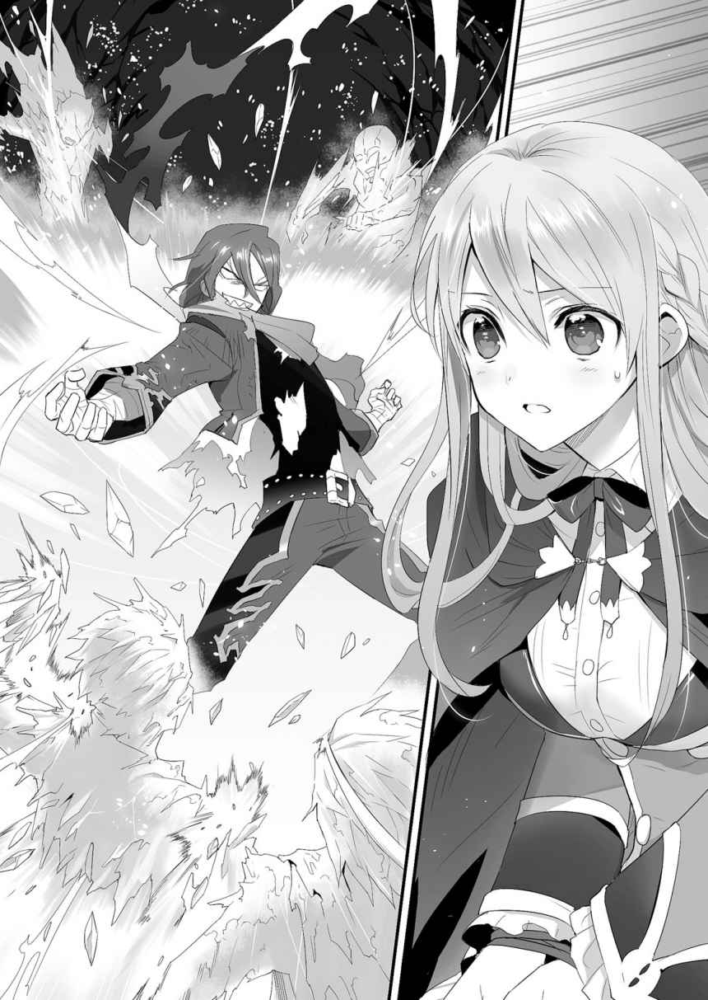

| 死線世界の追放者 | |
| ミズノアユム | |
| (2014) | |
死線世界の追放者
ミズノアユム

富士見ファンタジア文庫
本作品の全部または一部を無断で複製、転載、配信、送信したり、ホームページ上に転載することを禁止します。また、本作品の内容を無断で改変、改ざん等を行うことも禁止します。
本作品購入時にご承諾いただいた規約により、有償・無償にかかわらず本作品を第三者に譲渡することはできません。
本作品を示すサムネイルなどのイメージ画像は、再ダウンロード時に予告なく変更される場合があります。
本作品は縦書きでレイアウトされています。
また、ご覧になるリーディングシステムにより、表示の差が認められることがあります。
口絵・本文イラスト カスカベアキラ
序章 そして紅蓮の雪が舞う
「シィィィィィ───ヒャァ───ッハハハハハ────！」
男が、嘲り嗤う声を上げる。錆びた車輪の擦れるような、耳障りな声。
「よく来たな、反逆者ども！ 散々手こずらせてくれたが、ここが貴様らの終着だ！」
恐ろしい男だった。禍々しい紅蓮色の髪に、爛々と輝く瞳。鉤爪の形に構えた両手は、そのまま男の凶暴な人間性を表していた。
「だが、何だァその様は？ 小娘に、ガキに、老いぼれ！ お遊戯会でも始める気か？」
その殺気に晒され、彼の対面に立つ三人が、揃って身を硬くする。
金髪の少女。短剣を構える少年。初老の騎士。全員が例外なく傷つき、呼吸を乱し、明らかに満身創痍の様相だ。
「──さて、どうするね」
隣の二人にだけ聞こえるように、初老の騎士が言う。
「この状況。分っていないようならば伝えておくが、既に袋小路だぞ」
そう、それは、彼らにとっての袋小路だった。
──ここは、紅蓮の男に逆らった者たちの、処刑場だった。この街を恐怖で支配する男の居城。この三人組も、善戦してはいたものの、ついに追い詰められた。
空は、晴れ間が想像すら出来ない曇天。降り頻るは、男が殺した者達の鮮血で染まったかのような、紅い雪だ。
「にっ......逃げよう！ いくらなんでも、無理だ！」
短刀の少年が、半ば悲鳴じみた声で提案する。
「そう出来れば最善だ。ここから無事に逃れられるのなら、だが」
初老の騎士が、周囲を警戒しながら答える。
そして、彼らの消極的な言葉を受けて──金髪の少女が、口を開いた。
「随分な自信ね、《紅蓮》サマ？ 追い詰められたのは、貴方の方だって言うのに」
艶のある金髪が揺れる。紫の瞳に、紅を引いたような唇。このような場に不釣合いなほどの美貌──しかし、その右半分は、ぼろぼろの包帯で覆い隠されている。
「あァ？」
「貴方を倒す。そうすれば、このクリメイは解放され、私たちを追う者もいなくなる」
聞き違えたかと首を傾げる男に対し、少女は挑戦的に笑った。薄手の服は裾が無惨に破れ、口からは凍える白い息。しかしそれでも、彼女は男よりも遥かに清廉だった。口調、表情、立ち居振る舞い、その全てが、ともすれば男の殺気を超えるほどに鮮烈だ。
「......一つ、良いことを教えてやろう。この俺はな、貴様のような、勝ち目も未来もないくせに理想ばかり吼える馬鹿どもが、この世で一番嫌いなんだ！」
「あら、それなら問題ないわね。何せ私には、勝ち目と未来しかないもの」
薄い胸元に掌を当てる。売り言葉に買い言葉だ。男に対し一歩も引かない。
「ああ、それとね。ゲリラって言うのはやめてくれないかしら。そもそも、私たちから王の座を簒奪したのは、《破戒王》の方でしょう」
「──死んだな。貴様」
ぐぃんと、男が身を屈めた。肉食動物じみた姿勢で前傾し、片手を背後に引き絞る。先程まで激しくも無造作に撒き散らされていた圧力が、分厚い刃のようなそれに変わる。
「今だ。今死ぬ。俺が殺す！ 我がエストラント国王、《破戒王》ローゼンダミス陛下に対する、その不遜、その短絡！ 地獄の業火の中で後悔するがいい！」
「生憎と──地獄の業火なら、もう見飽きてるのよ！」
ぐい、と少女が、顔の半分を覆う包帯を乱暴に引き剝がした。その下の右目は、左目と同じ紫水晶──では、ない。
そこにあったのは、白目のない異形の瞳。痛々しい火傷の痕の中心にあるのは、まるで焼け焦げた炭の如き、艶消しの黒。紅蓮の男はこのとき初めて、驚愕に目を見開いた。
「貴様、何だ、その眼は......！」
「行くわよエルド！ カーティス！」
「ああ、もう、分かったよ畜生っ！ 苦労させてくれるよなあアンタは！」
「同感だ。流石にお姫様、人遣いが荒いな」
傍らの二人が構える。口では不平を言いながら、それが当たり前のように。怯えていた少年が短刀を構え、苦笑する壮年がすらりと、どこからともなく槍を取り出した。
それは少女への信頼。未来への希望。彼らが示すそれら全てが、紅蓮の男を激昂させる。
「貴様ら......舐めてやがるな、この俺を！ 破戒王直下たる四天王が一人、この《紅蓮》を！ いいだろう、そこまで死に急ぎたいと言うならなァ！」
その指先が、何もない空間を搔き毟った。割れた硝子の如くに『術識』を刻む。
だが、ティーセリアは怯まない。
「覚悟しなさい《紅蓮》！ 貴方達の支配もここまでよ！」
──新暦六九一年。
亡国の姫君ティーセリア・ティール・エストラントが、破戒王直下の四天王、《紅蓮》を討伐。都市クリメイを解放する。後に世界にその名を轟かせることとなる灼熱の女王ティーセリアが、歴史に初めて姿を現した瞬間であった。
彼女はこの半年後、《破戒王》ローゼンダミス──かつて彼女の家族を皆殺しにして王位を簒奪した王を、信頼できる仲間たちと共に討ち果たす。
そして、新たな時代を担う女王として、かの王の恐怖と暴力によって荒れ果てたエストラントを、慈愛と希望を以て復興させることとなる。
──そう。それは、ありふれた英雄譚にして、稀有なる歴史の一ページ。
──人道を外れた暴君に、亡国の姫君が仲間と共に挑み、平和と安定を築く物語。
──数多の死線を越えた人々の、奇跡のような再生の時代。
しかし。
この物語──英雄に倒された彼の物語を語るには、この瞬間から十年後。
女王達の英雄譚が終わった、その後の時代へと、飛ばなければならない。
第一章 紅蓮、再臨
１．
新暦七○一年。
交易都市クリメイ、西の山中。
「......はぁ、っ......」
道なき道を、少女が駆けていた。フードの下の息は荒く、その足取りはひどく頼りない。右手は切り立った岩壁。左手は深い森。──少女は、逃走していた。
「待ちやがれ！」
背後の藪を蛮刀で払い、髭面の大男が姿を現した。少女は更に足を速めようとする。
だがその前方に、昏い眼をした老人が回り込んでいた。足を止めた少女を、次々と駆け付けた十名ほどの男たちが取り囲む。
「ったァく、やっと捕まえた。手間取らせやがって。いちいち逃げ出すんじゃねえよ。大切な商品なんだ、大人しくしてれば、悪いようにはしねえんだぜ？」
「無駄口叩くな。ざっざとやれ。元は、お前が、じっかり見張らねえのが──」
「へーへー、悪かったよ、親父。小言はやめてくれ」
少女は素早く周囲に視線を巡らせる。悪いようにするも何もない。彼らは少女を、誰とも知れない相手に売り飛ばそうとしていた盗賊だ。その証拠に、少女の手首は未だ、縄できつく縛られている。
「ところで、結局どっちに売るんだ？ 《連理の茨》か？ 《波喰い》の方か？」
「そんなもん、高く売れる方に決まってんだろ」
「いや待て、売ろうとしてこっちが捕まったら意味ねえじゃねえか。やっぱり《波喰い》の方が安全だと思うぜ。なあ親父？」
「無駄口を叩くなと言っている......」
盗賊たちが楽しげな算段を交わす。そのうちに、少女の視線が一点で止まった。すぐそばの、崖の側面──そこに、蔦によって隠された洞穴がある。
即決。少女はそこに飛び込んだ。
「あ！ この野郎！ くそ、見かけによらずちょこまかと！」
「逃がずな、追え、馬鹿共！」
盗賊たちの罵詈雑言を聞きながら、たたたたた、と少女は奥へ進む。一か八かではあったが、洞窟は、思った以上に広いようだった。加えて、妙なことに、
「......寒ッ!? 何だこりゃ、凍詰草でも生えてンのか！」
背後で、盗賊たちの愚痴が反響した。日が差さない洞窟の中であることを考えても、あまりに温度が低すぎる。しかし今はそれよりも、ただ逃げることだけを考える。
「っ！」
がつん、と。盗賊の一人が投げつけた石が、少女の後頭部に命中した。走っている勢いそのままに、少女が地面に倒れ込む。歓声とランタンの光が近付く。
「ハッ！ 大当たりィ」
少女は倒れたまま這うように進むが、すぐに冷たい壁につき当たってしまう。どのみち行き止まりだったのだ。痛みと絶望に、少女は悔しげに唇を嚙む。
笑みを浮かべ、ゆっくりと近づいてきた盗賊たちが──ふと、首を傾げた。
「大人しく観念し......あ？ なんだ、そりゃ？」
ランタンが高く掲げられる。少女は、自らが突き当たったその壁が、ただの壁でないことに気付いた。盗賊たちともども、茫然と、それを見上げる。
「氷の、柱？ いや、それに......」
洞窟の中央に鎮座しているのは、巨大な氷塊だった。
天井と床を繫ぎ、周囲の壁を凍らせている。この洞窟の異様な冷気は、そこから発生しているようだった。そして、何より彼らの眼を引いたのは、その中身だった。
「......人ォ？」
氷塊の中には──一人の男が埋まっていた。
暗くてはっきりとは見えないが、若い男のようだ。いくら寒いと言っても、水場もない洞窟のど真ん中に氷漬けの死体。明らかに自然現象ではない。
自然現象ではない。そして、これが起こせる神秘を、少女は知っていた。
「──術識？ どうしてこんなところで......」
少女は思わず呟いた。視線を下にやる。
氷塊の下、周辺の壁全体に、『線』が描かれている。雪の結晶のような、蜘蛛の巣のような、規則正しい紋様。少女が倒れた拍子に割れた氷柱の先端が、どこか現実感の薄い『透明の線』になって、ほどけるように消滅した。老人が眼を眇める。
「死線......術、識？ ......なんざ、こんな場所で......」
この世の万物に宿る霊的な力『死線』。それを操り、様々な現象を起こすのが『術識』。
ただし、その使い手は限られており、盗賊の首領らしき老人は、術識の氷塊にというより、この不可解な状況そのものに警戒心のようなものを抱いたようだった。
「何だよ、親父？」
「......ざっざと出るぞ。ぞいつを捕まえろ」
老人の濁った声に応じて、男達が近づく。少女もまた我に返った。彼女とて、まだ諦めてはいない。彼女は氷に背を預けて立ち上がろうとした、そのとき。
──びし、と氷にヒビが入った。
「あ？」「え」
驚く暇こそあれ。瞬く間に、氷塊全体に葉脈のような亀裂が走る。
そして、同時に少女は気付く。ここは洞窟の行き止まりではない。氷が砕ければ、まだ奥がある──その先に、僅かに、光が見えた、ような──
「ああ、面倒くせえ！」
だが、あまりにも遅かった。
髭面の盗賊が、すぐ背後に迫っていた。そして、ことここに至って、たえず逃げ出そうとする金づるを無傷で済ませようと思うほど、彼らは甘くなかった。
「動けねえよう、足の一本でもとっとくか」
振りあげた分厚い刃には、盗賊特有の無造作な殺気が籠もっている。地面に倒れている少女に避けられるはずもない。
「────っ」
それでも、少女は気丈だった。少なくとも、眼を閉じ、頭を抱えて縮こまるようなことはしなかった。奥歯を嚙み締め、恐怖を堪え、襲い来るであろう痛みを覚悟する。
その気丈さゆえに、彼女は、その一瞬を知覚する。
「──ゾく、か」
一瞬のことである。
異様なほど長い腕が、盗賊の顔を、鷲摑みにしていた。
腕は、少女の背後の氷塊から伸びていた。パリパリと音を立てて、今の今まで凍りついていた男の口元が、強引に開かれる。
「な」
「イい度胸だ。コの俺ニ」
盗賊は、まず自らの顔を摑む手が氷塊の男の物だと気付き、次いで氷漬けの死体が動いたことに恐怖し──最後に、もっと現実的な脅威に、その表情を凍らせた。
「いきなリ、刃を向けルとはなァ......！」
文字通りの意味で、凍らせた。
鷲摑みにされた盗賊の髭面が、刃を掲げた腕が、大柄な体軀が、一様に白く染まっていく。漏れかけた悲鳴も、弁解も、その喉仏ごと凍りつく。
「は──ま、待て！ 違」
一瞬のことである。
洞窟を満たしていた氷塊が、凍りついた盗賊が──全て同時に、粉々に砕け散った。
「────」
少女は声すら出せず、その光景を、余すところなく認識する。
氷塊の男が、降臨する。
舞い散る雪片。燃えるような、目に痛い紅蓮の髪。白く凍る吐息は、しかしそれこそがあるべき姿であるかのように、弱々しさなど微塵も感じさせない。
「......手前、は」
盗賊の老人が、茫然と口を開いた。その深い皺に囲まれた眼を剝いて、現れた男の赤髪を、今しがた大の男一人を跡形もなく粉砕したその掌を見た。
地獄の底から蘇った悪鬼でも見たかのような表情だった。
「──殺せ！ 奴の首を刎ねろォ！」
老人が、その枯れた外見からは信じられないほどの大声を響かせた。未だ自らの仲間が殺されたことにすら気付けなかった盗賊たちが、それでようやく眼を覚ました。
一瞬の恐怖、困惑。
そして、それらを搔き消す怒号が、狭い洞窟に響き渡った。
「あ───、ぁ──。ああぁぁぁぁ、アぁぁぁぁぁぁ、アぁぁぁぁぁ、アぁぁぁぁぁ」
凍っていた喉を慣らすように、長い音を伸ばしながら、赤髪の男が洞窟の出口に顔を出した。片手に引きずるのは、腹に巨大な氷の刃が刺さった老人。
「あぁぁァ──ハッ！ 何だ一体、雑魚どもが。誰の差し金か知らんが、盗賊風情が俺サマを殺そうなんぞ百年早ぇ」
「ゲボッ！ おの、れ、げぇっ、亡霊、が......！」
老人が、血反吐を吐いて男を見上げる。
「亡霊？ 何言ってやがる。──もっとも、目覚ましには、丁度良かった、がな！」
男は老人を壁に投げつけると、腕を真横に振る。指先に沿って透明の線が刻まれ──瞬間、老人の胸を巨大な氷の杭が貫いた。血飛沫と、くぐもった悲鳴。

「ご......ぼっ......」
その体から、光放つ糸──『死線』が漏れ出し、解けるように、ほつれるように、中空に消えていく。生命力、あるいは魂などと形容されるもの。『死線』とは、古来からこうして、人が死ぬ時に多く姿を現したがために、そう呼ばれる。
やがて、死体は傷口から白く凍り付き、ぱりぃんと崩れ落ちた。彼に殺された者は、死体すら残らない。返り血は男に届く前に凍りつき、奇怪な赤い雪へと変わっていた。
「フン。......チッ、しまったな。何日寝ていた？」
木々の隙間から見える空は、気持ちの良いほどの晴天。差し込む光に眩しげに目を細めながら、男は周囲を見渡した。
その顔立ちは、目つきの悪さと表情の凶悪さを除けば、存外に若い。その服は火に巻かれたかのようにぼろぼろで、その下の肌にも、ところどころ生々しい火傷痕がある。
「一人ぐらい、半殺しにして残しておけば良かったか......」
「ヒ、ヒィッ！」
その時、近くの藪から、盗賊の生き残りが飛び出した。半ば恐慌状態で、森の中へと逃げてゆく。赤髪の男はそれを見、さしたる感慨もなく右腕を振り被り──
「やめて！」
澄んだ声が響いた。男の手が止まった。
「くだ、さい──」
止まり、そして、獣じみた反応で翻った。
「！」
鋭い氷柱が、色あせたフードを貫いた。
洞窟の傍に立っていた小さな人影。氷柱はその顔のすぐ横を貫き、フードを岩壁に縫い付け、──銀に近い豊かな白髪が、ばさりと広がった。
「......あァ？」
振り向いた男が、訝しげに眉をひそめた。
そこには、一人の少女が立ち竦んでいた。肌は白く、丈の合っていない服が、その華奢さを際立たせている。聡明そうな碧眼が、不安と緊張を湛えて男を見返している。
──男は無造作に腕を振った。
突き刺さっていた氷柱が、突如として真横に走り、少女の顔を殴り飛ばした。ひとたまりもなく悲鳴を上げて、少女が地面に倒れる。
「チッ、ガキか。──くだらん、お陰で一匹逃がしただろうが」
少女の手首は縄できつく縛られている。不意をつかれた理由も、氷柱を外した理由も明白だった。男の察知能力は、このような戦意も戦力もない相手には極めて鈍い。
「......っなん、なんですか、あなたは......」
少女が、口の端から血を流しながら、呻いた。その視線は、周囲に散らばる盗賊達の残骸に向けられている。
「どうして、こんな、......ひどいことを」
「あァ？ 何だ、貴様、こいつらの仲間か？」
「ち、違います！」少女が心外だとばかりに首を振った。「──その、捕まっていて。なんとか、逃げようと」
「攫われか。そんなところだろうな。ならば何故庇う？」
「で、ですから、殺されるほどのことはしてな──ッあう！」
男は、虫でも払うように少女を蹴り飛ばした。それなりに手加減はしたが、起き上がり掛けていた少女がまた倒れる。男は威圧的に見下ろす。少女の言っていることがまるで理解できなかった。殺さなくても良い？ 何を言っているのだ、コイツは。
「もういい、黙ってろ。──逃げた奴もいずれ殺すが、今は後だ。小娘、この近くにクリメイがあるだろう。道を教えろ」
「っ......え？ それ、だけですか？」
要求が小さいのが意外だったのか、少女が目を細める。だが、男がまた表情を歪めて片足を上げると、慌ててこくりと頷く。
「わ、分かりました！ すぐ近くです。......クリメイに、何か用が？」
「......何か用か、だと？」
男の声音が、にわかに沈んだ。
「用。用か！ ククク......ハハハ......シィヒャァ──ッハハハハハハァ！」
突然、堪え切れないとばかりに笑い出した。森の木々が揺れるほどの邪悪な哄笑。
「面白い冗談だ！ ──再び支配するのだ、この俺が！ あの忌々しい反逆者......ティーセリアとかいう小娘め！ 待っていろ、俺を殺し損ねたことを後悔させてやる！ 少しばかり不意を打てたからといって調子に乗るな！ あの程度では他の四天王は超えられん！ 破戒王は超えられんということを、骨の髄まで叩きこんでやる！」
少女は、突如の男の狂乱に身を竦ませながらも、男が叫んだ内容がよほど予想外だったのか、思わずと言った様子で問いを挟んだ。
「ティーセリアって......女王様とお知り合いなんですか？」
「──なに？ 女王？」
男の哄笑がぴたりと止まった。少女を射殺しかねない目で見下ろす。少女はやはり怯みながらも、上体を起こし、はっきりと目を見て答えた。
「だから......この国の、エストラントの王様です。破戒戦役の英雄。灼熱の女王、ティーセリア・ティール・エストラント女王陛下」
「あン？」
「え？」
「「......んん？」」
鏡合わせに首を傾げた。一瞬、どこか弛緩した空気が流れ──気を取り直すように、じゃき、と男の指が少女につきつけられる。
「そうか、貴様さては奴の手の者だな？ エストラントの王が破戒王以外にいるものか」
「はい!? ちょ、ちょっと、待って下さい！」
少女が慌てて、縛られたままの手を胸元に持ってきて、首を振る。
「ですから、その破戒王を倒して、ティーセリア様が女王になったんです！ もう十年も前に！ あなた一体、いつからあそこで凍ってらしたんですか！」
「何を、世迷言を──ぶっ」
男の額に青筋が浮かび、指先が空を切る。だが、その顔に茶色い紙切れがぶつかった。しわくちゃの新聞だ。恐らくは盗賊たちが持っていたものだろう。男は、それを忌々しげに剝がし──その目が見開かれる。そこに記された日時。発行場所。内容。
見出しになっている『破戒王討伐十年紀』という文言。
「──おい小娘。今は何年だ」
「えと。新暦で七〇一年です、けど」
「この、エストラント王国の王は誰だ。いつ王位についた？」
「......ティーセリア様。だから、十年前です」
男の明確な困惑の気配に、少女は身を硬くしながらも、同じ説明を繰り返す。
「たった数人で反旗を翻しながら、わずか半年で破戒王を倒し、国を取り戻した。向こう百年は語られる英雄譚だと、そう習いました」
「......この近辺に、クリメイという街は、あるんだな？」
「交易都市クリメイ、ですね。ティーセリア女王陛下が最初に解放した町。公国をはじめとする他国との関係も厚い、エストラント東の要で──」
男が、横の岩壁を、無言のまま、思い切り殴りつけた。
──轟音と共に、その背後の岩壁に、巨大な氷柱が突き刺さった。
岩肌が揺れ、がらがらと音を立てて崩れ落ちる。落ちて来た尖った石片が、少女の前髪を掠め、偶然にも手首の縄を断った。少女の顔から血の気が引く。
「......ふざけるな！ 何だこの弱さは!? どうなっている！」
崩れ落ちる落石の音にも負けない声量で、男が吼えた。この規格外の破壊ですら、彼にとっては不満なのだ。そして男は、少女の首元をつかんで、強引に立たせる。
「案内しろ！」
「......信じて、くれましたか？」
「確認するだけだ！ ──もし謀ったのなら、その時は覚悟しておけ、小娘！」
「噓はついていません。それと......シアリーです」
「あァ？」
少女は、自由になった両手で服についた土を払うと、胸元に手を当てて、真っ直ぐに男を見上げた。毅然とすら言える表情だった。
「小娘じゃ、ありません。シアリー・ノルトクロイツと言います。あなたのお名前は？」
少女の真っ直ぐな視線がひどく忌まわしい。だが、男はこれ以上少女に手を出す余裕はなかった。空を見据え、ただその問いに、吐き捨てるように答えた。
「紅蓮」
「紅蓮さん。それでは、よろしくお願............え？」
少女が眼を丸くした。男は、驚きに見開かれた少女の瞳に僅かに溜飲を下げながら、静かに、──まるで世界に言い聞かせるように、その名を名乗った。
「エストラント王国国王たる、破戒王ローゼンダミス直下が英転兵。
──四天王が一人、《紅蓮》のウルズナだ」
そう、これは。
ありふれた英雄譚にして、稀有なる歴史の一ページ──の、余白。
人道を外れた暴君に、亡国の姫君が仲間と共に挑み、平和と安定を築く物語──の、影。
数多の死線を越えた人々の、奇跡のような再生の時代──を生きるにはあまりにも場違いな、死を背負う、一人の追放者の物語だ。
２．
「アンタの顔に見覚えあるかって？ いや、悪いがちょっと分からねえなあ。俺がこっちに配属されたのはつい最近でね。知り合いでも捜してるのか？」
都市クリメイ。
エストラント地方、東の大都市であり、かつては城砦都市──今は交易都市の名を持つ。真逆ともいえるその名称の変化は、ひとえにティーセリアの活躍によるものだ。
破戒王の時代、クリメイは、隣国に対する壁の役割を担っていた。
だが現在、かの女王の手によって国交が整えられ、その他にもいくつかの要因が重なった結果、交流地としての発展の道を選ぶことになっている。
「...........................！」
そして──『城砦都市のクリメイ』を支配していた男は、それはもう、絶句していた。大口を開けて、啞然と、固まっている。
「破戒王の時代？ そりゃあ酷いもんだったらしいぜ。出入りも自由に出来なくて、空も朝から晩まで曇ってたって話だ。ま、誇張だろうがな。今じゃ見ての通りの賑わいだよ」
門番。年若い警備兵。商人。民間人。女性。子供。
「ティーセリア女王？ あの方がいなきゃ今のこの国は無いよ」
気持ちの良い笑顔で、気持ちの良い晴天を見上げ、皆、一様に楽しそうに笑う。
「ティーセリア女王陛下はそりゃあもう綺麗なお人でねえ。立ってるだけで星も花も恥じらうってくらいさ。ウチの子もあれくらい淑やかに育ってほしいもんだ。ああ、でも、エルダーテン様とはいつ婚約するのかねえ」
ぼろぼろだった石畳は、綺麗に舗装されて、子供たちが楽しげに走り抜け、すかすかだった通りには露店が並び、豊かな喧騒で満ちている。
「ティーセリア女王様」「女王陛下」「エストラント史上最高の王」「美しく艶やかな」「炎のようなお人」「何より強く頼れる」「我らが」「偉大なる」「ティーセリア様！」
最初に尋ねた兵士が、初見の旅人相手に、にこやかに笑う。
「まあ、楽しんでってくれよ。なにせ今年は、破戒王が倒されて丁度十年！ 進撃の始まりになったこの交易都市クリメイも、一層盛り上がってるってわけだ！」
「......ざけるな」
「うん？」
「ふざけるなよ、貴様らァ！」
「ま、待って下さい、落ち着いて──」
ざん、と男が地面を踏みつける。傍らのシアリーが焦燥する。当然、予測された出来事だったが、どのみち無力な少女一人が止められるものではない。
「いいだろう！ ならば！ 今ここで！ もう一度思い出させてやゲハァッ!?」
そして、男が反吐を吐いて倒れた。振り上げられた腕が、地面に落ちる。重く熱い息を吐いて膝をついた。止めようとしたシアリーは、男を支えるような格好になる。
「ど、どうしたんですか、ウルズナさん？」
「くそ！ 触るなっ......！ チィ、あの女ァ......！」
屈辱に顔を歪め、震える腕を見つめる。未だ残る火傷の痕から、煙すら上がっている。男は、傍らの少女を突き飛ばし、大声で脅しつけた。
「──食事と！ 住処を用意しろ！ 閉鎖空間ならどこでもいい！」
「え？ ──あ、は、はいっ！」
「──どうなってやがる！」
ずだん、とコップが乱暴に机に置かれ、中の氷水が跳ねた。
破戒王直下が四天王の一人、《紅蓮》のウルズナは、並べられた料理を片っ端から凍らせてから、口の中に放り込む。がりごりと響く咀嚼音に、対面で慎ましやかに食事をとるシアリーが顔をしかめるが、今はこれが、彼にとって最も効率的な回復手段だ。
場所は、クリメイ市内のとある食堂だ。下手な騒ぎを避けるため、シアリーの配慮で、個室を手配している。
「お、落ち着きましょう。また追加しますか？ こちらはいかがですか？」
「十年だと、いや、十年にしても、まさか、こんな馬鹿な......！」
差し出された皿入りの串焼きをまとめて凍らせ、串ごと嚙み砕く。ちなみに、食事や、ぼろぼろになっていたウルズナの衣服の替えなどは、全て盗賊団から拝借した金によるものである。人数が居ただけあって、それなりにはなった。
「くそ、あの小娘が！ よくもクリメイを、交易都市だと？ ふざけてやがる......見ていろ！ 力が戻ったら、すぐにでもこんな町、再制圧してやる......！」
「で、できればそれは、やめていただきたいんですけど......でも本当に、身体の方は大丈夫ですか？ ひどい火傷でしたが」
「──ガキに心配されるほど俺は落ちぶれちゃいねえ！ 死にてえか！」
「す、すみません」
シアリーが頭を下げる。そして、恐る恐ると言った様子で口を開いた。
「あの......それなら、ひとつ、聞いても良いですか」
「あァ！ 何をだ！」
「四天王......《紅蓮》さんは、女王様との戦いで十年前に死んだとお聞きしました。それが、どうしてあんな場所に？ ──いえ、その、今の状況の把握も必要だと思うんです！」
ウルズナはシアリーを睨みつけるも、自らのこめかみに爪を立てた。確かに、一理はある。彼とて、今、自分が途方もない状況に置かれていることくらいは察していた。
「今は『ウルズナ』の方で呼べ。二つ名は使うな。......確かに俺は、あの小娘──ティーセリアの攻撃を受けた。視界に収めた全てを焼きつくす、あのおぞましい瞳！」
黒瞳の記憶を振り払うように、串焼きを嚙み砕く。
「だが、だ！ 俺はあの程度で死ぬほど柔じゃねえ。もっとも、出力ばかり高いせいで、あんな山間まで吹っ飛ばされる羽目になったがな」
長い冷凍でややぼやけてはいるが、反逆者の中で妙にしぶとい三人組のことも、彼らを処刑場に追い詰めたことも、ウルズナにとってはつい先程のことだ。
「だが忌々しいことに、俺は瀕死......じゃねえが、傷は、まあ、浅くはなかったと言える。ゆえに俺は、そう、──大事を鑑み、洞窟の中に死線図を張って己を封印した」
「......封印、ですか？」
「氷の......強いて言うなら加護か。言っても分かりはせんだろうがな」
「あ、それなら分かります。学院で習いましたから」
あっさりと返ってきた言葉に、ウルズナが眉を上げた。
「学院？」
「あ、そうか、御存じないんですね。アル・マグリス上級学院。破戒王の支配以前にあったものを参考に、女王様が復興させた教育機関です。わたしは、そこの三回生でした」
胸元に手を当てる。軍服とも私服とも言えない妙な服装だと思っていたが、つまりそこの制服ということだろうか。シアリーは、自分の知っている話題に入るのが嬉しいのか、心なしか弾んだ様子で言葉を続ける。
「炎、氷、風、地、雷、水。それに光と闇。死線が持つ八つの属性に応じた、もっとも基本的な術識──自然識、あるいは属性識と呼ばれるものですよね。加護の自然識は、その属性に応じた『防護』の力を行使する術識──合っていますか？」
「......そんなことまで教えているのか、学院とやらは？」
「はい。わたしは一般科でしたから、実践まではしていませんでしたが」
ウルズナの知る限り、術識とは人が扱える神秘の業だ。それが今は、戦士でもないガキに教えるほど一般的になっているというのか。
「......まあいい。そうだ、俺が使ったのは加護の氷識、《蓮花葬》。対象を仮死状態にして保存する術識だ。そして俺は、氷性死線さえあれば、それを吸収して傷を癒せる。傷が万全に癒えるか、近くに破戒王に類する死線を感じれば解凍されるようにした」
だが、すぐに発見されると思っていた。ウルズナは運悪く不覚を取ったが、たかだか数人の反逆なぞ、増援によって即座に圧殺されると、そう考えていた。
それが、まさか、まさか、だ。
「......でも、結局、助けは来なかった。破戒王は、ウルズナさんを捜しに来る暇もなく女王様の進撃で倒され、革命は成ってしまった？ 今は七〇一年で、クリメイ解放が六九一年ですから......十年、あなたはあの場所で、眠っていた」
改めて言われると、冗談にしか思えない。だが、他ならぬ彼が治めていた街を満たす見違えるほどの活気は、それを少女の戯言で済まさない。
「......え、えっと......その......ご、ご愁傷様です？」
「その露骨に気を遣ったような顔をやめろ！」
シアリーの喉元につきつけた極小の氷柱が、無色の死線となって消える。術識の出力が足りない。傷が治り切っていない。シアリーの手前ああ言ったが、かの灼熱の瞳の直撃を受けたウルズナは、下手すれば消し炭一歩手前だったのだ。
「あの女め......やってくれる......！」
そう、すなわち、想定外は一つ。
現女王ティーセリア。ローゼンダミスが弑逆した、かつての王家の生き残り。彼女の評判は町中でも頻繁に聞けた。破戒王を破った英雄であり、強く優しい女王。あの小娘が。四天王を、破戒王を倒し、この腐ったような平和と安寧の頂点にいるのか──
「すいませーん、追加でーす」
その時、個室の扉を開けて、給仕らしき少年が入ってきた。手早く料理の皿を置いていく。この辺りでは珍しい黒髪に、童顔。十代半ばほどか。ウルズナが見ていることに気付くと、快活な、間抜けな笑みを浮かべる。
「こんちわ！ お二人は、クリメイに来るのは初めてですか？」
「......いや。一度ある。十年以上前にな」暗い響きに、少年は気付かない。「そういう貴様も、この辺りの生まれじゃねえな」
「あ、はい、おれは王都の方から。十年ってと、破戒王の時代ですか？ 大変でしたね、あの頃はただ生きるのも難しかったくらいだって聞いてます」
シアリーがウルズナをちらちらと横目で見る。全く鬱陶しい。
「もともと力で広げた版図だ。当然そうなる。もっとも奴らは、攻勢には向いていても、防衛には向いていなかったようだがな。......そうだ、あのクソ馬鹿間抜けどもめ......あんなガキにあっさりやられやがって......！」
「は、えーっと......？」
流石に少し危ない空気を感じ取ったのか、少年が言い淀んだ。シアリーが間に入った。
「あ、あの、給仕さん！ この近くで、宿はありますか？」
「え？ あ、ハイ！ それなら、この先のですね......」
二人の慌てたような会話を尻目に、ウルズナは再び十年ぶりの──かつてとは比べものにならない上等な食事を、氷水で乱暴に流し込んだ。
３．
翌日は、ひと通り『観光』に費やした。
ウルズナの目下の目的は体力回復だ。だが、仮宿に引きこもるなど性ではないし、シアリーの話だけで現状を判断するわけにもいかない。
だが、やはりというべきか、ウルズナの神経は逆撫でされる一方だった。広がった街。舗装された道、水路。市場、服屋や武器屋、墓地や教会。
「研究院......随分とまあ、小ぢんまりとしやがって」
噴水のある広場の端に立ち、遠くにある塔を見上げる。破戒王が立ち上げた禁制死線技術研究機関だ。今は健全に再編され、一部などは民間に開放されているらしい。
「何か、知っているものはありましたか？」
背後からシアリーが顔を覗かせた。手には氷菓子、腕には大きな紙袋。他にも、手首やポケットに小袋をいくつもぶら下げている。
「......観光気分か！ 良い御身分だな」
「はい？ ──あ、いえその、これは！ なんだか歩いてたら渡されて、試食だって言われて、その、断るのも悪いと......でも、美味しいですよ？」
言いながら、溶けかけた氷菓子の残りを慌てて食べる。当人は気付いていないが、一口ごとに露骨に表情が輝く。どこか小動物めいた、なんというか、懐柔が容易そうな姿だ。周囲の露店から次々と菓子を押し付けられる姿が目に見える。
「って、そうじゃなくて！ あの、こちらどうぞ」
シアリーが、抱えていた中の紙袋を差し出す。
「誰が菓子なんぞ食うか、馬鹿が」
「違います！ 歴史書......というより、女王様と破戒王の戦いについての本と、あと最近の新聞です。必要だと思って」
「............」
ウルズナは少女を睨みつけた。昨日、食堂の時からそうだったが──妙に気を回してくる。ご機嫌取りというより、性分なのか。鬱陶しいことこの上ない。
「次はもう少しマシなものを持ってこい！」
「す、すみません」
シアリーは謝りながらも、安堵の息をついた。ウルズナは本に視線を移す。
「エストラント史......クソッ、勝手に人を歴史にしやがって」
数十年前まで、エストラントは小国群に近い状態だった。版図ばかり広い国の王家は力を失っており、領主達が内外で小競り合いを繰り返していた。
その混沌期はしかし、一人の男が王家を乗っ取ったことで終わりを告げる。王宮付きの死線学者だったという男──後の破戒王、ローゼンダミス。
城は焼かれ、王族は全て殺された。（この際に、秘蔵っ子だったティーセリアが生き延びたらしい）そして破戒王は、そのカリスマと術識技術で強大な軍を作り上げると、エストラントを再統一、圧制、暴政を敷いた。
「クリメイ解放が六九一年。破戒王が倒されたのが......半年後だと？」
いくら末期のローゼンダミスが治世に興味を持たず、反乱の種をそこら中に蒔いていたとはいえ......何より信じられないのは、破戒王が直々に見出し、一人一人が一騎当千であったはずの『四天王』全員が倒されているということ。
「現在の、破戒王残党軍......首領、ディエン？ 知らん。他は......こいつも、こいつも駄目か。チッ、馬鹿共め......」
ウルズナは続けて、新聞の中に入っていた賞金首の手配書にも目を通す。
だが、特に『破戒王陣営の残党』に関する者のほとんどは、既に討たれている。残っているのは、ウルズナも知らない小者ばかりだ。苛立ちを募らせる。
「うわーん！」
その時広場の中心、噴水の近くで遊んでいた子供が泣き出した。鬱陶しげに、ウルズナは視線を上げた。転んで額を切ったらしい。近くにいた母親が慌てて駆け寄るも、たらたらと流れる血に顔を青くした。
「大変！ ......っ」
シアリーが心配そうな顔をして出ていこうとするが、その足が止まる。驚いたように目を丸くして、そしてどういうわけか、街路樹の後ろに隠れた。
狼狽する親子に、一人の女性が声を掛けていた。背が高く、腰にはレイピア。藍色の制服は町の警備兵のものなどとは比べ物にならないほど上等なものだと分かる。
「......騎士か。今の国軍か......？」
「ウ、ウルズナさん、隠れないんですか！ もし見つかったら大変なことに......」
「お前は阿呆か。俺の顔が知られていないのは分かってんだろうが。むしろ、何故貴様まで隠れる」
「う、確かにそうですが......それはその......」
慌てるシアリーを無視し、ウルズナは女性の方を見る。
女性の手元が一瞬輝き、泣いている子供の傷に触れる。何がしかの術識だろう。血が止まり、子供が泣き止んだ。恐縮したように何度も頭を下げる母親に、女性は首を振る。心配で駆け寄ってきた周囲の人々が散っていく──それにまぎれるように、騎士の女性も薄墨色のショールをなびかせ姿を消した。
「大丈夫だったみたいですね。良かった」
「......泣きさえすれば、周りが助けに来るか。気色悪い」
彼の知る限り、他人に弱みを見せれば、付け込まれるのが当たり前だ。......今更ながら、出会った時のシアリーの発言を思い出した。
「？」
自分を虐げた盗賊の死を悼む。その殺害者を糾弾する。もしそれが、今のエストラントの、標準的な価値観だとすれば──
「......おい、小娘、一つ使いを命じてやる」
「小娘小娘言わないで下さい。シアリーです。......使い？ なんでしょうか」
命令の形とは言え、ウルズナがシアリーに直に頼ることはあまりない。少女が緊張した面持ちで見上げる。
「さっき食ってた氷菓子、あるだけ買ってこい」
「............お腹、壊しますよ」
シアリーが曰く言い難い表情をした。
◆◆◆
「成果もなく申し訳ありません、ブランカ・エルンスト様」
「いや、協力感謝する。引き続き調べておいてくれ」
頭を下げる研究者を背後に、彼女は研究院を出た。
ウルズナが、広場で見かけた騎士である。濃い藍色の制服に、首元から伸びる薄墨色のショール。切れ長の眼と、焦げ茶の髪。女性らしい柔らかさとしなやかさを兼ね備えた長身。人目を惹く美貌に反し、その歩みは夜の闇に完璧に溶け込んでいる。
「今日も音沙汰なし、か......さて、どうするか」
拠点に戻ろうとして、ふと別のことを思い出し、彼女は方向を変えた。
──やがて着いたのは、ありふれた食堂の一つだ。流石にもう閉まってはいるが、まだ灯りはついている。確か『彼』は、ここに住み込みで働いていたはずだ。
ふと、がちゃりと扉が開く。中から店主が出てきて、彼女を見て驚愕の声を上げる。
「ああ、もう店じまいですよ──って、こりゃ、エルンスト様！」
「久しいな、主人。夜分に済まない、トシギはいるか？ 少し借りうけたいのだが」
「ああ、アイツなら中にいますよ。好きに使っちまって下さい」
そのまま二言三言、言葉を交わして男を見送ると、開いた扉から中に入る。
「ん？ どうしました店長、忘れ物すか、って......」
店の中では予想通り、見知った顔が忙しなく台所を掃除していた。
「久しいな、トシギ。変わりないようで何よりだ」
「......ブランカさん!?」
やってきた彼女の顔を見て、給仕の少年は飛び上がらんばかりに驚いた。
女王直下、特務騎士機関『オーダー・オブ・ティーセリア』修騎士、ブランカ・エルンスト。それが彼女の肩書きであり。
また、少年給仕──トシギ・キセラヅの後見人、保護者代わりでもあった。
「うわ、お久しぶりです！ いつこっちに来たんですか？」
「何日か前だな。店はどうだ、滞りはないか？」
「てんてこまいですよー。あ、何か食べます？ それか飲み物でも......」
「必要ない。少し寄っただけだ」子犬のような反応に苦笑する。
「......早いものだな。お前を拾って、もう一年にもなるか」
「そうですね。おかげさまで、なんとかやってけています」
「......済まないな。出来るのなら、すぐにでも帰してやりたいんだが」
「あー！ もう、それは本当に良いですから！ あなたのせいじゃないですし！」
トシギは、ぶんぶんと大げさに両手を振る。
「実際、一人だったおれがこうして暢気にしてられるのは全部ブランカさんのおかげなんで」
トシギは、かつて任務途中でブランカが拾った孤児だ。
普通ならしかるべき施設に送るところだろうが、諸事情あってしばらく共に暮らし、そのうちにブランカのツテでここの店長の下で働かせることになり、店の移転に伴ってトシギだけがクリメイに移った。ブランカとしては、弟のようなものだ。
「そう畏まるな。実際、あの時期は私も随分と助けられていたからな」
「そんなことは......ってブランカさん、家の方は大丈夫ですよね？ まさかまた、まるごと物置になってたりとか......」
「............」
ブランカは微笑んだ。トシギのすぐ前に立ち、肩に手を置いて身を寄せる。
「ところで、背は伸びたか？ お前は年の割に少し小柄だからな」
「話そらしましたね今!? やっぱりやってないんですか！ あとブランカさんが高いんですよあと子供扱いやめて下さいあと近いです顔とか胸とか！」
ヒールの分もあるが、背丈はブランカの方がかなり高い。真っ赤になってトシギが距離を取った。ブランカはくつくつと笑う。拾った直後は随分と沈んでいたが、こうして軽く茶化せる程度にまで回復してくれて、本当に良かったと思う。
「全くもう、いいですよ......そういえば、今回はどうしてここに？」
「ん？ 言ったろう、クリメイに寄ったついでだ」
「ですから、何の為にクリメイに来られたんですか。──あ、秘密だったらいいですけど」
トシギが慌てて手を振る。
ブランカの称号である《修騎士》は、現エストラント全体でも十人といない、準英雄級の実力者の称号である。そのブランカの任務は、基本的には機密事項の塊だ。
「そうだな......まあ、強いて言うなら人捜しか」
だが、少し迷った後、ブランカは制服のポケットから一枚の紙を出した。ざっくりとした似顔絵と、外見的特徴が書かれている。
「詳しいことは言えないが、この人物を捜している。もっとも、情報が確かならこんな場所に顔を出しているとも思えないが」
トシギはそれを何とはなしに受け取り、
「うーん、怪しい人はいませんでしたよ──......って、え？」
そこに描かれていた人物に、目を見開いた。
第二章 連理の茨
１．
『馬鹿なっ......この俺がっ！ この《紅蓮》が！ こんなガキどもにィィィっ──！』
己を焼く熱の感触に、男は叫ぶ。
『凍らせてばかりの貴方に、分かりはしないわよ──解放を願う人々の、灼熱の想いは！』
氷河の破片が散乱する処刑場で、燃える少女の声が響く。命を賭けてこの状況に持ち込んだ彼女の仲間二人は、大怪我を負って周囲に倒れてはいるものの、致命傷ではない。それすなわち、彼は一人たりとも殺せなかったということ。
『それと、ガキじゃない──ティーセリアよ！ 貴方を倒し、破戒王を倒すものの名前！ しっかり覚えて──消、し、飛、び、な、さ、い！』
ティーセリアの黒炭の如き異形の右眼が、その視界に収めた全てを焼き尽くしていく。
全てが灼熱に、飲み込まれていく。
『がぁ、ぐあ、畜生！ 小娘！ 小娘が──がぁぁあぁぁっぁぁあっ！』
「！」
硬い壁の感触を背に、ウルズナは目を覚ました。
少年給仕に紹介された宿屋の一室。ウルズナの座る周囲は白く凍りついており、透明の死線図が光っている。傍らの、霜の浮いたパンを嚙み砕く。肉体の傷はだいぶ癒えてきたが、まだ足りない──あの忌まわしき、希望の灼熱を搔き消すには。
「クソ、クソッ......！」
がり、と床の氷を引っ搔くと、ベッドを挟んで反対側で、身じろぎの気配がした。
部屋の角にはまり込むように、布団にくるまって少女が眠っている。ウルズナにベッドを使う習慣はなく、また彼の放つ冷気を考えると、この位置取りしかなかった。
「......ん。おはよう。ございます」
眼を覚ました少女が、寒さに震えながら身を起こす。
「今日は、どうされますか。また、昨日のように観光ですか......？」
ウルズナは奥歯を強く嚙んだ。
「──いいや。クリメイの再制圧は、やめだ」
「......やめ？」
「変わりすぎだ。こんな開放的な町、支配しても何の役にも立たん」
シアリーは一瞬、ウルズナの言った言葉が理解出来なかったようだった。だが、すぐに布団を撥ねのけて、身を乗り出す。
「本当ですか！」
「ここで貴様に噓をついて何の意味がある？」
「そ、そうですね。......良かった......」
その声は明らかに弾み、安堵していた。当然だろう、彼女からすれば、自分のせいで町が一つ滅ぶかどうかの瀬戸際だったのだ。
そして、少女のそんな心情を慮ることなく、ウルズナは平然と続けた。
「王都へ向かう。アルゾールだ」
「え？」
「ティーセリアを殺しに行く」
シアリーの、水差しに伸ばしかけたままの手が止まった。
ウルズナは開いた五指を、一本ずつ、内側にねじ込むようにきりきりと閉じていく。
「ティーセリア。その部下の男。それに老兵──は、本によれば死んだのだったか。その三人と、それに連なる者は全て敵だ。クリメイは城砦ではない。役に立たん」
ウルズナがかつて使っていた居城部分も、ティーセリアとウルズナの戦いの時に半壊し、後に解体されている。それは昨日の時点で確認済みだ。
「──ちょっと待って下さい！」
シアリーは思わずと言った様子で身を乗り出して、声を荒げた。
「どうして、そうなるんですか!? 昨日、あれだけ見たじゃないですか！ この国は、あなたの知る十年前とは、全く異なっているんですよ！」
「ンなことは分かっている。王は死に、同胞も死に、そしてその結果、エストラントは俺たちの手を離れ、女王の手によって平和に統治されている」
そこまで分かっているのなら、と言いかけたシアリーを遮る。
「だが、それがどうした？ 敵は敵だ。王が、同胞が死んだ程度のことで変わりはせん。俺をコケにした奴らには全て、しかるべき報いを受けさせてやる！」
「............っ！」
シアリーは言葉を失いながらも、すぐに気を取り直して首を振る。
「どうしてですか？ ......あなたは離れるべきです。国外にでも、どこにでも。せっかく生き残れたのに、あんな簒奪者の、破戒王なんかの為に──」
「──言葉に気をつけろ、小娘！」
殺意が、ぐんと伸びた。
ウルズナの指先が、シアリーの首に食い込んだ。
「っ......！」
シアリーが苦しげに眼を細めた。そこまで力は込められていない。だが、異様に高い体温と、分厚い刃のような殺気が真正面から少女を貫く。
「なんか？ 貴様が我が王の何を知っている？ どちらが簒奪者だ！ 不実だろうが何だろうが、数十年前まで混沌そのものだったエストラントをまとめたのは王の力だ！ その為に俺と同胞がどれほど戦い、戦い、戦い、死に、死に、死んできたかも知らんガキが！」
「......っ......」
「調子に乗るなよ。お前を生かしているのは、俺の慈悲でも情けでもない。気紛れだ。お前の生殺与奪の権限の全ては俺が握っていると言うこと、忘れるな」
シアリーが苦しげに目を細める。しかし彼女は、ウルズナの威圧を、並の人間ならば気絶しかねない《紅蓮》の殺意の奔流を受けながらも、ウルズナを見返した。
「......今のアルゾールは、女王様が治める都です。『英雄』も大勢いらっしゃいます。......辿りつけるんですか。十年前の女王様に敗北した、あなたが」
「っ、貴様......！」
図星を指された。ギリと歯ぎしりの音。シアリーの喉元が凍り付きはじめ──
「！」
突然、その手が離された。半ば放り投げられるようにベッドに突き飛ばされ、圧力から解放された少女が咳き込む。
「けほっ、......どうしたん、ですか？」
ウルズナは少女の問いを無視した。驚きと訝しみが半々の表情で、じっと窓の外を見ていた。そのまま、しばらく無言でいたが──不意に、立ち上がる。
「小娘。出るぞ。ついてこい」
「え？ ──あ、わ、待って下さい！」
宿を出たウルズナが向かったのは、クリメイの中央市場だった。
朝の喧騒のど真ん中だ。華奢なシアリーが真っ直ぐ歩くには難儀なようで、先程から何度も人の波に吞まれそうになっては、ウルズナに乱暴に引っ張り出されている。
「しゃんとしろ、軟弱者め」
「わ、分か、──ぷはっ、分かってますっ」
先程から彼らは、人通りの多い道を、流れに逆らうようにばかり歩いている。ウルズナは何やら呟きながら、苛立ちを募らせていた。
やがてウルズナは、並び立つ露店の中で、少し奥まった位置にある店を見咎める。どうやら装飾品を売っている所らしい。
「......おい小娘。何か買え。何が良い？」
「分かってます。大丈夫です、もう......はい？」
いくつか間を置くと、驚き半分、困惑半分の眼でウルズナを見て、首を傾げる。
「えっと、その......頭でも打たれましたか？」
「なかなか言うな貴様！ いいから買え！ なるだけ暢気に、楽しそうにだ！」
「な、なかなか無茶を言われますね......!?」
シアリーはおそるおそる、店にある髪留めを指差した。安物だが、作りはしっかりしているようだ。
「えっと......じゃあ、あれを......」
「あれか。買ってこい」
硬貨を渡す。首を傾げるシアリーだったが、大人しく店員に話しかける。ウルズナも一歩踏み込んだ。二人の姿は奥まった店の中に入り、通りから見えなくなる。
その瞬間、ウルズナは身を翻した。
石畳に火花が散る。振り向いたウルズナの瞳が、肉食獣のそれのように見開かれた。口の端が吊り上げられ、両手が鉤型に強張った。途方もないほどの『殺意』を撒き散らす。
「──！」
そして、いくつかの反応が起きた。
対面やや斜めに居た露店の主が椅子から転げ落ちた。通りがかった新聞売りらしき男が足をもつれさせ、対面から走ってきた人力車と衝突した。屋根に止まっていた鳥の群れがギャアギャアと喚き、互いにぶつかりながら羽根を散らして逃げていく。
その全てが、運悪くウルズナを、視界の端にでも捉えてしまったものたちだ。
紅蓮のウルズナの『威嚇』──無差別殺意の発散。シアリーのように覚悟していたならばともかく、日常を送っている一般人が不意打ちで浴びせられれば、こうなる。
だが──
「......違ェな。逃したか......？」
肉食動物の眼が不満げに細められ、身を翻した。起こった騒動は、所詮は一時的なものだ。ウルズナが店内に戻ると、あっという間に喧騒に紛れて消えていった。
「ウルズナさん？」
シアリーが声を掛けてきた。買った髪留めをさっそく使い、前髪をまとめている。ウルズナは彼女を連れだすと、少し離れた位置にある路地に入り込んだ。
人が入ってくればすぐに分かる路地だ。ウルズナはどかりと段差に腰を下ろすと、買っておいた近辺の地図を開いた。
「きゃっ！ ......何なんですか！ 一体、さっきから」
「尾けられている」
端的な答えに、シアリーが息を吞んだ。
「宿にいた時点で妙な視線を感じた。捉えきれなかったが、間違いねえ」
「......じゃあ、これを買ったのも？」
「確認だ」
奥まった店に入り、尾行者が深追いしてきた瞬間に『威嚇』で捕らえようとした。ウルズナは察気術の心得はないが、向けられた害意に対しては野生動物めいて鋭い。
だが、それは失敗した。直前まで確かに気配はあったのだが、まるで軟体動物のように、ぬるりと抜けられたのだ。威嚇が届いたのは関係のない間抜けな奴らだけだ。
「隠密か？ だが、どうも、覚えがあるな......あの誤魔化され方......」
少なくとも、門にいた警備兵レベルではない。こちらが尾行に気付いたことも伝わっただろう。しかし目的は何だ？ 逃がした賊が報復に来た？ それとも、ウルズナの正体を知る者がいるのか？ ──その時シアリーが、小さく呟いた。
「......ＯＯＴ」
「なに？」
「オーダー・オブ・ティーセリア。女王直下の、特務機関です」
聞いたことがない言葉だ。昨日読んだ女王関連の書物でも、現在のエストラントの保有武力は国軍と、街ごとの警備機構くらいだったはず。──いや、確か。
「確か......進撃の途中で、破戒王に支配されていた騎士団を丸ごと一つ解体し、直属の部下として再編成したという記述があったな。それのことか？」
「はい。......女王の私兵。『特別任務』専門部隊。表向きには、親衛隊とその候補生ということにされていますが──正規軍には任せられない後ろ暗い仕事を、秘密裏に片づけたりするのは、こちらの仕事です。隠密というなら、恐らくその方々かと」
彼女にしては珍しく、俯いて表情を見せないままに説明する。
元破戒王陣営。現女王直下。破戒王討伐の英雄。
「どうやって俺を見つけたかは知らんが、なるほど、丁度良い」
ウルズナが暗い笑みを浮かべ、立ち上がる。路地を出ようとすると、シアリーが、その後についてきた。
「何故ついてくる？」
「だって......また、殺すつもりじゃないですか」
両手でスカートを押さえ、俯いたまま、消え入りそうな声で。
「......貴様は本当に、アタマの中が花畑か何かか？」
怒りよりも先に、呆れを覚えた。既にウルズナの中で、彼女への興味は消えかけていた。彼にとって重要なのは、脅威ある敵だ。何も出来ない少女に用は無い。
「好きにしろ。余計な真似さえしなければ、人質くらいにはしてやろう」
ゆえにウルズナに、少女の事情を斟酌する気などまるでない。
だが、それでも、この平和ボケ極まりない世界で、破戒王の眷属に出会ってしまったこの少女の不運を、単純に事実として、憐れだと思わないわけでもなかった。
２．
「......気付かれた？」
『......はい、申し訳ありませ......ハァーッ......』
ブランカが、告げられた言葉に眉をひそめた。
彼女らが臨時で借り受けている、クリメイのとある屋敷。
ブランカは、来て数日でゴミ捨て場の様相を為している執務室の窓際で、報告を受けている。手元には、緑の宝石が嵌まったペンダント。
風の噂石。一つの親石から分割した子石同士で遠隔の通話を可能にする、風属性の『死線の理器』だ。有用な道具だが、大気の影響を受けやすいのが難点でもある。今も、向こうが町中を移動している為、雑音が多く混じっている。
『対象は......二人......移動......。男と少女............、......の方は初見です。協力者か。現在、西門へ......恐らく行き先は、アルゾール行きの旧山道......と......』
「目的地が分かるのか？ 何故だ？」
『ザザッ......はい』足を止めたか、雑音が減る。『地図を落としました。これ見よがしに印がつけられた......恐らくは、意図的かと。くそっ、何だ、あの異常な殺意は......』
後半の言葉は風の音に紛れてしまう。ブランカは再び聞き返した。
「尾行の看破に、......誘い出し？ 錬騎士ワイク、それは確かに『目標』なのか？」
『確かです！ あの忌々しい、破戒王の......！』
恐れと怒りが半分ずつの声が、風の噂石越しに伝わる。錬騎士ワイクは、ＯＯＴの前身──破戒王に支配されていた騎士団出身の古参だ。経験は豊富だが、それゆえ破戒王の関係者への畏怖も強く、攻撃的になりやすい。
「......分かった。深入りはするな。念の為に聞くが、《波喰い》──ディエンはその場にはいなかったんだな？」
『......はい。遠目でしたが、それはありません。残党軍の一味に対しては、最大限の注意を払っています。この通信も、万が一にも盗聴されることはありません』
「それならいい。あれに先を越されることが最悪だ。──街を出てくれるのならば、こちらとしても都合が良い。小隊を連れて、私が向かう」
『な......そこまでする必要もありません。門を出次第、私が......』
「やめておけ。我々の任務の意味を理解していないわけではあるまい」
『しかし、隊長......』
「錬騎士ワイク。この任務の責任者は誰だ？」
『......修騎士ブランカ・エルンスト。貴方であります』
「分かってくれれば、それでいい。──バレているのならばそれで構わない。現状を崩さない程度に尾行を続けろ。通信終了」
『............。了解致しました。通信終了』
そして音声が消え、ブランカは溜息を一つつく。
「ブランカさん。どうかしました？」
少年が扉を肩で押し開けて入ってきた。両手には掃除道具を抱え、エプロンと三角巾姿。足の踏み場もない床を器用に歩み寄ってくる。
「......トシギ。お前の情報が、どうやらアタリだったらしい。少し出てくる」
「え、本当ですか!? だったら......」
「ついて来るなよ、言わずとも分かると思うが」
少年の言葉を即座に切って捨てる。
「お前が見た相手が、本物ならば尚更だ。危険が伴う。こうしてここに連れてきているのも、情報の確認と、お前の安全の為だ」
通り過ぎ様、ぽんと頭を叩く。彼女に比べて頭一つ分低い背丈。
「もし追ってきたら、私はお前を罪に問わなければならない。......大人しく、掃除して待っていなさい」
「......はい。──ていうか何ですかこれ、どんだけブランカさん整理が苦手なんす」
言葉を遮るようにばたんと扉を閉めた。トシギは多少仕込んではいるが、いかんせん一般人だ。任務の性質から言っても、連れて行くわけにはいかない。
それにしても、まさか本当に『当たり』とは。──嫌な予感がする。ブランカは、クリメイに散っている部下達へと通信を飛ばしながら部屋を出る。
『私だ。小隊に通信。錬騎士ワイクが標的を発見した。これから──』
......そして、数刻の後。
ブランカは小隊を率い、クリメイから延びる山道を登っていた。
エストラント王都、アルゾール方面へと続く旧山道──現在は平地で回り込む街道が出来ており、使うものは少ない。だが、人気がないのは互いにとって都合が良いだろう。
「............」
前方で、フードマントを被った二人組が、山道を進んでいる。
迷いなく歩く大柄の男と、不安げにその後に続く少女。確かにワイクの言った通り、彼女たちの標的に間違いない。二人だけに見えるが、油断はしない。少なくとも、町中でＯＯＴの尾行に気付くなど、偶然や幸運で出来ることではない。
やがて、男の方が足を止め、振り返った。少女はその背後に回り込む。
「ここならば構わんか。──出てこい、軟体動物ども」
「！」
やはり見破られていた。ブランカは、包囲が完了したのを確認すると、
「......そうだな。街を避けてくれたのはありがたい──殊勝な態度だ」
自らの『気配』を隠していた薄墨色のショールを解き、山道の中央に姿を現した。
それに合わせ、二人組を包囲するように、ＯＯＴの精鋭騎士たちが森から姿を見せる。念の為、半数はまだ森の中に控えさせている。
「特務騎士機関オーダー・オブ・ティーセリアが修騎士、ブランカ・エルンスト。女王の命により、貴公らを連行する。理由は分かるな？」
レイピアを抜いて突き付ける。だが、彼女が求める反応は得られなかった。
少女の方こそ、あからさまに身を小さくしているが──問題は男の方だ。意識は確実にこちらに向いている。だがそこには、こちらを観察しているような奇妙な余裕があった。
「どうした、賊めが......！」
ブランカの斜め前に立つ騎士──彼らを真っ先に見つけたワイクが高圧的に叫ぶ。
「怯えて声も出せぬか、賊め。生意気な真似をしおって、少しでも長く生きていたければ、命乞いでも土下座でも何でもしてみせよ！」
「......ワイク、口を」
慎め。二人組、特に少女から目を離さないようにしながら、ブランカがそう諫めようとする。だが、丁度そのタイミングで、フードマントの男の方が、口を開いた。
「そのショールは、ヴィーヴィルのものだな」
「......なに？」
男がそう言った。ブランカは一瞬、言葉の意味が理解出来なかった。ショール。ＯＯＴの独自装備である『墨流し』のことか？ しかし、何か返す前に男が何度か頷いた。
「いや、構わん。思い出した。道理で、誤魔化され覚えがあったわけだ。纏った者の気配を薄める闇性加護の理器、クラニオーレ・ヴィ・ヴィーヴィルの『死装束』だな。
というと、元となった騎士団というのは、まさか奴の『逝騎士団』か？ はっ、再編成とは、ものは言いようだな！ ──ゴミの再利用だ」
「貴様、何をわけの分からぬことを......」
理解不能な言動に、ワイクの語調が更に強まる。
だがブランカは、凄まじい勢いで思考を加速させていた。彼女の洞察力と経験が、目の前の男の意味不明な言葉を、看過してはならないものだと直感していた。
「そうか。あの《死にたがり》まで敗北したということか。......ふん、良い気味だ。だから武力を他者に依存するのはやめろと言ったんだ、阿呆め」
ブランカは思考する。記憶を検索する。ヴィーヴィル。違う。その名は。そうだ。
《死にたがり》、クラニオーレ・ヴィ・ヴィーヴィル。闇識の担い手。最悪の支配者。破戒王ローゼンダミスの抱えた、四人の悪鬼の一人。
──『四天王』！
「だが、......気に喰わんな。仮にも戦友の残滓を、そうやって我が物顔で使われるのは」
今や半ば禁忌となった『四天王』の本名を知り、それを戦友と呼ぶ男が動く。
男は体勢を沈め、ざん、と両手を地面につく。四つん這い？ ワイクの言葉通りに、土下座をする気になったのか？ 否。面を上げたその眼光は、肉食獣のそれだ。
「死ぬぞ、貴様ら。今だ。今死ぬ。──俺が殺す」
「！」
明らかな、殺意だった。ブランカはレイピアを構える。包囲していた騎士たちが剣を抜き、術識を織ろうとし、ワイクが剣を抜いて一歩を踏み出し、──少女が叫んだ。
「駄目です、逃げて！」
「賊？ 賊だと？ どちらが賊だ、この、ティーセリアの狗どもがァ！」
その誰よりも遥かに速く、男が跳ねた。四肢をたわませ、地を弾く。森の木々をひとっ飛びに越える高みへと跳躍。遥か上空から、己を囲う騎士たちを睥睨した。
「どいつもこいつも、ティーセリア、ティーセリアと、気に入らん！ 猫も杓子も、二進も三進も、ティーセリア、ティーセリア、ティイセリアだ！ いいか、俺はなァ、その名を聞くだけで吐き気がするのだ！」
男の広げた腕。猛禽の鉤爪めいて強張らせた両の手。
虚空を薙いだ両腕に沿って、硝子を砕いたかのようなヒビ割れが生じる。それは無色の死線図。『術識』の発動だ。
「氷性滅私識──《紅蓮の凍蜘蛛》！」
そして男の背後に現れたのは、巨大な『氷の爪』だ。
一つ一つが、周囲の樹よりも大きく分厚い。無数に発生したそれらが、男の薙ぎ払いに呼応して、旋風の如く周囲を荒れ狂った。
「な、があっ!?」
今まさに攻め込もうとしていたワイクは反応が遅れ、直撃を受けた。咄嗟に掲げた大剣もその大質量を前にまるで意味を成さず、血の線を引いて吹っ飛ばされる。
「なっ、ワイクさん──おのれ！」
「『全員、下がれ！ 退避しろッ！』」
包囲する騎士たちが剣を抜く。だが即座に、風の噂石を介したブランカの命令がその場に響き渡った。騎士の一人が、信じられないとばかりにブランカを見た。
「な、隊長！ 何故」
「馬鹿者！ 目を逸らすな！ 上だ！」
騎士がブランカの指摘を受け、振り仰いだ時には、すでに遅かった。
「シィ──────ッヒャァァァァァァァア────ッハハハハハハ────！」
落下してきた男の爪撃が、青年騎士に墜落した。騎士はクレーターを生み出して地面にまるごと埋まり、それを蹴って獣が再び跳躍。旋転。指先、足先、その全身から雲のように死線が尾を引く。死線が氷爪となる。氷爪が破壊となる。男が嗤う。
「温い。温い、温い温い温い！ この程度で、──こんな程度で、破戒王を、我ら四天王を超えたとほざくのか、貴様らはァ！」
嗤い、叫び、そして激昂する。傍からは理解不能な感情の爆発。
大樹を盾にした騎士がそれごと薙ぎ払われる。別の騎士が杖を振り、織られた巨大な炎の狼が紅蓮の男に喰らいつこうとし、「温いと！」凍結、「言っている！」握り潰される。
間断なき氷爪の嵐に更に、三人の騎士が吹き飛ぶ。男は、瞳孔すら開いたような狂笑。
「安心しろ！ やすやすと殺しはせん！ この俺サマを謀った罪、ただの死では漱がれんぞ！ 自らの無力を泣き叫び悔い嘆きながら、絶望と恐慌の果てに死んでゆけ！
シィァ──ハハヒャハハ──ハァーッハッハッハハッハハハハア！」
一人残ったブランカが、腰元に手を回し、両手に一本ずつレイピアを抜いた。
「氷識......いや、《紅蓮の凍蜘蛛》──！」
ブランカは、氷爪の豪雨を一手速くすり抜けた。踏み込みで蹴りあげた土が、数コンマ秒の差で氷爪に喰われる。跳躍。宙空にいた男に肉薄する。
「間抜けめが！」
嘲笑う男が腕を薙ぐ。氷爪が放射状にブランカに襲いかかる。彼女のレイピアとの質量差は明白だ。折れ散る刃と潰されるブランカを幻視し、にやりと男が笑んだ。
ブランカは小さな声で呟く。レイピアの細い刀身に、橙色の光が芽吹く。
「『私の棘は地に芽吹く』」
──氷爪が止まった。その中心にレイピアが突き立っていた。受け止めた？ いや、違う。ブランカは、そのまま中空で停止した氷塊を斜めに駆け、男へと走り込んだ。
「なに」
男が瞠目する暇すら与えない。再び腰より引き抜かれる新たなレイピア。彼女のコートには、何十本もの細剣が矢筒のように収められているのだ。
──風を貫き、レイピアが先端にほんの僅かな血をすくった。男は獣じみた反応で身を捻っていた。切り裂かれた薄茶色のフードの片鱗が宙を舞う。
二人が、距離を置いて着地。奇怪なオブジェとなって宙空に留められていた氷爪が、時間経過と共に死線に溶ける。それでも、レイピアだけはその位置のまま残っていた。
「ほォう......！ 少しはやるのもいるようだなァ！」
切り裂かれたフードの下。つう、と額から血が流れる。その血が赤く蒸発し、再び凍結する。そうして生み出されるのは、紅い雪片。
「ひっ......！」
「な、あっ......!?」
悲鳴が上がる。破戒王討伐の栄を持つ、あるいは受け継ぐ勇士たちが、恐怖と驚愕に慄いた。ブランカは手元の風の噂石を輝かせ、通信を送る。
悪夢のようだった。見回せば、その場に居るのは、男とブランカたちだけだ。既に『肝心の相手』は残っていない。逃げられた。失態だ。だがしかし、どうして想像出来る？
まさか、目標を目の前にして、こんな埒外の障害が立ち塞がるなど。
「『部隊全員に通達。想定外の事態だ。──紅蓮だ。破戒王直下の四天王《紅蓮》が生きていて、我々に敵対している』」
晴天そのものの空から、はらり、はらりと、血交じりの雪が降り頻る──
◆◆◆
「シィィィ────ッァハハッハハハハア────！」
ウルズナは地を蹴った。その術識に反し、戦闘において彼の熱量は際限なく燃え上がる。彼を捕えんとした岩の茨を蹴り、更に上空へ。
衝動のままに、片腕を無造作に伸ばす。──ごぉん、と背後の大気を吹き飛ばして、五指の氷爪が装塡される。そのまま前方を薙ぎ払う。
「『現時点を以て想定状況の全てを破棄、お前たちは状況Ｂ「対英雄における撤退戦」を起点に離脱し、その上で、──確保を最優先にしろ。ここは私が喰いとめる』」
騎士たちのトップらしき女、ブランカは距離を保ちつつ、風の噂石で指示を出している。殺到する氷爪をまとめてレイピアで受け『留』め、また新たな一本を抜く。その刀身が、橙色の死線に覆われる。
「『私の棘は地に芽吹く』──地性創造識・上級！」
剣先で地面を撫でる。描かれる橙色の線から湧き上がるは、岩と土砂で出来た無数の茨だ。のたうつ大蛇さながらに、地平を荒らしながら着地直後のウルズナを襲う。
「こざかしい！」
しかし、まさしく巨獣がヤブを払うように、氷爪によって岩茨の濁流が断ち割れる。だが、爆ぜ散る土煙と氷雪でウルズナの視界が覆い隠される。
「拘束者、地性現象識・中級」
ブランカは上空にいた。ウルズナを飛び越えるような半円軌道。土煙越しにウルズナに狙いを定め、術識によって鏃のような形に姿を変えたレイピアを投げ放つ。
同心円状の衝撃波が、その眼下に花開いた。
「──ギ──」
軋むような笑い声に、ブランカが瞠目する。
土煙の奥から、ウルズナは、いっそ楽しげに彼女を見据えていた。
歯で喰らい止めたレイピアの刃を吐き捨て、着地寸前のブランカめがけ両手を振り上げる。る殺意。ブランカはレイピアを眼前で交差。橙色の死線が、六芒星の陣を描く。
「地性、加護識！」
「シィィ───ヒィア───ハハハ────！」
──ブランカの背後の木々が、純白に凍りついて砕け散った。
制服の端が、構えたレイピアが、半ばほどから凍りついて砕け散った。ブランカの抵抗力がもう少し低ければ、同じ運命を辿っていただろう。
「馬鹿な、鉄製の刀剣が、凍結破砕だと......！」
「我が凍蜘蛛は鋼すら砕く。低温脆性破壊などと我が王は言っていたがなァ」
「っ、化け物め......」
「ハッ！ 貴様ら、それで俺を殺しに来たつもりか？ 頼れる部下共は何処へ行った？ 降伏は無駄だぞ、武器を取って抵抗してみせろ！」
「ごちゃごちゃと、煩い奴だ。お前こそ、他の残党軍はどうした？」
「残党軍ン？ 何だそれは。俺が知るわけがなかろう」
「......なに？」
ふと、ブランカの表情が変わった。思わず漏らしたといった疑念だった。
「あァ？ 何だ？」
ウルズナの熱狂が僅かに冷める。今の言葉のどこに、彼女が疑念を抱く余地がある？ 彼女らは、復活したウルズナの存在を察知して追ってきたのではないのか。
「............」
──そしてウルズナは、ようやくその違和感に気付く。
ウルズナの扱う術識《紅蓮の凍蜘蛛》は、シンプルに言えば『術者のあらゆる行動に氷識を付随させる』能力だ。戦闘態勢に入ったウルズナは、凍結と氷爪を撒き散らす意思ある雪嵐と化す。それを知っていれば、中途半端な包囲などまず行わない。
「......貴様は、この俺を狙ってきたわけではないのか？」
「......お前は、残党軍の一味ではないのか？」
同時の質問。鏡合わせの困惑、疑念、推測──ブランカが苦々しげに口の端を歪める。
「私が考えるに。お互いに、どうやら何かしらの情報の齟齬があるようだな」
「ほう、興味深い解釈だ」
ウルズナの言葉に、ブランカは眼を細める。
「ならばどうする、《紅蓮》。話し合いで解決してくれるのか？」
「無論──」ウルズナは、再び両腕を強張らせた。「否だ。ティーセリアの狗め」
「だろうな。お前が紅蓮本人なのか、何故生きているのか、今まで何をしていたのか。気になることは山ほどあるが、そんなものはお前を殺してからでも十分すぎる。──『私の棘は地に芽吹く』」
ばさりと、コートがはためいた。そこに収められたレイピアの群が露わになる。
「『土に咲く。海に咲く。空に咲く。星に咲く。遍くそれらを地と為して』──地性顕現識《拘束者》」
そして、一斉に橙色の死線を纏うレイピア群。
ウルズナは笑う。地識のエキスパート。攻撃、防御、補助の術識を、戦闘速度で使いこなす。それだけなら小さくまとまったお行儀の良い雑魚だが──
「地性の顕現識。効力は確か、固定だったか？」
「『安定』だ。改めて名乗ろう。修騎士ブランカ・エルンスト。我らがティーセリア女王様より賜りし銘は──《連理の茨》！」
言うが早いか、ウルズナの頭部のすぐ上を、切っ先が通り過ぎた。
「チィ！」
ジグザグの軌跡が、雷光の如くウルズナを襲う。速い。それも尋常な速度ではない。ウルズナは両腕を交差させながら身を更に沈める。その回避もまた攻撃だ。ブランカを左右からの氷爪が襲う。
だが、いつの間にかそこに置かれていたレイピアが、莫大な速度と質量を兼ね備えた氷爪を難なく止める。ブランカはヒールでウルズナを蹴りつける、ウルズナは大きく背後に跳躍、距離を取り再び氷爪を、
「搦め捕れ『拘束者』！」
レイピアが、橙色の死線を輝かせる。刃から広がった死線図は、瞬く間に、突き刺さっていた氷爪全体にまで広がる。
ブランカが踏み込んだ。そして、氷爪ごと、レイピアが神速で振り抜かれた。
「な、──ぐっ!?」
ウルズナはとっさに右腕でこれを防御。体勢を崩しながらも体を捻って着地、迎撃に使った右腕以外の三肢で地面に轍を描く。
「成程、釘付けにするものか。小癪！」
「──《連理の茨》は崩れない。相手が四天王だろうと、依然変わりなく！」
貫いた物を、その状態で『安定』させる力。位置を、状態を、重心を。
顕現識とは、各属性に応じた『性質』を対象に降ろす術識だ。その効力の範囲内において、下位の術識や物理現象に対し一方的な優越権を持つ。あのレイピア一本一本が、不壊の盾であり、不動の檻であり、無双の牙となる。
一方で《紅蓮の凍蜘蛛》は、力自体はありふれたものだ。氷を生み出す。ものを凍らせる。ただしその発生は自在で、その出力は極大である。
ウルズナが身を沈め、ブランカが二刀を構える。──しかし、その時。
遠くから、轟音が響いた。
「......なに？」
戦場とはかけ離れた距離。風に揺らされる木々の悲鳴。明らかに人為的なものだ。
ほぼ同時に、ブランカの耳元の風の噂石が光った。
『修騎......、目標......捕縛！ この......ワイクが......！ 撤退命令を！』
「そうか、よくやった」
ブランカが僅かな笑みを浮かべる。
「......なに？」
対象？ 捕える？ ウルズナは周囲を見る。包囲から外れた騎士たち。倒した者、逃げた者──逃げた？ どこへ？
そうだ、彼女たちはウルズナを捕えに来たわけではないと言った。──ならば、誰を追ってきた？
「......貴様らは、何をしに来た？」
沈黙を保つブランカ。それでも、ただ一つ、明らかな事実があった。
つまり、彼は『後回し』にされていたということだ。
ウルズナという男は、基本的に短気だ。加え、今この時に限っては、短絡ですらあった。がちんと、ウルズナは音高く歯を嚙み合わせた。
「ぶざ、げるなアっ！」
咆哮し、跳び上がる。旋転。氷爪が宙空に生み出され、それを蹴って更に高く跳ぶ。
「！ 逃が、っ」
ブランカはそれを追おうとした。だが、出来なかった。
その半身に、『氷牙』が喰らいついていた。獣の顎骨にも似た、無数の氷の牙。
氷爪など、所詮はもっとも使いやすい一部でしかない。《紅蓮の凍蜘蛛》の真髄は、術者の一挙手一投足、咆哮や咀嚼にすらも、氷識を付随させること。
「っ、か......！」
女騎士が呻く。そしてウルズナは飛び去りながら、発生させた最後の氷爪を、別れの言葉代わりに殺到させた。
「ブランカ、さんっ！」
その時、彼女を呼ぶ声が響いた。どこか聞き覚えのある、少年の声。
それを一瞥すらすることなく、ウルズナは更に森を足蹴にしてその場を後にした。
３．
「......はぁ、っ......」
道なき道を、シアリーが駆ける。フードの下の息は荒く、その足取りはひどく頼りない。その背後からは別の足音が迫ってきており──咄嗟に近くの藪に身を沈める。
「居たか！」
「いや......この辺りにはいないようだ。だが遠くへは行けないはずだ」
「急ぐぞ！ ブランカ隊長といえど、万が一ということがある！」
騎士が去っていくのを確認し、藪から這い出した。その首には、薄墨色のショール。倒れた騎士から拝借したものだった。『墨流し』。隠密行動の多いＯＯＴの隊員が標準装備する、身に着けた人間の『印象』を搔き消す力を持つ対人精神迷彩の理器。
よく知っている。彼らのことは、既に馴染みだ。
「つ......う、......」
崩れかけた表情を、両手で一瞬覆う。轟音はまだ響いてきている。本物の、英雄同士の戦い。巻き込まれずに済んだのは奇跡に近い。だけど、逃れられた。
......わたしは、なんてことをしてしまったのだろう。
「大丈夫。大丈夫、です、から......」
自分を勇気づけるために、学院の友達のことを思い出す。ルームメイトのこと、生徒議会のこと、教師のこと、家族のこと──
「『──我が風は道を開く』」
「っ！」
いきなり吹いた横殴りの突風に、慌てて傍らの木にしがみつく。森の中でそんなものが吹くわけがない。緑色の死線が、木々の間に光っていた。気体と移動現象を司る、風識だ。勢いで『墨流し』が吹き飛ばされてしまう。
「......ク、ハハ！ ようやく見つけたぞ、『烙印』！」
押し退けた木々の隙間から、ＯＯＴの制服を着た男が顔を出す。最初にウルズナに倒されたはずの男だった。片足を引きずり、全身から血を流してはいるものの、シアリーを見る目は嬉々と輝いている。シアリーはすぐに起き上がる。
「っ......！」
だが、目の前に現れた深い谷が、彼女の行く道を阻んだ。弾みで蹴り飛ばした石が、芥子粒ほどの大きさになり、谷底を流れる白く泡立った激流の中に音も無く消えた。
「『我が風は敵を捕う』」
奇怪な突風が、今度は逆に、シアリーを森の中へと引きずり込んだ。地面に転がり、踏みつけられる。彼女を見下ろす男の、腕輪についた緑色の宝石が輝いた。
「『修騎士ブランカ！ 目標を捕縛！ このワイク・ジェイカーがやりました！ どうぞ撤退命令を！』」
連絡を終えると、男は再びシアリーを忌々しげに見下ろす。
「《紅蓮》の紛い者とはな、手間を掛けさせおって......それも烙印の力か？」
男、ワイクは喜悦の表情を浮かべてはいたものの、その言動には明らかに余裕がなかった。思い出してみれば、最初から彼には落ち着きがなかったように思う。
シアリーの知らない事だったが、ワイクは尾行の際、ウルズナの『殺気』を直に受けている。墨流しの力でどうにか捕捉こそ逃れたものの──四天王のそれを不意打ちで受け、彼は平常心を大きく乱していた。
「......違い、ます。わたしは、『烙印』なんかじゃ、ありません......！」
少女は男の独白に割り込むように口を開いた。
「シアリーです。シアリー・ノルト......」
少女の鳩尾に、金属製の踵がめり込んだ。かは、と息が止まる。
男は無造作に、少女の襟元に手を伸ばす。一回り丈の大きな、手首から首筋まで隠す上着を、一気に胸元まで引き下ろした。
「！」
かぁっと少女が頰を染める。しかしそれ以上の狼藉はなかった。男は、穢らわしいものでも見たかのように顔を歪めた。あっさりと手を離し、風の噂石に語り掛ける。
「『──小隊へ報告。状態はかなり悪い。早急に......』」
男が横目で見下ろす。その眼はシアリーを見ていない。
盗賊も、彼らも、追ってくる者たちは皆、この目をする。無法者の盗賊ですら『それ』を畏れ、彼女に触れることさえ嫌悪した。この国で彼女に味方する者はいない。彼女を救う者はいない。彼女を見る者はいない。
「念の為、縛っておくか。──風性創造識。風よ、これの口を閉じろ」
「！」圧力が強まる。「......」息が出来ない。「......、......」
シアリーは必死に男を見上げた。だが抵抗にもなっていない。嫌悪。恐怖。怒り。悲しみ。それらがないまぜになって胸を搔き乱す。
「抵抗はするな。同情はするが、貴様はもはや──」
少女の心を砕くワイクの言葉は、しかし、最後まで放たれなかった。
シアリーは騎士の背後──森の上空に、星を見た。赤髪を靡かせる、人の形をした星だった。星の光を放つ獣だった。
「な」
──ざん！
紅蓮の獣が、シアリーの真横に着地する。
「貴様、がっ!?」
騎士は地面から跳ね返るような背面回し蹴りを顔面に受けて吹っ飛び、
──やや遅れて、周囲を囲うように、雨あられと降って来る氷爪の豪雨。この崖ごと破壊するつもりかというほどの攻撃だった。
「ハッ、隙だらけだ！ 所詮は廃品、あの騎士以外はクズの集まりらしい──ん？」
紅蓮の男の、凶暴な瞳が──怒りと昂りで濁り曇った凶悪な眼が、それでも確かに、シアリーを見た。
ウルズナは、騎士の男が確かに木々の下敷きになったことを確認した後、少女を見た。
「あ、あの。......あり、が......」
「驚いたな、まだ生きていたのか貴様。とうに巻き添えで死んでいるかと思ったが」
「......何しに来られたんですか、あなたは」
シアリーは乱れた胸元を搔き抱く。ひどく不安定になっているようだったが、投げかけられたウルズナの言葉に、どうにかと言った様子で呆れの視線を返してくる。
「あァ？ 後回しにされて気に食わんから先回りしに来たに決まっているだろうが」
「何を言っているのかまるで分かりません！」
ウルズナは、ブランカたちの狙いがどうやらこのガキらしいと知り、先回りしに来たのだ。《紅蓮》たるウルズナを蔑ろにしてまで優先すべき目的だと？
「チッ、殺しては情報が奪えんではないか。誰だ、大雑把な破壊しやがって！」
「どう見てもあなたです！」
ざ、と草を踏む音。稚拙な口論を打ち切り、ウルズナは背後を振り向く。少女もそれに追従した。氷爪によって開かれた森の一角に、踏み込んできた人物がいた。
「早いな。よくあれを凌いだものだ」
「......認めよう、難儀だったとな」
入ってきたのは二人。一人は地識使いの女騎士、《連理の茨》ブランカ・エルンスト。その制服の脇腹には血が滲んでおり、顔色もやや悪い。
「不本意な助けを受ける程度には、な......」
そして、彼女に肩を貸すように隣に立つ新手。
部下の騎士......ではない。もっと軽装だ。かろうじて背中に、大剣らしきものの柄が突き出した袋を背負っているものの、殺気どころか戦意もあまり感じられない。
咎めるようなブランカの言葉に対し、その少年は気まずそうに目を伏せる。......その姿を見て、シアリーが目を丸くした。
「......給仕さん？」
「あー......どうも。トシギと言います」
言われて、ウルズナも気付いた。黒髪に童顔。確かに食堂で見た少年給仕だ。
「何だ。そのナリで間諜か、貴様？」
「いや、おれは普通の民間人です。......あの、ちょっと聞きたいことあるんすけど」
「まあいい。聞くべきはそこではない。ルートレス、貴様らの狙いは、コイツか？」
少年の言を無視し、ウルズナはまだ半信半疑と言った様子で、シアリーを指差した。
「何故だ？ こいつはただの、盗賊の攫われだ。俺がいなければ今この瞬間まで生きていたかも分からんぞ」
「......お前が知る必要はない、紅蓮」
「ちょ、ちょっとブランカさんっ」
ブランカの態度には先程よりも焦りがあった。トシギが剣吞な空気に怯えている。
「その少女、こちらに渡して貰おうか」
「フン。正直、こんな小娘なんぞどうでもいい。だが」
ビキィ、と指先が、再び空間に亀裂を描く。白に近い無色の、氷性死線。
「貴様らの頼みを受けるとでも思うのか？」
「だろうな。こちらも協力なぞ求めはせん」
「だから！ ホントに、待って下さいって──」
ブランカが半身になり、ウルズナが身を沈め、少年が何かを叫ぼうとして。
次の一手は、予想だにしない方向から来た。
「消えろ......消えろ......亡霊め......！」
──緑色の死線が、帯のように駆け抜ける。森の奥から、崖へと向けて。源は、離れた位置にある倒れた木の下。血まみれの手を伸ばす──騎士、ワイク。
「『我が風は加速する。爆ぜる、吼える、渦巻く、引き裂く、押し流す。我が道を邪魔する者、我が憎悪を受けるべき仇、忌むべき敵、全て我が道から吹き飛ばせ』」
氷柱に全身を砕かれ、倒れた樹木の下敷きになりながら、男──錬騎士ワイク・ジェイカーは延々と死線を編んでいた。雑な単語を並べる力任せの詠唱は、呪いにも似ていた。
破戒王。それに連なる全ての脅威に対する、恐怖。その反動から来る過剰なまでの敵意。この時代の人々が持つ唯一の闇──彼は、最もそれを抱く者の一人だった。
「なっ、ワイク！ 何をしている！」
「うるさいぞ、役立たずが！ 紅蓮だと？ 烙印だと？ 馬鹿げた話はここで終わりだ！ 『上級風性創造識──拉げろ、颶風！』」
生み出された豪風が、螺旋を描く。本来あるべき自然に逆らう、横向きの竜巻が、森の樹木を、氷爪の残骸を巻き上げて、その場に居た四人を、森の向こうへと──先程シアリーが落ちかけた崖へと叩き落とした。
「くっ......トシギ！」
ブランカが、片手でトシギを摑み、もう片方の手に握ったレイピアを輝かせる。橙色の死線を光らせた《拘束者》は、その安定の力を以て彼女を虚空へと留まらせる。
「ブランカさん駄目です！ 離して下さ、──上！」
トシギが叫んだ。彼らの上から、抉り取られた崖が、樹木が降り注いでいた。──あるいは、両手がふさがってさえいなければ、防ぐことも出来ただろうが。
瞬く間に二人はそれに飲み込まれ、為す術なく川の中へと落ちていった。
「この、雑魚がっ......！」
ウルズナは空中で自らの失策を叱咤した。
術識の最大原則の一つ──死線の力は、死を好む。死に瀕する人体から抜けた死線が、発動した術識の威力に上乗せされるのだ。かつてのウルズナなら殺し尽くせていたはずなのに。崖から落ちる直前、血まみれで笑う、瀕死の男が見えた。
「ハハ、ハハハ、見たか──ご、ぼ」
ウルズナは落ちながらも、迫ってきた樹木を腕で弾き飛ばす。焦りはしない。氷爪を蹴って戻り、すぐにあの瀕死の男に留めを刺してやる。彼はブランカとは違い、空も飛べぬ足手まといに気を使う必要もなかった。
「あ」
──気を使う必要もなかった、はずだった。
すぐ横を、少女が通り過ぎた。何が起こったか分からない顔で落ちてゆき──思わずと言った様子でウルズナに向けて手を伸ばした。
「！」
ウルズナはほんの数瞬、思考した。間に合わない。拾おうとすれば、シアリーともども、激流と瓦礫の流れの中に飛び込む必要がある。それは今の彼にはリスクが高すぎる。
いや、それ以前の問題だ。助ける理由がない。意味がない。現エストラント女王直下の騎士団に必要とされているらしい少女。むしろ殺した方がいいのではないか？
ならばどうする？ ──見捨てるべし。
「ウルズナ、さん」
視線を戻そうとした、その直前。
落ちる少女と、眼があった。その口許が動く。恨み事でも言うつもりか。助けて。嫌だ。人殺し。許さない。紅蓮相手に、どれもとんだ的外れである。
「あの」
そのどれでもなかった。
少女は伸ばした手を、はっきりと、自分の意思で、静かに引き戻した。
「......ごめんなさい」
そして、少女は川の中に没した。
「──チィッ！」
ウルズナの中の、何か分からないものが、何か分からないことを言った。
傍らの樹木を蹴り上げ、その反動で身を翻す。加速しつつ、両手を祈る様に組み合わせる。激流の中の少女の体が、小さな籠型の氷爪に覆われた。
落ちていく。落ちていく。落ちていく。落ちていく──
......やがて、駆けつけた小隊の生き残りが、瀕死のワイクを発見した時には──その場には、抉られた崖の傷以外、何一つ残っていなかった。
４．
川がある。
深い森の中に流れる、大きな川だ。周辺に溜まった水が全て流れ込むことで膨大な水量があり、自然のままの地形を通る流れは、急かつ細かな変化を繰り返している。
ふと、その表面に、何かが現れた。一瞬だけ水面に浮かび、すぐ消える。木片か、それとも水生生物か、どちらにしても、妙に不安定だ。再び何かが浮かび、また沈み、浮かび、沈み、また沈み──
──突如、巨大な水柱が幾本も浮き上がった。
いや、水ではない。氷だ。巨人の腕のような氷の柱が、突如水面の端から端へ間欠泉のように幾つも立ち昇り、川を一時的にせき止めた。
そして、その氷柱に引っ掛かって、川辺へと出て来た影がある。
「ハーッ、ハーッ......！」
「............く、はっ」
二人──否、四人の男女。
ウルズナがシアリーを、荷物のように引っ張って川岸へと上がる。
ブランカがトシギを抱えて、ふらふらと川岸に歩み出てくる。
全員が全員、満身創痍であった。ウルズナ、ブランカは動けてはいるものの傷だらけで、シアリーとトシギは、それぞれ無色の死線と橙色の死線に包まれており外傷はないようだが、どちらも意識がない。片や無造作に、片や丁寧に川辺に寝かされる。
「チィッ、あのまま死んでいれば、いいものを......！」
「こちらの、台詞だ......！」
そして、意識の残る両者が睨み合った。ウルズナは両腕をだらんと垂らし、ブランカは一本だけ残ったレイピアを抜く。
ブランカの表情が歪む。流れた血で片目が塞がり、脇腹の傷も開いている。レイピアを握る腕が震えている。
一方で、ウルズナはそれに比べればまだ大丈夫そうに見えた。既に身体も乾いており、敵意を燃やす瞳をますます濁り尖らせる。腕を肩ごと振り回して、言うことを聞かせた。
「死、──ッが!?」
だが、......四肢をついて跳びかかったウルズナの顎を、ブランカの右膝が蹴りあげた。
彼女は、レイピアの刃を猿轡のように横から嚙みしめていた。そこから広がった橙色の死線が、全身に行き渡っている。
浮いたウルズナの身体に、全体重を掛けた肘打ちを喰らわせる。だが、ウルズナもまたブランカの肩を摑んでいた。爪撃とは程遠い、ただ触れただけの一撃──だが、どういうわけか、じゅう、と肉の焼ける音と共に、ブランカの肩から煙が上がる。
「ぐ、がはっ！」
「づぅっ......！」
両者が呻き声を上げ──しかし、ブランカだけが崩れない。彼女を覆う『安定』の術識が、ブランカの傷だらけの身体を、その状態で留めている。
ウルズナを、ブランカの打撃が襲う。心臓に肘、鳩尾に貫手、足払い、踵落とし、掌底。その度に彼女の傷口は負荷を累積しつつも、強引に再起する。
「きさ、おのれ、ェ、！」
「言ったはずだ、《連理の茨》は崩れない......！」
ウルズナは河原に叩きつけられる。起き上がろうとするが、彼とて万全ではなかったのか、砂利についた腕からがくりと力が抜けた。
踏み込んだブランカが、口から刃を外し、最後の一撃を突き込む。怒りと屈辱を湛えたウルズナの瞳が女騎士を睨みつけ──
「............!?」
両者の眼が、見開かれる。
レイピアの剣先は、ウルズナに届く前に止まっていた。
一人の少女が、刃の前に身を晒していた。額に張り付いた白髪。しかし、その碧い瞳は、未だかつてない強さで、目前の脅威を見据えていた。
「何の、真似だ」
掠れるような声で、ブランカが問う。
「自分が何をしているか分かっているのか、烙印の子......！」
負荷が戻り始める。その肉体が本来の損傷を騒ぎ出す。余裕はない。あるはずもない。
「四天王だ！ 《紅蓮》！ 破戒王の下、暴虐の限りを尽くした破壊の化身！ 君とて元はマグリスの学生、それを庇うのがどれほどの邪悪か分からないわけじゃないだろう！」
「分かっています。だけど、駄目です」
シアリーは、ブランカの鬼気迫る糾弾を受け入れ、しかしすぐに、緩やかに首を振った。
「駄目なんです。わたしはまだ、この人に、何も言えてないから」
「何だと？ これは忠告ではない、勧告だ！ 君程度、妨害にもならない！ 退け！」
「それも、重々、承知しています。──だからわたしは、こうするしかありません」
シアリーは、片手に握った刃を首筋に当てた。氷の刃。彼女の身を、落下と水没から救った氷の檻の破片だ。
「──この人を殺したら、わたしは死にます。そうしたら、あなたは困るでしょう？」
二者の視線が交錯する。だが、膠着するほどの時間は残されていなかった。
「......そうだ。私は、君を、死なせずに連れていくことが任務だ」
ブランカは細い息を吐き、
「少し苦しいが、我慢してくれ」
踏み込んだ。レイピアに橙色の軌跡が走る。彼女の刃は、傷ついた人間を傷ついた状態で安定させて保持出来る。その効果は、自他を問わない。
シアリーは唇を嚙み締め、迫りくる刃を見つめ、──その矮軀が、真横に吹っ飛んだ。
対象を見失った刃先が弾かれる。ブランカの目算が狂う。
「何、を」
悪鬼が、ブランカを見上げていた。
自らを庇った少女を躊躇なく薙ぎ払い、振り抜かれた指先が、亀裂を刻む。
「何を、なァ、にィをォ！ 言ってやがる、貴様らはァア......！」
激しく、焦燥していた。それは、ともすれば苦悶とすら表現出来るものだった。それは、ウルズナにとって、凋落や濁流などよりも、遥かに大きな衝撃だった。
シアリー・ノルトクロイツという少女の取った言葉、態度、行動、その全てが、《紅蓮》を、ウルズナという男を、強く強く打ち据えていた。
「もう良い！ 貴様ら全員、今、ここで......！」
激昂のままに、死線が走る。幾分かサイズの減じた氷爪がそれでも無数に発生し、ブランカ目がけて殺到する。
「──と、待っ、た、ぁあア！」
半ば悲鳴のような、力任せに上げられた大声。ブランカの身体が横から引き寄せられる。彼女を庇うように抱え込んだのは、傍らの少年だ。
「トシギ・キセラヅが命じる──打て、『スレドラ』！」
割り込んだ少年の瞳が、ほんの一瞬──ひどく異質なものに変わる。
袋に入ったままの大剣が、片手で振り抜かれる。刀身部分が楕円に広がった、柄つきの盾のような奇妙なシルエット。五本の氷爪は、その広い鎬にいなされて地面に転がる。少年の握る掌と柄の間に、葉脈のように死線が光っていた。
「トシギ、離れろ、私がやる......ぐっ」
「動かないで下さい！ そんなボロボロの身体で何するつもりなんですか......！」
庇われたブランカはトシギを引き剝がそうとするが、もはやその程度の力も残っていないようだった。ウルズナは、少年の奇妙な武器を訝しみながらも、再度腕を引き絞る。
「その袋の中身、契約武器か。だがその曲芸、どこまで続けられる！」
「──待って！」
掲げたウルズナの腕に、がしりと、シアリーが抱きついた。
「お願いします、もうやめて下さい......っ！」
「貴様、まだ......！」
しゅう、と触れた部分から僅かに蒸気が立つ。少女は必死に腕を押さえながら、ウルズナと、そしてブランカに眼を向ける。
「こんなところで戦っても、共倒れになるだけです！ ──エルンストさま、あなただってそれは分かっているでしょう！」
「だから何だ......！ 紅蓮を、見逃す理由にはならないっ。トシギ、離せ......」
「......いや。おれは、その子の案に賛成したいところですね」
まず答えたのは、トシギだった。彼は、袋に入ったままの剣を静かに下ろした。
「トシギ！」
「どうも、変だと思ってた。ワケが分からない。それが、途中からしか見てないおれだけならともかく──もしかして、この場にいる人全員、状況を理解してないんじゃないですか？ それなのに殺し合うなんて、流石に無茶でしょう」
当人も咳き込む。一瞬の視線の異質さはすぐに消えていた。ブランカを支える腕が震えている。だが、当の彼女は、それすらも引き剝がせない。既に半ば意識もないのか、ぐったりと彼に体重を預けている。あの激流の中で、相当に無理をしたのだろう。他ならぬ、トシギを守るために。
「だから、何だ」
ウルズナが睨みつける。その周囲にナイフほどの大きさの氷爪が並ぶ。
「無知なだけの、ガキが。この俺を前にその甘ったるい言動。死を覚悟してのことだろうな？ たかだか剣士一人に死に損ない一人で、俺に抗えると思っているのか？」
「......あんたは、おれの言うことを、分かってくれる人だ」
「その戯言の根拠を言ってみろ！」今度こそウルズナが叫んだ。「上手く俺を笑わせられれば、手元も狂うやもしれんぞ！」
「......だって、あんたは、ブランカさんと同じことをしてるだろ」
トシギは、一語一語慎重に、しかし真っ直ぐに、ウルズナに言う。
「死に損ないの、足手まといを、助けて。だからここにいる」
「──ッ！」
ウルズナは咄嗟に何か言おうとした。だが出来なかった。彼自身、自らが取った行動を理解出来ていなかったのだ。トシギの言葉を受けるように、シアリーが腕を摑む力を強めた。
「......甘くても、何でもいいですから。最初に、わたしは、ちゃんとあなたに言わなきゃいけなかったんです。ウルズナさん、本当に」
ウルズナの腕に額をつけて、祈るように。
「『助けてくれて、ありがとうございました』」
氷の刃が、深々と突き刺さった。
力を失って落ちた氷爪は、濡れた地面に小さな穴を開けた後、死線となって消えた。
「クソ、が」
呻く。引き絞っていた腕が、下ろされる。シアリーが顔を上げ、安堵に表情を和らげた。
「ここまでか。......──ハッ。いいだろう。貴様らの勝ちだ」
そして、ウルズナは、そのまま地面に突っ伏した。
「え、──痛っ」
茫然とそれを見下ろしたシアリーが、いきなり、痛みに顔を歪めてウルズナの腕から手を離す。少女の細い指先は、赤く、ひきつれていた。火傷していたのだ。
「......ウルズナ、さん？」
紅蓮の男の身体から、膨大な熱が発生していた。
第三章 女王の名の下に
１．
エストラント王国、北の王都アルゾール。
その中心たる『王城』の、ビロードの絨毯の敷かれた廊下を忙しなく歩く音がする。
「......分かった、御苦労。だが今は大切な時期だ、細かな変化がないかたえず気を配れ。報告書も忘れるなよ──以上、通信終了」
じゃらりと、何十にも及ぶ風の噂石の束を腰に揺らして、彼は歩む。かっちりと着こなした礼服の胸には、薄墨色のポケットチーフ。精悍な顔立ちだが、目元にある、一見化粧にすら思えるような年季の入った隈が異質だった。こめかみを叩く姿も含め、どうにも神経質な姿が窺える。
──特務騎士機関オーダー・オブ・ティーセリア機関長、エルダーテン・リックバック。
それが彼の──十年前、亡国の王女ティーセリアに率いられ破戒王を討伐した、最初の仲間にして無二の相棒エルドの、現在の姿であった。
「ティー。やっぱり、ここにいたか」
エルドは扉を開けると、安堵の息をつきつつ、眉をひそめた。
王城を山とするなら、その中腹。広く張り出したバルコニー。庭園と見紛うような手入れの行き届いた花壇に、精緻な装飾を施された柵。正面、眼下には、有事の際に住民を集められる広場がある。破戒王のクーデターの際に半壊した王城だが、再建の時も、この場所だけは正確に再現された。
──不義の子であった彼女が、本来なら立つはずの無かった場所。
「ティー。......ティーセリア」
「............」
「......『女王陛下』」
「......リックバック」
三度目の呼びかけで、そこにいた女性はようやく振り向く。
地面につくほど長くなった金髪。コルセットに締められた細い腰と、なだらかな曲線を描く胸元。上品ながらもどこか開放的なドレスは、彼女の栄光そのものを示すようだ。ヒールの靴が、かつんと、石畳を踏んで振り返る。
「じゃなかった。エルドね......エルド」
「......リックバックでいいさ。その方が辛くないならね」
アメジストの左眼が、薄く揺らいでエルドを見上げた。かつては雑な包帯で隠していた右眼は、今は封印の死線図を施された眼帯で覆われている。そのせいで三分の一ほど隠された顔は、それでも相変わらず、見惚れる程に美しい。
だが、──儚い。
外見は変わっていない。破戒王を倒して──あるいは、クリメイの街の端で出会って十年。英雄となることで得た豊富な死線は、彼らの肉体を全盛期で保っている。
「いいえ......エルドは、エルドですから......じゃなくて、だから......」
だがそれでも、少女は変わった。勝気で活発だった少女はなりを潜め、目の前にいるのは、柔らかというよりも壊れそうな、細身というよりは華奢な女性の姿。
「また新しいドレスか。似合ってるよ」
「ええ......じゃなくて、うん、ありがと」
「............」
必死に同年代の口調に戻そうとする姿は痛々しい。
女王としての、城での生活。渡り鳥を籠に押しこめるようなものだ。
「これ、エルドに見せたくて。だけど、コルセット、いつまで経っても慣れない......」
ふらふらと歩み寄って来る。
......これでも、幾分かは緩和されているのだ。堅苦しい貴族の礼儀作法。宗教や伝統からくる因習、しきたり。そういったものは、破戒王が一度あらかた壊してしまった。今ならその気持ちも分かると、エルドは思う。
（──破戒王とは、よく言ったものだ......）
彼には『破戒』のセンスがあった。
ローゼンダミスが壊した、無駄な伝統と格式。創り上げた技術と組織形態、その成果。エストラントの歴史は彼によって百年進んだと言う者もいる。
しかし、だからこそ、残った貴族たちの支持を得るには、ティーセリアはそういったものを尊重しなければならない。破戒王討伐からもう十年が経つ。エストラントは発展したものの、未だ内憂外患なのは変わらない。
「ティー......」
......だが、ティーセリアの憔悴の理由は、必ずしも、それだけではなかった。
ぽす、と、陽光と見紛うティーセリアの頭が、エルドの胸元にぶつかる。エルドはそれを受け止めながら顔を歪めた。ティーセリアが、消え入るような声で、ぼそりと呟いた。
「......戦闘したい......」
......拝啓、彼女の父上、母上。
あなたがたの大切な娘さんは、立派な戦闘中毒者に育ちました。
「戦いたい戦いたい戦いたい......出来れば全力で。ねえエルド。武闘大会を開きましょう。優勝商品は私に挑む権利とかで」
「ティー。今そんなことをしている暇はない」
「年に何回もやってるところもあるのに......公国だと非公式の賭け試合とかやってるし」
「他国は他国、自国は自国だ！」
ぽすぽすと胸を叩かれる。可愛いのに言ってることがもう酷い。
だいたい、今の彼女とまともに戦えるものなど、この国に何人いるか。
彼女は冷酷ではない。戦闘中毒者でありながら、人の死を悲しみ、理不尽な暴力を許さず、揺るがぬ正義感を持つ、超めんどくさ──もとい、誠実な人だ。
女王が遠慮なしに力が振るえ、つまり《灼熱景剋》を受けても大丈夫で、なおかつ彼女的には本気で掛かってこられると喜ぶだろう。だが、そんな奴がいたらそれこそコトだ。ティーセリアに接触する前に討伐隊を組まなければならない。
「頼むから、我慢してくれ。気分転換なら、他にもあるだろう」
ただ一方で、気分転換が必要なのも確かだ。戦闘中毒を抜きにしても彼女が貴族向けではないのは確か。心労がたたれば術識の制御にも関わる。それはつまり弱っていく彼女を見ているだけということだ。それではエルドのいる意味がない。
「じゃあ結婚しましょう」
「ははは、そのような戯言をお吐きになられるとは随分と余裕がおありのようですね（ねごとはねていえ）、女王陛下。......っおっと」
風の噂石が光った。背を向ける。風が豊富な高所の屋外だ、かなり遠隔からの通信でもはっきりと聞こえる。まだ若い騎士の、恐縮した気配。
「リックバックだ。誰だ......ああ、烙印の捕縛部隊か。ブランカはどうした」
烙印。これもまた、あまりティーセリアの前で出したくない話題だ。
隊長はブランカ・エルンスト。その能力の特性上、捕縛と防衛に関して右に出る者はいない。後ろ暗い役目も任せられる、エルドの信頼する修騎士の一人だ。
「......ん？ なに？ ──待て、順を追って話せ。部隊は半壊？ どういうことだ？ 今何と言った？ ──馬鹿な、冗談だろう！」
思わず素の口調で声を荒げる。傍らのティーセリアが驚いたが構ってはいられない。
「それがいつだ？ 一日前？ 今まで何をしていた──死体の捜索？ 馬鹿が、それが本当なら、その程度で死ぬ相手じゃあないだろうが！ ブランカが倒れたのなら、即座にこちらに連絡を回せ！ 順序が逆だ！ ......ああ、いや、すまん。君たちはよくやってくれた」
深呼吸一つ。整えられた髪をぐしゃりとかき上げる。悪癖だ。
「他には？ ......そうか、分かった。この風の噂石は必ず保て。情報を確認し次第、こちらで命令を送る。それまでは待機だ。通信終了」
「今の......何か、あったのですか？ 烙印って、まさか......」
「いや、大丈夫だ。何でも無い」
「......へえ。私に、隠しごと出来ると思ってるの？」
にわかに、憔悴していた瞳に危険な色が宿る。右眼の眼帯に指先を当てた。何気ない仕草だが、これは並みの人間にとっては喉元に剣をつきつけるのと全く同じ行為である。
「汚れ役を勝手に引き受けようとするのは悪い癖よ、エルド。何の為にあなたたちに『女王の名の下に』なんて名前を与えたか、分かっているかしら」
「ああ、ああ。分かった。分かったよ」
両手を軽く上げて、エルドは自嘲的な笑みを浮かべた。かつての呼吸を瞬く間に取り戻した相棒に、それを不謹慎だと思いながらも、喜ぶ自分がいた。
だがこれは、紛れもなく非常事態だ。
「烙印に関してはまだ分からない。──ただ、クリメイで、雪が降った」
「！」
放たれた言葉に、女王は眼を見開いた。
それは、彼らにとっての最初の記憶。十年前のクリメイ。彼女たちが、破戒王に反旗を翻した瞬間──最初に対峙した、あの紅蓮の王の姿。
２．
紅蓮の王は、死を想う。
「君たちに頼みがある。──僕を、家に帰してくれ」
十年──今となっては、二十年ほど前。
破戒王ローゼンダミスは、彼ら四天王を揃えて、そう言ったのだった。
気に入らない男だった。研究職出身というのは本当らしく、見かけはただの老けた優男。眼鏡の奥の柔和な笑み、柔らかな物腰。そのくせ、彼の行動原理はどこまでも私利私欲だった。巷の賊と違うのは、それに極めて精密だったというだけだ。手段を選ばないとは、まさしくあの王の為にある言葉だったろう。
それでもウルズナは彼に逆らうことはなかった。一度は死に掛けていたウルズナを生き永らえさせ、その意志を貫く力を与えたのは、間違いなく破戒王だった。
何より、ローゼンダミスの采配は確かだった。凋落したエストラント王家を弑逆し掌握、アルゾールを中心にエストラントを再統一し、国力を高めた。その力と死線研究の成果、人材の発掘能力は、その気になれば世界を獲れるほどのものだっただろう。
四天王も、その一つだった。
『破戒王こそが、世界唯一の真実だ。全ての偽物はあの方にのみ従えばいい』
《死にたがり》はその残虐な精神性で人々を支配した。自らの抱える不信を人々に感染させる常闇の王は、あらゆる団結の力を解体した。
『......槍は全てを貫く。其れだけ証明できればいい』
《槍》はその逸脱した実力で、確実に敵の要を穿った。取り付かれたように強さの証明を求める神速の王は、時に味方すら手に掛けたが、紛れもない最高戦力だった。
『理想と力。我々にはそれが必要だ。そしてそれを持つ者は我らが破戒王のみ！』
《散在無限》は、最も破戒王に近い存在といえた。余人にはその全貌を摑むことすら出来ない異形の王は、しかし他の誰より破戒王に貢献した。
そして──《紅蓮》もまた。
彼は一本の剣だった。誰よりも多く戦線に立ち、誰よりも激しく燃え上がり、誰よりも厳格に凍てつく。敵の、仲間の死体を積み上げる。己は破戒王のエストラントに仕える軍人。それ以外に意味はなく、そうであり続けることに意味があった。
それは一通りの平定を終え、破戒王が死線研究に没頭し、それまでの采配とは比べ物にならない稚拙な圧制を敷き始めてからも変わらなかった。
◆◆◆
真っ先に目に入ってきたのは、氷柱の下りた天井だった。
「............？」
ウルズナは身を起こした。身体はまだ熱がある。左右は霜の浮かんだ壁。狭い。どこかの倉庫か何かだろうか。パリ、と、動かした腕が何か脆い物を砕いた。雪の結晶のような形の葉が群生した植物だ。
「──凍詰草？」
自ら冷気を放つことで、他の植物の成長を妨げる、特異死線保持生物──低級の幻獣の一種だ。あちこちに群生し、民間では刈り取って冷蔵手段として使われる。しかし、何故こんなものが？
がら、と、正面にある戸口が開いた。日は暮れているのか、光が入ってこない。
即席の氷室に入ってきたのは、白髪の少女と黒髪の少年。
「あ。──起きてる」
「ウルズナさん！ 良かった......まる一日、眠られていたんですよ！」
思い思いの表情で話しかけてくる二人を見て、何があったかを思い出した。
「......ここは、どこだ？」
「森の中にあった廃屋です。山荘なのかな。凍詰草はシアリーさんが見つけてきて」
トシギが草の入った籠を床に置いた。ウルズナは、未だ思うように動かない身体を動かして何とか手を伸ばし、──彼の首筋を摑み、強引に引きずり下ろした。
「っ！」
「ウルズナさん！」
「何をしてやがる......貴様らは、つくづく救えんな！」
至近距離で睨みつける。まだ凍蜘蛛を使えるほどに回復してはいないが、そんなものがなくとも人体の殺傷は十分に可能だ。
「よくもまあ、余計な世話を焼いてくれたものだな。何だ貴様らのそれは、病気か？」
森の中で廃屋を見つけ、ウルズナをここに運び込み、凍詰草を採集してくる。言葉にすればそれだけだが、誰もが限界だったあの状況でそれを行うのは、容易なことではなかったはずだ。
「首を刈る必要すらない。ただ放置すれば良かった。そうすれば、術識の使用限界を超えた俺は、半時と経たず自壊していた」
限界は、十年前よりもはるかに早かった。ウルズナには、元より優れた才能があったわけではない。力が衰えれば、速やかに死ぬ定めだった。
「......あんたは、休戦を受け入れてくれた」トシギが震え声で答える。「シアリーさんも助けたがってた。だったら、見殺しになんて出来ないだろ」
「それが甘いと言っている！ ここで傷を癒した俺が、貴様ら全員を縊り殺さない保証がどこにある！」
ウルズナの感情はとうに閾値を超えていた。
「ああもう、うるさいな！ だったら何だよ！ あんたは死にたかったのか！」
「敵に助けられるくらいなら、死んだ方が億倍マシだ、馬鹿が！」
トシギの声に倍する声量で、ウルズナが叫んだ。血を吐くようだった。
「全く、どうかしているな！ 城砦都市は無様に解放され、民は支配者の顔も忘れ！ ティーセリアの配下は、この俺を見ても後回し！ 挙句ガキどもは、自らを殺そうとした相手を身を挺して助けるか！」
激しく咳き込み、氷の塵が巻き上がった。
「ああ、良いだろう、認めてやる！ ここはもはや、俺の居るべき世界ではない！」
死線世界。この世界はそう呼ばれていた。この世界を司る神秘の名──それだけではなく、死と絶望が行き交う、果てなき戦禍に満ちていたがゆえに。
その象徴そのもののようなウルズナは、だからこそ、平和な世界に呪詛を吐く。
「だが舐めるなよ。砦も、王も、同胞も、全て消えようと、敵さえ残っているのなら、俺はまだ戦える。亡霊には亡霊なりのやり口がある」
「なん、だよそれっ......おかしいよ、あんた」
「違うな。変わったのは世界の方だ。そして俺は、世界に合わせて自分を変えるなどということはせん。それは弱者の戯言だ。馬鹿馬鹿しくて反吐が出る」
言葉を失ったトシギを、ウルズナは突き飛ばす。
「休戦？ 好きにしろ。命の分の義理は通す──ここに居る限り、俺は貴様らには手を出さん。だが、その後は別だ。ティーセリアも、その部下も、全て敵だ。死にたくなければ、せいぜい俺の前に立たんよう気をつけろ」
「っ......くそっ！」
トシギは何事か反論しようとしたが、やがてウルズナの手を振り払って立ち上がる。半ば逃げるように、小屋を出て行った。
一転、部屋の中が静かになる。さり、と、残った少女が、床を搔いた。
「貴様もだ、小娘。気が済んだらさっさと出て行け」
「......ウルズナさんは」
背後で、少女は静かに膝をついた。細い指先が床の死線図に触れ、凍詰草を散らす。
「今のこの国が、平和が、お嫌いですか？」
「............」
「わたしは小さかったから、あまり覚えていませんけど。......戦乱の、破戒王の、その前の時代に、また戻したいと、そう思っているんですか？」
少女の不安げな声に、そうだと即答してやりたくなった。だが、どういうわけか出来なかった。返事をしないでいると、シアリーはそのまま、ウルズナの背中側に腰を下ろす。
「何の真似だ」
「外も寒いんです。──本当に、ウルズナさんの身体、温かいんですね。これだけ冷やしているのに。どうなっているんですか？」
「......そういう風に出来ているだけだ。俺は破戒王に、そういう風に作られた」
「破戒王に？」
シアリーが意外そうに言った。何を驚くことがあるものか。破戒王はそういった、人を作りかえる実験を多く行っていた。
「滅私術識、という。俺は戦禍の中、死に瀕していたところを、王に救われた」
破戒王の数ある実験体の、偶然出来た失敗作。ウルズナは眉間に皺を寄せて答える。術識の名も、二つ名も、破戒王に与えられたものだ。
『──紅蓮。炎の色を表す形容であり、また、裂けた肌が血色の蓮を描く極寒地獄の名でもある。君には相応しいと思うよ』
だが、その王も、もういない。彼の全く与り知らぬところで、倒された。
「どうして、助けてくれたんですか？」
シアリーの問いかけに、ウルズナは顔を歪めた。立場はちょうど、さっきの逆。
「お前の生殺与奪の権限は、俺が握っている。そう言ったろうが」
「......え？」
背後のシアリーの呆気にとられたような声に、ウルズナは顔を歪める。
あの時、シアリーが手を引いた瞬間。
まるで『どうせお前には助けられないだろう』と言われた気がした。シアリーにではない、もっと別の何かにだ。だから助けた。一時の脅しを、自分の力を証明する為に。
王と同胞と国をいっぺんに失い、ようやく見つけた敵に後回しにされた彼の、それは、ある種の意地だった。
ふふ、と空気が漏れたような音がした。少女が笑ったのだと気付くには、若干の時間が必要だった。
「......勘違いするな！ 貴様はその程度の、矮小な存在だという事だ！」
「助けてくれて、ありがとうございました」
「人の話を聞いてんのかテメエは！」
ごう、と叫びながら振り向く。
「違います。今のは、盗賊から助けてもらった分です。......生きて下さっていて、本当に良かった。こうして、ちゃんと、お礼が言えますから」
少女が言う。ウルズナはまるで理解出来なかった。こいつは頭がおかしいのではないか。お礼を言われるような覚えはない。まるでないのだ。
「あなたは、亡霊なんかじゃありません」
シアリーは、真正面からウルズナに向き合って、その手を握った。
「──自棄にならないで。どうか、考えて下さい。この時代に、あなたが生き残った意味が、きっとあるはずです」
ウルズナは、取られた手を振り払おうとした。しかし、出来なかった。呆気にとられた、というのが近かっただろう。少女の言葉は、驚くほどに澄んでいた。
「......俺は紅蓮だ。破壊と蹂躙以外に、何をすることがある？」
「そんなことありません。──わたしを助けてくれました。それも、二度も」
「......違う！」
それに半ば恐ろしさすら覚えて、今度こそ手を振り払った。少女の手は冷たく、僅かに赤くなっていた。素手で凍詰草を扱えば凍傷になるのは目に見えている。そのことに彼は苛立った。そんなことに苛立つ自身に苛立った。
「......たかだか一度の気紛れで、懐くんじゃあない。どうせこんな時代だ、お前を助ける者なんぞ、腐るほどいるだろうが」
シアリーは弾かれた手を押さえると、
「──それは、だめです。だって、」
何かを言い掛けて、口をつぐんだ。小さな手のひらが袖の中に隠れる。
「いえ。──とにかく、嬉しかったんです。本当に」
少女は立ち上がった。倉庫の扉を開ける。外は夜。それでも、ここよりは余程暖かいことが、流れ込んでくる空気で分かった。
「お大事にして下さい。ここにいる間は、修騎士さまにも、手は出させませんから」
そう言い残して、出て行った。......小さなくしゃみの音が扉の向こうから聞こえた。
「......どいつも、こいつも、何なんだ」
善意など、感謝など、彼にとっては拒絶すべき対象以外の何物でもない。
畏れろ。怯えろ。敵意を示せ。紅蓮という歯車が正しく回るためのキーはそれだというのに。何一つ嚙み合わない。何もかも違ってしまっている。
「......何なんだ、この世界は？」
倒れる。冷気が身体に心地良かった。
３．
「そうか。紅蓮は起きたか」
「......はい」
ブランカは、砕けてしまった風の噂石を握りながら、溜息をついた。
彼女がいるのは、森の中で見つけた廃屋の一室だ。老朽化していたが、ベッドや布類が残っていたのが有り難かった。凍詰草の群生地が近くにあったことからも鑑みるに、恐らくは、資源を採集するための山荘として使われているのだろう。
「まず、生きていただけで驚きだがな......体内まで焼け付いていたはずだが」
今は半裸に包帯を巻いただけの薄着で、ベッドに腰掛けている。床には橙色の死線図。回復識は専門の識者でないと応急処置以上の効果は得られないが、意味はある。
トシギは、部屋の端で、彼女に背を向けて立っている。薄着の彼女に緊張しているらしい。包帯を巻く時に協力させたせいかもしれない。まあいいと思った。
「ブランカさん。あの人は......なんなんですか？」
トシギが振り向かないままに聞く。今更のように恐怖しているようだった。
「......破戒王ローゼンダミスが直下。四天王の一人《紅蓮》のウルズナ」
この少年は、戦争を知らない。ブランカが彼を拾ったのは一年前で、そして彼の持つそれ以前の記憶は、この国の理解には何の役にも立たないものだ。
「ローゼンダミスは、我々とは全く別の思考回路で動いていた。非凡な術識の才能、それに基づく無数の人体実験。狂的なまでの、技術、才能、死線に対する執着。
紅蓮もまた、破戒王の作品の一つだ。氷性滅私識《紅蓮の凍蜘蛛》。......トシギ。お前は、『死線』がどういうものか、知っているか？」
「死線？ って......」唐突な質問に首を傾げるトシギ。「......魂、みたいなものじゃないんですか？ だから、死んだ人から出るし、色々な不思議な力の源になる」
「そうだな。一般的には、そのように認識されている」
遠まわしに訂正して、ブランカは説明を続ける。
「──一言で言えば、死線とは『意味の最小単位』だ。万物万象の、因子にして因糸」
「意味の......最小単位？」
「そう。『可能性』の可視化でもいい。人は誰しも死線を操る才を持つ。それは、そもそも人は『死線』を──『意味』を操れるという死線を持つからだ」
「意味を操る......って、何ですかその凄そうな能力は。おれにはありませんよそんなの」
「ああ......この辺りは、やや感覚的に理解するしかないんだが」
ブランカはおもむろに立ち上がる。
すたすたと歩き、床に座っていたトシギを、背中側から抱きしめた。
「ふへぇあ!?」
「どうした？ 何を驚いている？」
「ブ───ブランカさ──エルンスト、さん───あにをしてらっしゃるのですか──」
「大したことはしていない。ただ、お前という個人と私という個人の肉体間の距離を縮め、物理的な干渉を試みているに過ぎない」
「だだだだだっだから、それが！」
「そう。それだけのことだが、人はそこに、また別の『意味』を見出す」
すっと離れ、ブランカはベッドへと戻った。耳まで真っ赤に染めたトシギの後ろ姿がふらふらと揺れた。良い気味だと思わなくもなかった。ブランカは、傍から分からない程度だが、いつもよりやや不機嫌だった。
「炎。氷。雷。水。風。地。上位たる光と闇。術識の属性は、つまり死線の種類だ。その八色の死線によって、人間の──この世界全ての『意味』は構築されているそうだ。
人は食物を燃焼させて活力を生み、余った熱を放出して体温を制御し、脳より生じる雷で身体を動かし、その組成の七割を水分が占め、呼吸によって大気を取り入れ、死せば崩れて土と化す。光なくして生きられず、ゆえに闇の中に心を見出す──諸説あるがな」
人間として持っていて当たり前の能力。可能性。その転用こそが術識の本質だ。
ブランカは指先に橙色の死線を生みだす。つい、指揮者のように指を振ると、それは宙を舞い、簡素な死線図を編み始める。
「術識は、よく織り物にたとえられる。己や、周囲の死線を少しだけ抽出し、それを糸にして、望みの意味に織り上げる。識であり、織だ」
橙色の死線は複雑に組み合わさり──突如、一かけらの土くれが現れた。死線体。それは不安定な存在のため、すぐさま元の死線に戻り、消滅する。
「当然、死線は使えば消耗する。大きな、複雑な術識であればあるほどに。休息や時間経過で回復するが、術識を使う者は常に、この死線消費量を意識しながら戦う必要がある。
......だが、この常識が通じないのが、ウルズナだ」
ウルズナの症状は、初め、女王に受けた灼熱景刻のダメージが残っていたのかと思った。だが、そうではなかった。あれは、奴が常に抱えていたリスクなのだ。
「滅私術識。破戒王が作り出し、今では再現することの出来ない遺失技術の一つ。
《紅蓮》は、肉体を構成する死線そのものに『肉体の動きに連動して氷識を生み出す』という特性を編み込まれている。我々が技術として術識を使うとするならば、あれは『動くと氷が生まれる』という生態を備えた、別個の生物だ。
だが、本来持つ死線を歪めたせいだろう。奴はその代償に、通常の人間ならば誰もが持つ『肉体の冷却機能』を失っている」
「冷却......？ あ！ だからあの人は、あんな高熱を......？」
滅私識者は、ほとんどが失敗作だったのだという。生態としての術識を手に入れた人間は、代わりにそれまでその死線によってもたらされていた身体機能を失ったのだと。
ブランカは既にシアリーから、ウルズナが今日まで生き残っていた理由──封印の話を聞いている。初めは信じられなかった。回復識ならともかく、周囲から氷性死線を直接吸収して傷が治るなど、もはや人間とは言い難い。
十年間同じ術識を使い続けるのも、仮死状態を解除された直後に平然と動くのも、その間に傷を癒せるのも、彼にしか不可能なことだ。
「滅私識者の成功例は奴だけだ。その奴が、何を考えて破戒王に仕えていたのかは知らないが──《紅蓮》は、四天王の中でも、もっとも苛烈な尖兵だった。常に最前線に立ち、誰よりも先に敵軍を蹂躙する。殺害した敵の数、参戦した戦場の数ならば、まず間違いなく四天王随一だろう。......だからこそ、厄介なんだ」
ブランカは、河原の戦闘で彼に摑まれた肩を無意識に押さえた。それ自体が暴力となるほどの熱を纏って戦い、熱した身体を術識で冷やす。馬鹿げた力技だ。
「『英雄』と呼ばれる人間が、どうやって生まれるか、知っているか？」
「え？ 普通に強くなったり、功績を残した人のことじゃ、ないんですか？」
ブランカは首を振る。少なくともこの国においては、その名称で呼ばれるには、明確な基準がある。
「『英雄転化』。知名度の上昇が死線総量の上昇に繫がる死線現象のことを、そう呼ぶ。大勢の人間に『強い』と思われることで、本当に強くなるんだ。『英雄』と呼ばれる人間はこの点において、少なくともただ鍛えただけの常人を超越する。さっき言った、術識使用時の限界死線総量なども、常人と英雄では桁が違う」
ブランカの使う顕現識は本来、識者が長い時間を掛けて、綿密な死線図をあらかじめ描いて使用するものだ。それを個人で、戦闘速度で自在に使用出来るのは、ブランカが《連理の茨》という名を持つ準英雄級の人材だからだ。
「ちなみに、生下での物理的特性を意味する実質死線に対し、そうした、いわば人々のイメージのみに基づく死線を名目死線と呼ぶ。──だからこそ、ウルズナを表に出すわけにはいかない。分かるな？」
先の戦闘では、修騎士──準英雄程度の彼女がウルズナと拮抗出来た。これは奴が十年間の封印で消耗していたというよりも、人々の恐怖という名目死線の補助がなくなっているせいだ。恐らく今の彼なら、機関長や騎士団長の方が強いだろう。
「《禁戒地》と呼ばれる、特殊死線災害指定区域もそう。討伐から十年を過ぎてもなお、この国には破戒王の爪跡が残っているんだ。四天王本人なぞ、許すわけにはいかない」
だが、彼が万が一再び大衆の前に現れれば。巻き起こるだろう混乱が、そのまま奴の力に加算される。危険度は高い。──ましてそれが、『烙印』と一緒にいるならば尚更だ。
「やはり、殺すべきか......？」
「ブランカさん」
トシギが反応する。ブランカは、ウルズナより幾分か早く目覚めていた。それでもここまで手を出さなかったのは、烙印を逃がさない為の判断でもあるが、同時に、このお人好しの願いを叶えたからでもあった。
「......全く。お前をも殺そうとしていた相手だぞ、アレは」
「そりゃ、そうですが......でも、」
「......いや、いいさ」ブランカは首を振る。「お前はそのままでいてくれ。少なくとも、あの紅蓮を説得出来たのはお前の功績だ。誇っていい」
ブランカは、目元を隠し、小さく笑った。
「............だが」
今の状況は、薄氷の上にある。ウルズナは言うに及ばず、シアリーや、そしてトシギまでもが、一筋縄ではいかない事情を抱えた曲者なのだ。
動くべき時を間違えてはならない。ブランカは笑みの裏で、そう自身に言い聞かせた。
◆◆◆
ほぼ同時刻、クリメイにて。
ブランカ率いる小隊が行方不明になり、それ自体がエルダーテンに伝えられた。だがそれはあくまで水面下の出来事であり、日々を生きるクリメイの住人はいつも通りに過ごしていた──この瞬間までは。
破戒王討伐から丁度十年を記念する年。祝い事に浮き足立ったクリメイの住人に、まるで冷や水を浴びせるように、それは起きた。
「......？ おい、お前、大丈夫か！」
夜番の門兵が見たのは、命からがらと言った様子で山から下りて来た一人の男だった。
その男は、近隣でもそれなりに有名な、少額ながら賞金も掛けられていた盗賊団の一味だった。だが彼は、森の中を何日もかけずり回っていたかのようにみすぼらしく衰え、掠れた悲鳴を上げながら門兵の前にまろび出たのだ。
「誰か、水持ってこい！ おいどうした、なんだ、獣でも出たのか！」
「違う......み、皆、皆殺された......親父も、皆......アイツのせいだ......あんなもの捕まえようとしたから、バチが当たったんだ......」
錯乱した様子で息絶え絶えに呟く男を、門兵は必死に落ち着かせようとする。何だ何だと、周りから野次馬が集まって来る。
「おい、落ち着け、大丈夫だ、何があった？ ゆっくり──」
抱え上げようとすると、男は門兵の制服をがっしりと摑んだ。そして突如、その声は明瞭な大声になった。ほとんど、それは悲鳴だった。
「紅蓮だ！ 《紅蓮》が、帰ってきた！ 破戒王の『落胤』と一緒に！ 帰ってきたんだ──アア、うあ、あァァアアアア！」
ふっ、と。
松明の明かりに照らされて、雪がひとひら、舞い下りたような気がした。
第四章 エストラントに雪は降らない
１．
「────」
河原に立ち、ブランカはひぅんとレイピアを振る。
初めはそよ風のように緩やかに。しかし、一突き、一閃ごとに、徐々に加速させていく。舞い散る木の葉が音もなく両断された。剣先はやがて、視認すら難しい速度に達する。
そして超高速で走っていた剣は──ぴたりと、ある一点に向けられて、止まった。
「お綺麗な剣術なことだ。城の舞踏会で使っていたらどうだ？」
「......生憎と、家は貴様らのせいで没落してな。そういった場所には縁がない」
剣の向けられた先──少し離れた位置にある岩の上に座るウルズナが、ばりばりと凍詰草を喰いながらブランカを見ていた。既に、見掛け上は万全のようだ。
「なかなか治りが早い。英転兵か」
ブランカは眉をひそめる。昨日の夜まで死に掛けていた男に言われても、嫌みにしか聞こえなかった。腕は十分に動くし、安定術識の補助があれば戦闘も可能だ。が、まだ包帯は外せないし、レイピアも一本しか残っていない。
「多少なりな。どうする、私たちを縊り殺す気にでもなったか？」
ひゅん、と風を切って先端を向ける。ウルズナは面倒臭そうに眼を逸らす。
「ガキから聞いたか？ ......義理は通すと言ったろうが。貴様程度の小者をいちいち気にかけるのも面倒だ」
横目で、少し離れた川の中を見遣る。トシギが魚を追って浅瀬を走り回り、河原からシアリーがそれを楽しげに眺めていた。年が近いせいか、あるいは似た状況に置かれたせいか、二人はあっと言う間に意気投合していた。
「......噂とは、随分と違うな。それとも、冷酷非道の紅蓮も、子供には優しいのか？」
ブランカと違い、彼の傷は癒えている。その気になればこんな場所、すぐにでも後に出来るはずだ。
「ハッ！ つくづく頭の中がお花畑だな、貴様らは。......少し、考えることがあるだけだ」
ウルズナは遠くを見た。首都、アルゾールの方向だった。だが彼の目は、恐らく現在のそれを見てはいない。
「つまるところ、ああいう甘ったるい人間が、甘ったるいままで生きていける時代なのだろう、今は。──平和なんぞ、御伽噺か夢物語の類だと思っていたが」
ブランカは驚いた。それは、ひどく落ち着いた、穏やかとすら言える声音だった。ブランカたちに襲いかかってきた時は、凶暴ではあったが、どこか動揺や、焦りのようなものがあったように思う。それが、今はなくなっている。
「そこまで分かっていながら......女王に挑むのか？」
「──当然だ。奴は俺の敵で、俺は奴の敵だ。そんなことは考えるまでもない、前提だ」
即答だった。以前よりも落ち着き、平和のなんたるかも理解している。その上で女王に挑むと言う男の思考が、ブランカには信じられない。
「何の為に？」
「敵と戦うことに理由が必要か？ 何故そうつっかかる」
「......話は出来る。戦わずに済むのなら、それに越したことはないはずだ」
少なくとも、自身の利益の為ではない。女王の治世に馴染めず、再び乱世を求める者は今の世にも少なからずいるが、もしそういった保身が目的ならば、女王に挑むなどという発想が出てくるはずがない。
「だから貴様らは甘いというのだ。部下を薙ぎ払われ、半身を嚙み砕かれた相手に話か」
ウルズナは無下に笑い飛ばし、強張らせた手を、自らの首元に当てる。
「──気に喰わんと言うなら、殺せ。今のこの平和とやらを護りたければ、打ち倒せ。俺に負けて戻るようなら、初めからその程度のものだったというだけだ」
ブランカを睨みつける。ぴし、と跳ねとんできた水しぶきが、彼の身体に触れた途端に蒸発、再凍結し雪となる。ブランカは身構える。
「やはり、貴様は駄目だ。あまりにも危険すぎる」
「フン。殺る気になったか？ 義理は通すとは言ったが、そちらから掛かってくるのならば容赦せ──」
「ぎゃー！ 離せェー！」
「トシギくん、大丈夫ですか！ 何ですかその鮭は！」
放った殺気が、間抜けな悲鳴に遮られる。
見ればトシギが、口の中に鋭い牙を生やした巨大な魚に左腕の袖を喰いつかれていた。ぶんぶんと腕を振る。振られる魚。しかし牙は離さない。
「うわ、熊喰い鮭だ！ この時期に珍しっ！」
「め、めずらしいんですか？ 大丈夫ですか？」
「ええまあ！ この季節じゃ滅多に取れない珍味ですよ！ 栄養価は肉と魚のどっちつかず、魚の淡泊さもなければ獣肉の濃厚さもなく、食べれる部位も正直多くない！」
「本当にただ珍しいだけなんですね！ ど、どうすれば......！」
「うわっなんか登ってきた！ ヤバい袖が！ はーなーせー──！」
動揺しているのか、わけの分からないやり取りをする二人。
「............」「............」
ブランカとウルズナは、珍しく同じ類の表情をした。緊張しきった空気感が殺がれ、やがてブランカの方が溜息を一つついて、二人の方へと駆け寄っていった。
「あーもう。ひどい目にあった......」
浅く包帯を巻いた手をぷらぷらと振りながら、トシギは森の中を進む。
「だ、大丈夫ですか？」
「ああ、はい。服の方を巻き込んでたんで」
隣を歩く少女が心配そうに覗き込んできて、その端整な顔に慌てて目を逸らす。トシギは普段、あまり同年代の少女との接触がない。ある意味では暢気ともいえる緊張だった。
トシギは石で、近くの木に目印をつける。背中には袋に入った大剣。シアリーは近くを流れる小川を確認していた。
......彼らの見つけた廃屋は山荘。ならば、恐らくそう遠くない場所に、麓の町へと続く道か何かがあるだろうというのが、彼らの総意であった。だからこうして探しているのだが、成果は芳しくない。
ちなみに動くのが彼ら二人だけなのは、ウルズナが目覚めた為、ブランカが彼の牽制と抑えに回っているからだ。非常に心配だった。
「つか、迷った時って下るんだったかな。ああもう、ちゃんと勉強しておくんだった」
「......ふふ」
「あれ、今のなんか笑うところありました？」
シアリーの含み笑いに、首を傾げる。悪い気はしない。
「ごめんなさい。......学院のことを、ちょっと思い出して」
「マグリスでしたっけ。めちゃくちゃいいとこのお嬢様じゃないですか」
「そんなこと、ないですよ。みんな気さくで、優しい子ばかりでした」
柔らかに笑う少女。初見の時はどこか近寄りがたいと感じていたが、こうして接して見るとそうでもなかった。良い人だと、心の底からそう思う。
「少し休みますか。あ、水いります？」
トシギが近くの倒木の上に座る。ふと、少女が呟いた。
「......あの。どうして、こんなによくしてくれるんですか」
「え？」
「私のことは、聞いてるんでしょう？ あの、修騎士さまに」
「はい？ 聞いてるって、何を？」
「「......？」」
鏡合わせに首を傾げる。
トシギは額に皺を寄せて考える。そう言われれば、探索に出る前、彼女を見失うなよ、とやたらブランカに念を押された気はするが......ああ、いや、待て。
そうだ、そもそもの話。ブランカに手配書──彼女の似顔絵を見せられたのが始まりで、トシギは今こんな状況に置かれているのではなかったか。
「ああ、ブランカさんの『保護対象』なんでしたっけ。すいません、気が利かなくて」
「保護......え？ ......それだけですか？」
「ブランカさんはＯＯＴですよ？ 細かいことなんて聞けるわけないじゃないですか。おれはあなたを見たって伝えただけです。森に来たのも、ホントは止められてたんですけど、その......心配で」
「心配......で、入って来たんですか？ 修騎士と四天王が戦っていたあの空間に？ ......トシギくんと修騎士さまは、どういった関係なんですか？」
眼を丸くした少女の質問に、トシギは大きく狼狽した。
「どっ......どういった関係って！ そりゃ、ブランカさんは、命の恩人で......身寄りのないおれを拾ってくれた、家族みたいな人で......恩がある、から......」
ざりざりと靴の爪先で円を描き、所在なさげに。これにはシアリーの方が呆気に取られた。彼女は首を傾げ、下から覗きこむようにトシギを見上げ、
「好きなんですか？」
「ちょまっちょっちょまっちょっ待そういうのじゃねーですし！」
ぶんぶんぶんと両手を交差させるトシギ。
少女はしばしその様子を眺め、啞然としていたが、やがて顔を手で覆い、顔を背ける。
「............」
「シアリーさん？ ──あ、ちょ、それ笑ってますね！ 笑ってるでしょう！」
「ご、ごめんなさい、その......」
顔を上げる。目元さえ潤ませた、少女の綻び顔。
「ごめんなさい──ばか、みたいですね」
「う、うるさいな！」
半ば照れ隠しで立ち上がる。シアリーが慌てて首を振った。
「あ、違うんです、ごめんなさい。......わたし、てっきり、そのために仲良くしてくれてるのかと思っていたから」
「......む、そりゃ心外ですね。んな器用じゃないですよ、おれは」
考えてみれば、ブランカから聞いたのは紅蓮の話ばかりで、シアリーのことはほとんど知らない。確か、盗賊に捕まっていたところを、紅蓮に助けられた、のだったか。
「......シアリーさんは、家族は？」
恐る恐る聞く。
「お爺さまと、使用人さんが何人か」
「へえ、おじいちゃん子なんですね」
「そう、ですね。......今はもう、どこにいるか、分かりません」
「え」
「何か月も前に、家に、盗賊の人たちが来たんです。皆ばらばらになってしまって。わたしは逃げたんですけど、捕まって、色々な人の間を、転々と......」
「も、もういいです！ 辛いこと喋らせて、ごめんなさい！」
慌てて叫ぶ。自分が、対人関係や人との会話──とくに『踏み込む』会話──があまりうまくないことは自覚していたが、思わず頭を抱えたくなった。考えてみれば、ブランカ率いるＯＯＴが捜していた以上、少女が何か事情を抱えているのは当然だ。そんな目に遭っていたら、多少なり人間不信にもなるだろう。
「......でも、仕方ないことなんです。だって、わたしは」
「おれは」
半ば強引に、シアリーの言葉を切った。
「おれは、あなたが困ってたら、助けたいと思ってますよ」
トシギはそう言った。素直な、本心だった。人の心中を読むのは得意ではないが、自分の気持ちを、そのまま相手に伝えるのは得意だった。
「おれは、ここに来る前は、一人でした。頼れる人も、助けてくれる人もいなかった。持っているものといえばコレくらいで」大剣を示す。「でも、ブランカさんが助けてくれた。だからおれも、困っている人に、手を差し伸べられる人間になりたいんです」
藪が深くなり、足元が悪くなる。トシギは袋に入ったままの大剣で枝を退かし、段差を登ると、背後に手を差し伸べた。
少女が見上げた。少年は見返した。
「......ありがとう、ございます」
シアリーは、手を取らなかった。代わりに、眩しいものを見るように目を細めて、トシギの隣まで自分で登る。トシギはなんだか気恥ずかしくなり、眼を細める。
「あ、あはは。なんちゃって、っていうか。──なんか、すんません！」
「ううん。悪いのは、わたしですから。どうか、気にしないでください」
「そんな......」
「......わたしばかりじゃ、不公平ですよね。トシギくんのこと、聞かせてくれますか？」
今度は、シアリーが割りこんでくる番だった。今までとは一転、トシギの表情は、しまった、と苦くなる。
「考えてみれば、あなたも不思議ですよね？ その......剣？ も見たことありませんし。修騎士さまに拾われる......どこの出身なんですか」
「あー......その、うーん......」
そのことは、ブランカにも口止めされていたりする。普通に人に言って、信じられるものでもない。適当に誤魔化すことは出来なくもないが、たった今、さんざん大口を叩いた直後に彼女に噓をつくのは嫌だった。誤魔化されたと思われたら、その時はその時だ。
「あー......笑わないで聞いてほしいんですけど──」
「何故ですか？ 大丈夫ですよ」
しばらくの逡巡の後、結局、彼は素直にその言葉を口にした。
「シアリーさん。おれが、こことは別の世界から来たって言ったら信じます？」
一瞬、びゅうと風が吹いた。進行方向からの風だ。トシギはその中に、何か今までとは違う香りを感じた。
「............え？」
流石にあっけにとられたような声だ。まあ、だろうなあと思う。トシギ自身、逆の立場だったら同じような反応をするだろう。
「別の世界です。術識も死線もない、英雄も幻獣もいない──物理法則が全ての、どこまでも味気なくて、どこまでも豊かな世界」
「別の──え、っと。......、っ！」
シアリーが小さく咳き込む。土埃でも吸ったのか。小さく呟く。
「──『魔人』なのか？ きみは」
「あ、なんだ、知ってるんなら早いや。おれみたく異世界から来た奴のことを、そう言うらしいですね。めっちゃ普通の人間なんですけどねーおれ」
トシギ・キセラヅは『魔人』である。ブランカ曰く、昔からトシギのような存在は、少なからずいたらしい。もっとも、魔人というその名称を含め、眉唾ものの存在らしく、余計な騒ぎを招くからと口止めされていた。
「え......今、の、わたしじゃ......」
シアリーの声が消える。もごもごと言葉がくぐもって聞こえない。
トシギは前へと進む。目の前の視界が開けた。木々がなくなり、土が剝き出しの坂道。そしてその下の方に、民家の煙や明かりが見えた。トシギは喜んで振り返り、
「あった！ シアリーさん、ほら見て下さい、町で──」
「魔人。魔人。魔人。トシギ。き、セラ、ヅ、トシギ──木更津、俊樹？」
シアリーの様子がおかしいことに、気が付いた。
その手は、トシギの背負う袋を、そこに収められた大剣の柄に触れていた。神秘的な白銀の髪の奥で、碧眼が、先程までとは違う色に光った。
「し......シアリー、さん？」
「──魔人。異世界の住人。技術の変革者にして価値観の差異者。選ばれし迷い子。特異なる才能と機運を備えた彼らは、常に時代の転機に現れ、良きにせよ悪きにせよ、強大な力を得る──修騎士が拾い育てたのも、ならば道理か」
「は？」
トシギは息を吞む。今の。今の言葉は。タチの悪い占い師のように、ぶつぶつと呟かれた不吉な言葉は、何だ？ 聞き逃してはならないものでは、なかったか？
「......え。......え？ 何ですか、それは？」
「しかし、ああ、そうか、そ、うな、のか！」
少女の声が笑った。トシギは恐怖した。
少女の顔は、人形のような無表情。その声だけが別の生き物のように紡がれる。歓喜と、そして無限に近い疲労と失意の跡を湛えた異形の声。
がし、と肩を摑まれる。強い力。しかし、どこか不安定だ。不意に緩んだり強まったり、まるで衰えきった老人のような。
「な！ ぐ、シアリ、さ」
「、頼む。帰らな、けれ、ば。帰してくれ」
何だ。これは何だ。目の前のものを見る。思わず、背負った袋から出た柄を握る。相手に敵意はない。いや、あった方がまだマシだった。もっとおぞましい。
シアリー・ノルトクロイツという少女の中に、別の誰かが、居る。
「お前も、同じ──この、──の名は、墨──ス、──ダ、ゼ──ロウ」
そこまで言って、少女の体から、がくん、と力が抜けた。倒れ掛かって来る。
「なっ、」
「っぜ、は......！」
トシギの肩に体重が掛かり、爪が食い込む。ひどく浅い呼吸音。
「あ......」
「シアリーさん、戻ったんですか？」
「え......？ は、──ッ！」
途端、げほ、ごほと、激しい咳を繰り返す。
「シアリーさん！ シアリー、だ、大丈夫ですかっ」
大丈夫なわけがない。しかし、そんな言葉しか掛けられない。トシギは状況の変化についていけない。どうにか小柄な体を支える。
「病気ですか？ 早く戻って──いや、どこか、休めるようなところを......」
「ご、ごめんなさい、......大丈夫、すぐ収ま、──ぇあ......」
少女の体から力が抜ける。ぐったりと、トシギに体重を預けている。だが、症状が収まってきているわけではない。トシギは焦る。助けなきゃ。助ける？ どうやって？ 先程言った言葉が、急速に意味を失っていく。
「ごめん、なさい......別の、世界、の、話......でしたよね......？」
「......そんなこと、どうでもいいですよ！」
トシギは叫んだ。恐怖が更に増した。シアリーは今の話を覚えていない。だがトシギの白昼夢でもない。トシギが知っていたのは『魔人』という呼称までだ。
「ああ、もうっ！」
だがそれらを一旦棚上げし、トシギは倒れ掛かってきた少女を背負った。少女はもう何も言わない。既に意識が朦朧としてきている。これが『すぐ収まる』？ 冗談じゃない！
ポケットの中から、死線図が刻まれた石を取り出す。狼煙のようなもので、何かあったら打ち上げろと言われていた。だが、助けだけを待つわけにもいかない。
「誰か！ ──誰か、いませんか！」
シアリーを抱えて、街へと向かって駆け出した。
嫌な予感があった。この世界に迷い込み、ブランカに拾われた直後のことを思い出す。
トシギは、自分は一般人だと思っている。多少出自が珍しかろうが、ごくごく普通の生活を送るように心がけてきた。魔人が何かとか、帰る方法とか、故郷への未練とかは、考えないようにしてきた。
それでも、これが、この出来事が。何か、決定的なものになってしまうのではないかと、異世界から来た少年は感じていた。
２．
──エストラントに雪は降らない。
そも、地方自体が比較的温暖な地域に属する。時節や山岳地帯、あるいは稀にある凍詰草の大量発生などでも、せいぜい粉雪がいいところだ。
「それが、この結果か......」
クリメイ北側にある兵士屯所。
その門前に集まっている町の人々を窓越しに見下ろし、救国の苦労人、英雄筆頭たるＯＯＴ機関長エルダーテン・リックバックは溜息をついた。報告を受けて、僅か一日。通常の馬車で片道五日はかかる王都─クリメイ間を、だ。驚異的な速度であったが──それでも、間に合ったとは言い難かった。
「といいますかぁ、半分くらいはぁ、あなたのせいだと思いますよぉ？」
「......何故だ？」
「だってぇ、きかんちょーが来たら、それは何かあるってなるでしょう。お仕事どうしたんですかー？」
「こういう時のための『介添』だ。......だが、それは確かに道理かもな、修騎士ジゼル」
「でしょでしょ！ えへへー」
エルダーテンの隣を歩く、眼鏡を掛けた背の低い女性が、暢気そうな笑みを浮かべる。背中が大胆に開いた改造制服。薄墨色のショールは、羽衣のように長い。
「だが、俺が行かなきゃ最悪、女王が来かねん。クソ、何が『私が倒し損ねたのなら私が行かなきゃ』だ。あの戦闘中毒者め」
「きかんちょーひどい言い草ですねぇ～」
会議室に入る。中で待っていたＯＯＴの騎士たちが、二人を見て敬礼した。
少しずつだが、状況は見えてきた。先日、クリメイに錯乱状態でやってきた件の盗賊は『烙印』を捕えていた。それを売ろうと、あらかじめクリメイの残党軍に渡りをつけており、ブランカ隊はそれを察知して捜していた。そして町中にいた『烙印』を見つけ、捕えようとした。それが二日前だ。
計算外は、烙印が途中で《紅蓮》に奪われていたことだ。問題なのはその《紅蓮》だ。虚空から突然発生したとしか思えない。外見だけ真似た偽者というのが一番考えられる可能性だが、そんな偽者が修騎士を撃退しうるか？
「それで、事態はどうなっている？」
「はっ」
ＯＯＴの一人が進み出る。数少ない、ブランカ隊の中で無傷で済んだ青年である。彼含む数人以外は、再起不能か治療中だ。彼はいささか恐縮した面持ちで、机の上に置かれた地図の、クリメイ近くにそびえる山脈から延びる川を指す。
「錬騎士ワイクによってブランカ隊長たちが落ちたのが、この地点です」
かの古参騎士ワイクは重体により療養中だが、それ以上に独断専行のかどで戦線から外されている。大元は紅蓮のせいとはいえ、彼の暴走のせいで状況は大幅にこじれたのだ。
「周辺を捜しましたが死体などは見当たりませんでした。仮に最下流まで流されたとすると、流れ着く可能性があるのはこの辺りかと」
ピンが立っている。山の麓にある、名前もない小さな集落群だ。
「住民数も少なく、守りも冒険者や自警団がいる程度です。機関長の命で、現在はクリメイ警備兵とＯＯＴからそれなりの人数が向かっていますが」
「途中の山で上がった可能性はありますよねー？ こんな岩だらけの川を最後まで流されるなんて、熊喰い鮭の稚魚でもない限りただのマゾですよう？」
ジゼルの問いに、エルドが頷く。
「山狩りをするには人数と時間が足りん。どのみち、そのまま山に骨を埋めるつもりはないだろう。まずは麓を押さえる」
「了解しております。ただ......」
「ただ？」
「ご命令通り、『落胤』としての情報と手配書を、麓の村には既に配布しました。その動きは、他の賊、反女王勢力、残党軍にも伝わっております」
「集まっているのか」
「はい。加え、『烙印』自体の進行も、既に相当深刻になっているかと」
青年が頭を下げる。エルドが溜息をつき、無精ひげをなぞる。
「賊共はどうでもいい。今の反女王勢力に、大した人材は残っていない。麓に散らせた兵には、何よりもまず民間人の保護と、俺への連絡を先に行えと伝えろ。戦闘力において警戒すべきは、その仮定《紅蓮》だけだ」
それ自体がすでに眉唾物だが、少なくとも、『烙印』自体は数か月追っている相手だ。ブランカ隊が見間違うはずはない。かつ、とエルドが踵を返した。
「機関長、どちらへ？」
「不安がる人々を放っておくわけにもいかないだろう。......演説は専門じゃないが、知られていないとはいえ故郷だ、それくらいはやるさ」
部屋を出て階下へ移動し、表へ出る。クリメイ警備兵の制止を押し流す勢いで門の前に押しかけていた群衆は、エルダーテンを見て目を輝かせた。
「なんと、エルダーテン様だ！ 本当に来ておられた！」
「紅蓮が復活したというのは事実なんですか！」
「破戒王の落胤とは何ですか！」
「ＯＯＴは何を捜しているのですか！」
「何故雪が降ったんですか！ もしもアレが帰ってきたら私たちはどうすればいいの！」
それでもやはり、野次馬や記者も含め、若い世代が多い。中年、老人、それ以上の人々──紅蓮の恐怖を鮮明に覚えている層は、家に閉じこもって出てこない。街の商業組合は、悲鳴を上げているかもしれない。
「エルダーテン様！」
「クリメイの皆様。ＯＯＴ機関長、エルダーテン・リックバックです」
瞬時に、騒いでいた人々が鎮まる。エルダーテンは、ざっ、と見回す。不安と恐怖を抱える人々の顔を。英雄は、心中で舌打ちした。
──『四天王』の、たとえば顔。たとえば本名。たとえば人格。
そういったものは、現在のエストラントからは、喪われて久しい。
彼らに連なる名声を消しさるべく、情報封鎖をしたことも理由としてはある。だがそもそも、破戒王の君臨自体、長く見積もっても二十年に満たない短期間なのだ。人々が忘れようとしていけば、容易く薄れる。
エルダーテンはそれを安直だと思わない。『不幸』を『過去』にすることで、『惨劇』を『歴史』にすることで、人は前に進んでいける。それを知るものは、少なくて良い。
だがしかし。国家の総力を費やしても、消せなかったものがある。
──四天王がそれぞれ持つ『異能の象徴』だ。
たとえばそれは、《紅蓮》の場合は鮮血で染められた『紅色の雪』。
人格・名前・外見、それらを消してもなお残る、彼らの存在した証。
彼らの扱う異能だけは、恐怖そのものとして、人々の間に語り継がれてしまっている。
「まず結論を。──クリメイは十年の昔に解放された。雪が降る度に震え、怯える時代は終わりを告げました。そして、それはこれからも同じです」
「それは、紅蓮の復活はないということなのですか！」
「......いいえ、そうではありません。現在調査中ですが、我が機関の小隊を襲った人物は、紅蓮のそれと酷似した術識を使うことが確認されています」
質問に首を振った途端、ふたたびざわめき始める人々。エルドはそれを留める。
「ですが、件の術識の効力は、極めてシンプルです。氷塊を投げつけたり、多少一部で雪を降らせるだけならば、我々どころか、民間の氷識者ですら容易なことだ」
「しかし、それでは紅蓮でないことの証明には──」
「何より！」
エルダーテンは反論を遮る。上げて、下げて、また上げる。そうして意識を誘導する。
「お忘れか。クリメイは解放された──当時は女王ではなかったティーセリア陛下と、この私エルダーテンによって。そして女王も私も、無論、あの時のままではない！
《死にたがり》を討ち！ 《槍》を征し！ 《散在無限》を超え！ 破戒王ローゼンダミスから、国を取り返した！」
ふっ、と勢いを消す。彼は穏やかに笑って、静かに述べた。
「──それが真実に《紅蓮》であろうと、我々は何一つ問題なく、再び彼を打ち倒します。それだけのこと。何度でも言いましょう──怯える必要などない、貴方がたを解放した希望は、いつであろうと、貴方がたを恐怖させた絶望を上回る」
「......そ、そうだ！ そうですよね！」
「女王様！ 女王様！ エルダーテン様！」
歓声を上げる人々。若者は興奮して一刻も早く誰かに伝えようと走り出し、記者は何事かを激しく書きつけている。それを見ながら内心でエルドは大きな息をついた。何度やってもこういうものは慣れないと思った。騙すような気がしてしまう。英雄エルダーテンが、クリメイのしがない何でも屋エルドであることを知る者は、意外に少ない。
彼は満足げに笑う（ように見せかける）と、もう一歩近づき、特に彼の言葉を伝えてくれる『情報』の担い手、記者たちに向けて話しかける。
「──一つ、力を貸して欲しい。我々が相対すべきもう一人の存在について」
「もう一人の？ それは、ＯＯＴが本来追っていたという人物のことですか？」
エルドは静かに布石を打つ。無辜の少女を殺す為の、正当な理由を作る為に。女王がやるべきではないことを肩代わりする。汚れ役。
胸元から紙を取り出して見せる。少女の、外見的特徴が描かれた手配書。
「破戒王の『落胤』──我々はそう呼んでいます。彼女は、破戒王を復活させうる存在。──この少女は、破戒王の、残されたただ一人の娘なのです」
破戒王に家族はいない。少なくとも、この世界には。
第五章 泥沼の男
１．
紅蓮の王は、死を想う。
「ウルズナ。君は、『死』というものは何だと思っている？」
ある日、突然に、破戒王はそんなことを聞いて来た。
走らせていたペンを止め、振り向いた。記されていたのは、新たな複合術識か、本人以外には解けない暗号鍵か、或いは悪辣な人体実験の設計図か。
「......俺は確か、罰を受ける為にここに呼ばれたはずですが？」
ウルズナはその時、何らかの短気をこじらせ、彼──ローゼンダミスの部屋に呼び出されていた。扉の前に雑に立ち、しかし多少なりは殊勝な態度で頭を下げる。
「ああ、良い、良い。構わないよ。君が短気である内は問題ない。むしろ妙に軟化したりする方が問題だ。そういう時の君は大抵何かを企んでいるから」
「......誰が言っていたんです？」
「ヴィーヴィルだね。以前君が彼の任務の補佐に出た際、珍しくかいがいしく動き回ると思ったら、ヴィーヴィルがひそかに狙っていた敵の死体使いを塵にしたそうじゃないか。随分と根に持っていたよ」
「......気に入らないのですよ、死人起こしは。ヴィーヴィルに操らせるだけとしても、自軍になぞ入れたくもない」
弁解にもならない弁解。あとでヴィーヴィルを締めてやると思いながら。
「だから、そう、その『死』だ。君が僕に気を遣うとも思えないが、好きに、思うままに言ってくれていい」
訳の分からない質問。だがウルズナは、それに応える程度には王に忠誠を誓っていた。少し考え、答える。
「死は、死でしかありません。絶対的な喪失。死んだ者は何も為せなくなる」
シンプルな答えだ。ふ、とローゼンダミスは笑う。暗く、影を背負った、脆い笑みだった。
「......そうだな。死者は、全ての可能性を失う。死者から純死線が放出されるのは、生前に得ていた死線の多くが失われ、消失するから。そもそもこの意味の最小単位が『死線』と呼ばれるのは、主な観測が死体の傍で起きたがゆえだ」
今更な知識だ。研究者出身だからか、彼は時々こういった講義を始める。使用方法ならともかく、こういった理論面は軍人たるウルズナには不要なものだ。
「......それが何か？ 講義ならばしかるべき相手にして貰いたいものですが」
「早まるな。──僕はね、思うんだよ。この世に、本物の『死』などないのではないかと」
ローゼンダミスは天井を仰いで、手を伸ばす。指先が震えている。徹底的に死線加工を施された絢爛たる服の下にある身体は、病的に細い。
「僕は死にたくない。死んではならない。故郷には妻と子がいる。生きて帰らなければならない。家に帰る──その為には研究が必要だ。僕は、この死線世界を解き明かさなければならない」
ウルズナは内心、表情を歪めた。破戒王は、追い詰められている時、こうした不可解な言動をした。危ない薬でも使っているのかもね、というヴィーヴィルの言葉を思い出す。
「なあ。君は『スワンプマン』という話を知っているかい？」
「......いいえ。魔人語ですか？」
「正確には、英語という。術識は意味を操る力、翻訳術識が発達するのは仕方ないとはいえ、異界の言語を全て一緒くたに取り込めてしまうのは問題だな。......まあ、それは良い。泥沼の男、という意味だ」
いいかね、と、彼はどこか楽しそうに言った。
「僕の故郷での話なんだがね。こういうものだ。ある男が一人山へと赴いた時、沼の傍で、不運にも雷に打たれて死んでしまう。しかし偶然にも、沼の汚泥は雷によって奇怪な反応を示し、死んだ男と全く同じ姿、知識、思考を持つ人間になってしまった。その人間は山から下り、家に帰り、何一つ不自然に思われないまま男の暮らしを送った──果たして、男は死んだのだろうか？ どう思う、ウルズナ」
「雷識にそのような効力のある術識はありません」
「もののたとえさ」
予想通りの反応だったらしく、くつくつと笑う。
「──そう、僕の故郷では、もののたとえでしかなかった」
不意に、その笑みも消えた。
「死線とは意味の最小単位。ならば、『僕が僕であること』もまた、死線の産物だ。
それはまさしく原初の死線現象であり、この世界でもっとも偉大な異能といえるだろう。
しかし、ならば、僕の死線を持つもの──僕の意思と記憶を持ち、僕のカタチをして、周りからも僕にしか見えないもの。それは、もう僕なんじゃないか？ 死とは所詮、肉体という脆弱な器が生命維持をやめるということに過ぎないのではないか──」
「死んだのでしょう」
再び独白になりかけていた言葉を、ウルズナは遮った。破戒王の示した思考ゲームは、ウルズナがもっとも忌み嫌う類のものだった。
「泥の話です。それは、男は死んだ。残った男は紛いものだ」
「......どうして、そう思う？」
瞬きせずに、男はウルズナを見据えた。ウルズナは淡々と言い切った。
「死線の究極が『自らが自らであること』ならば、新たに生まれた男は『かつて泥だった』という死線を持つ。ならばそれは男本人ではない。ただの化け物だ」
「............」
「死線とはそのような安易な存在ではない。死とはそのような惰弱な概念ではない。死者の代用品なぞ作れない。我々に──俺に出来ることは、ただ死者を背負うことのみ」
そこまで言い切り、言い過ぎたか、とウルズナは思った。ここで破戒王の理論を覆すことに意味はない。だがそれでも、彼の信念において、譲れないことだった。
「......紛いもの、か。だが、それでも、僕は──」
小さく呟き、
「そうか。──そうだな、そうかもしれない」
焚火の燃え滓のような、静かな息を吐いて頷いた。ウルズナは、不快感とはまた別の、苦手意識を覚えた。この頃には既に悪逆非道、冷酷無情の名を不動のものとしていたローゼンダミスが、まるで妻子との関係に悩む侘びしい父親のような溜息をつく姿は、ウルズナに居心地の悪さを与えるのだった。
「......何故俺に聞くのです。死生観なら、それこそヴィーヴィルにでも聞けばいい」
決まり悪そうに言うウルズナに対し、ローゼンダミスは小さく首を振って笑った。
「彼の死にたがりは、あくまで諧謔に過ぎない。だが君は、僕が直々に開発した術識の人体機能化の、偶然とはいえ成功例だ。──氷性の滅私識者だ」
ますます分からない。
「......氷は、属性としてはありふれたものでしょう。珍しいというなら高位属性の適性者であるヴィーヴィルや属性すら分からないハールパールの方が」
「違うよ。君は、何故『氷』という属性が存在しているのか、考えたことはないのか？」
「......はあ？」
「やれやれ、シンプルなのも、考えものだな」
ローゼンダミスは呆れたように肩をすくめた。指を立てる。
「一酸化二水素のことならばそれは『水』でいい。固体のことならば『地』でいい。温度変化ならば『炎』でも出来る。ならば何故『氷』属性が、それらと同格に存在する？
いいかい、死線はこの世界の全てを司るんだ。それは比喩でも何でもない。八種の死線の、八種の術識の最奥には、それぞれ到達すべき世界概念ともいえる『原典』がある──」
◆◆◆
大岩の上で瞑目していたウルズナは、聞こえた破裂音に眼を開いた。
見やると、遠くの空に、橙色の光と土煙。ブランカがトシギたちに与えた連絡用の術識狼煙だ。意味することは──非常事態。
「......チッ。面倒を」
だが、そろそろここにいるのも飽きてきたところだった。咥えていた魚の尾を吐き出して、ウルズナは手足をたわませる。下に居たブランカが、少し遅れてそれを確認した。
「あれは。──っ、待て、ウルズナ！」
当然、待つはずもない。ブランカを置き去りに、煙の見える方へと跳躍する。ブランカの見立て通り、体力はとうに回復していた。木々を飛び移り、ときおり氷爪で薙ぎ払いながら、森を抜ける。
「ウルズナ......っさん！ こっちです！」
小さな町があった。城壁などあるはずもなく、崖との境目に、僅かに獣避けの柵が見えた程度。トシギが、崖下近くの一軒家の玄関から手を振っていた。
だん、と着地。トシギに導かれるままに、民家に入る。
「何があった？」
「それが、シアリーさんが急に様子がおかしくなって、倒れて......ここの人にベッドを借りたんですけど、全然、駄目で、辛そうで......！」
ひどい焦りようだ。ウルズナは眉をひそめる。急に倒れた？ 体調が悪い様子ではなかったが。すると、奥から老婦人が絞った濡れタオルを持ってきた。
「ああ、坊や、友達は来たのかい？ これ持ってってやりな」
「あ、ありがとうございます！ すみません！」
頭を下げながらトシギがそれを受け取って、階段を上っていく。ひとまずそれについて行こうとするウルズナを、老婦人が引き止めた。
「ああ、あんた、あの子たちの保護者かね？」
「......さあな」
「いんや、何でもいいさ。これを、ちょっと見てくれないかね」
保護者という響きに絶望すら覚えたウルズナに構わず、老婦人が何かを差し出す。通報を迅速に行わせるためだろう、使い古された風の噂石が添付された、一枚の手配書だ。
「何、──」
ウルズナの眼が、見開かれる。
それは、雑な似顔絵と、外見の特徴が列記された、一枚の手配書だった。それでも、それが示す人物は十分に分かった。──そして、下に記された、手配理由。
「ちょっと前に、偉い騎士様が、こんなものを置いて行ってねえ。見かけたら、すぐに連絡してくれ、と言われたんだけれど、どうしようかと思ってねえ」
「............」
ウルズナは、しばしその紙を見つめていた。あまりにあっけなく明かされた情報は、彼の存在の根幹に関わるモノだった。
ＯＯＴが追っていた少女。その意味を、彼はもっと深く考えるべきだった。かつてないほどの速度で、ウルズナは現状と記憶と組み合わせる。破戒王。その目的。四天王。エストラント。ティーセリア。殺された破戒王。滅ぼされた破戒王。十年の封印。
──そうだ、考えてみれば、最初からヒントはあった。
「貴様、これを知っていながら、何故あの二人を受け入れた？」
「ああ......まあ、ねえ」
老婦人は、不安そうだった表情に、少し困ったような笑みを浮かべた。
「あんな真っ直ぐな目で、助けて、って言われちゃあねえ。通報するのもねえ」
──そうか、この人間も、こっち側か。
「どいつもこいつも......」
ウルズナは老婦人から紙を奪うと、そのまま足早に二階に上がる。
「シアリーさん、シアリーっ......！」
薄暗い部屋に入ると、トシギが振り返った。壁につけたベッドの上で、シアリーが眠っている。ウルズナはトシギを押しのけ、少女の隣に立つ。
寝かされたシアリーが、苦しげに薄目を開ける。汗がひどく、焦点も定まっていない。ウルズナは彼女を見下ろして言う。
「小娘。聞こえているな」
「......ル......、さ......？」
「服を脱げ」
「............──！」
少女が眼を薄く開いた。反射的に、しかしウルズナには緩慢すぎる動作で身体を起こし、壁を背に、自らの胸元に布を引き寄せる。
「は？ ちょ、ウルズナさんあんた何をぶっ！」
「動けんというなら、引き裂いても構わんが」
全体的にうるさいトシギに先程の手配書をぶつけて黙らせる。指先に小さな氷柱を生み出し、シアリーを見下ろす。少女はひどく憔悴していた。は、と重い息を吐き出す。
「やめて......ください」
ようやく、掠れるような声が零れた。懇願の言葉、ではなかった。
「......じぶんで、やりますから」
そっと、胸元にやった指先が、上着のボタンを外した。
壁から僅かに身を浮かし、ぱちり、ぱちり、と外していく。俯かせ、逸らした顔は目元も見えない。ただ何度か、口元から重い吐息を零し、そのたびに細い指は空を切った。
「──ん。......」
今にしてみれば、あからさまだ。頑ななまでに、肌を隠そうとしている少女の服装。
最後のボタンが外れる。あとは早かった。自ら袖を抜くまでもなく、丈の合っていない服は、少女の上体からするりと落ちた。
「............」
そして、清楚な下着ひとつを残して、少女の上半身が露わになった。
両腕で、胸元を隠す。服の上からでは分からなかった、十分に女性らしさを湛えた膨らみが僅かに形を変える。細い腰に、華奢な身体。薄明かりに照らされる上気した肌も含め、それだけならば、背徳的な官能すら漂う姿だったろう。
だが、ウルズナの視線はそういったものを見出していなかった。どころか、狼狽の極みだったトシギですら、今はただ、茫然と眼を見開いていた。
「......なん、ですか。それ」
シアリーの、白くきめ細やかな肌に、──奇怪な紋様がのたくっていた。
胸元から肩口、首元。下は恐らく、太股近くまで。見たこともない、数字、文字、記号めいた線。途轍もなく繊細で、途轍もなく複雑で、途轍もなく大量の『意味』が刻まれた、見るだけで目を回しそうな異形の死線図。八色の死線が、虹ともつかない複雑な色合いで、生理的嫌悪感すら覚える光を放って、点滅している。
白い肌の上に、蛇のようにのたくるその図式に──ウルズナは心当たりがあった。
「《泥沼の男》......完成してやがったのか」
──考えてみれば、ヒントは最初からあった。
瀕死だったウルズナは、自らを仮死状態にして保存する術識で命を繫いだ。十年続いた仮死状態。その封印が、どうしてあのタイミングで解けた？ 賊が近づいていたから？ 剣が向けられたから？ いくら山奥の洞窟とはいえ、十年もの間、その程度の刺激が一度もなかったというのか？
あの《蓮花葬》に収まる時、ウルズナは死線図にどういう条件を出した？
どうすれば、自分は目覚めるのだと？
「ウルズナ、さん。これ......シアリーさんが、破戒王の落胤......娘？ どういうことですか？ 破戒王を......復活させる？ だから、狙われてる......？」
今更のように渡された手配書を見たトシギが、茫然と呟いた。
その内容は、極めて具体性に欠けている。シアリーの名や詳細な似顔絵はなく、また、彼女がもたらす危機も何一つ明確には書かれていない。ただ、破戒王との関係性だけを強調している。
「『落胤』か。奴らめ、分かっててやってやがるな」
「え？」
「いいことを教えてやろう。破戒王は愛妻家だった。ことあるごとに故郷の妻子の身を案じていた。それしか案じていなかったと言ってもいい。新たな娘や妻など、天地が逆転しても作りはしなかっただろうな」
「で、でも......ここには、破戒王の娘だって。破戒王の跡を継ぐ、って」
「確かに、そうとも言えなくはない。──だが、正体はもっと、直接的だ」
「......やはり、知って、るんですね」
シアリーは乾ききった笑みを浮かべる。
トシギは、それが恐ろしい事実だと薄々察しながらも、堪え切れずに聞く。
「どういうことですか、シアリーさん」
「......これは。『破戒王の肉体と精神』の死線図、なんだそうです。条件が整ったら発動して、媒体の人間の死線を再構築して──破戒王のものに、書き換える」
「書き換える？ じゃあ、シアリーさんはこのままじゃ」
「死ぬ。死線レベルで分解され、その精神と肉体は全くの別物になる」ウルズナは無感情に告げる。「落胤などではない──破戒王の烙印。ありていに言えば、生贄だ」
娘などではない。彼女自身、破戒王とのつながりなぞ皆無だろう。ウルズナと同じ、破戒王の数ある実験体の一つ。そして、数少ない成功例だ。
「......あなたたちにだけは、知られたく、なかった」
少女が言った。かふ、と音がした。笑おうとしたのかもしれなかった。
身体を小さく縮こまらせ、両腕の内側で顔を隠した。自らの罪に怯えるように。
「──そうです。わたし、ずっと、騙していたんです」
つまるところ、それが、彼女の謝罪の正体だった。
ウルズナは、盗賊に追われていた少女の姿を思い出す。哀れで不幸な、取るにたらない小娘かと思えば──利用されていたのは、こちらの方だったというわけか。
「な、何ですか、それはっ」
トシギが声を荒げる。
「そんなことどうだっていい！ 諦めないで下さい！ 何か手段があるはずだ！ 言ったじゃないですか、おれは、あなたのこと見殺しになんて──」
「それはだめです、トシギくん」シアリーがふるふると首を振る。「だって、修騎士さまを、裏切ってしまいますから。......大切な人、なんですよね」
示された事実に、トシギが絶句する。シアリーが微笑んでウルズナを見た。
「《紅蓮》さん。破戒王さまが生き返れば、もう一度女王さまと戦えますね」
破戒王に属する者ならば、彼女を生贄に捧げて、破戒王を復活させようとする。
女王に属する者ならば、彼女を殺して復活を防ごうとする。
どちらにせよ、そこにシアリーの未来はない。
「でも──わたしは、諦めてなんか、いません」
そんな絶望的な状況に置かれた少女は、顔を上げ、真っ直ぐに言い切った。
ブラウスを羽織り直し、手を胸に当てて、二人を正面から見据える。
「まだ、知りたいことも、やりたいことも、たくさんあるんです。わたしが死んだら、悲しんでくれるひともいます。この世界に綺麗なものはいっぱいあるって、知ってる！ だから、わたしは、わたしであることを、諦めたりしない！」
凜然としている──ように見えた。だが、ウルズナはそこにヒビのようなものを見た。それは、希望を語っているにも拘わらず、ひどく空虚で、今にも、
「そのためならわたしは、誰を利用したって生きて、みせっ、──この世界の全部が敵になったって。わた、わたし、......わた、し」
それが少女の限界だった。
くしゃりと崩れた表情を、咄嗟に俯いて隠す。あ、と口を開いて、自らの胸を鷲摑みにする。苦痛に耐えるように。耐えきれて、いないかのように。
「ごめんなさい......ごめんなさい。お爺様も......家の皆さんも......盗賊の人も、騎士の人も、みんな、わたし、わたしの周りで......たくさん、亡くなって、傷ついて......」
脆性破壊だ、とウルズナは思った。凍りついた物体は一見硬くなるが、その実、より衝撃に弱くなる。少女が生きたいと強く思えば思うほど、頑なになったその心は、自らの為す行動の罪悪感に耐え切れず砕けていく。彼女の本質が善良であるがゆえに。
「............」
ウルズナは舌打ちした。窮地に立たされた時、驚愕や動揺よりも先に怒りを覚えるのが彼の愚かさだった。彼は今、この場を構成する何もかもに苛立っていた。
嘆く少女に向けて、手を伸ばす。ウルズナを見上げる少女の瞳が、どうにか敵意を生もうとして、出来ずに悲しみに覆われた。
「ふざけるなよ、貴様──」
「そこまでだ」
瞬間。部屋の中を、橙色の雷鳴が走った。
避けようとしたウルズナの肩を貫いたのは、一本のレイピア。
「ッが!?」
「油断したな、紅蓮。いや、したのは歓喜か？ どちらでもいいがな」
《拘束者》は、ウルズナの挙動を、指一本に至るまでその座標に釘づけにする。
乱入してきたブランカは、レイピアを離すと、片手に風の噂石を光らせる。手配書と一緒に配られていた安物だ。
『こちら《連理の茨》、修騎士ブランカだ。そこには誰がいる？』
名を名乗ると、風の噂石の向こうで動揺と小さな騒ぎの気配。だが、すぐに、聞き知ったＯＯＴの隊員の声が返ってくる。
『ブランカ様！ 御無事でしたか！』
『ああ。既に、烙印と紅蓮は押さえた。場所は山道からすぐの民家。──ああ、ああ。......成程、お前たちがここに来ているのはそういうことか。手間をかけさせたな』
状況はおおかた理解した。彼女が不覚をとったせいで、予想以上に事態は大きくなってしまっているらしい。
「ブランカさんっ」
「全く、危ない所だった。......だが、間に合ったな。間もなく増援も駆けつける。あとはコレを首都で処刑すれば、それで終わりだ」
「────っ！」
シアリーが立ち上がり、その隣を駆け抜けようとした。だが、元より衰弱しきっている少女だ。首元を摑み、床に叩きつけると、あっさりと脱力し気を失う。
ブランカは次にウルズナを殺そうと振り返り──その前に、トシギが立った。
「待って下さい。処刑って？ シアリーさんは、保護するって」
「ああ、そうだな。──そう信じさせたまま終われれば良かったんだが」
冷徹な瞳が、彼を射貫いた。トシギが息を吞んだ。
「すまないな。計算外だった。お前という存在を侮っていたのかもしれん。......だが、もう遅い。引き金は引かれてしまった。コレにはもはや、死しか残されていない」
「おれが、魔人だから、ですか。利用価値があると、最初から思っていたんですか？」
「......誰から聞いた？」
話の流れからしても、意表をつかれたのだろう。僅かに眉をひそめて聞き返す。トシギにはその反応で十分だった。ブランカは自らの失言を悟るも、──急に、風の噂石が光った。
先程の連絡で、状況はおおかた理解している。崖から落ちたブランカたちを捜すためにこの麓の町にＯＯＴが集まっており、そして『落胤』の情報が明かされたこと。そして──
『ブランカだ。どうした？』
『修騎士ブランカ様、すぐにそこから退避を！』
「何？」
焦燥する騎士の言葉に重なるように、──階下から轟音が聞こえて来た。激しい衝撃に、部屋が揺れる。驚愕する間もなく、連絡は続く。
『先程の連絡が盗聴されていたようです！ 隠れていた残党軍が動き出しました！ 応戦していますが、《波喰い》は既にそちらに向かっています！』
通信の向こうからも、複数の人間の罵声、金属の衝突音──戦闘音が聞こえて来た。
「波喰い......くそ、この状況でか......！」
「待って下さいブランカさんっ！」
トシギの声に、ほんの僅かに逡巡しながらも、ブランカは身を翻した。ブランカはシアリーを抱えたまま、階下へと向かう。
──引き金は、引かれてしまっている。
一階に下りて真っ先に目に入ったのは、大穴の開いた壁だった。老婦人は反対側の壁際で倒れているが、意識を失っているだけのようだ。
そして。開いた大穴に、緑色の髪の男が立っていた。片手に持った杖先に、緑色の死線図が浮いている。──風の噂石は極めて有用な理器ではあるが、シンプルな作りの為、ある程度力のある風識者ならば盗聴や妨害が容易なのだ。普段通りのＯＯＴの通信なら、盗聴妨害も掛けていたが、そんな余裕はなかった。
「《波喰い》ディエン......！ 相変わらず盗み聞きが得意なようだな。今まで何をしていた」
「久しいな《連理の茨》。その娘が『烙印』か？ 下手に動くより、貴様らの動きを追った方が早いと踏んだのは、正解だったようだな」
男が杖を持ち替え、今度は青色の死線図を生む。《波喰い》──風識と水識の達人。ブランカも指先で橙色の死線図を描く。
橙色の岩茨と、藍色の水塊が衝突した。
「ぐっ──」
水滴が散弾めいて飛び散る。しかし、一瞬弾かれたかに見えたブランカの岩茨は、即座に部屋の壁を伝うように展開、ディエンを取り囲む。
「チィッ、しまった！ くそ、逃がさんぞ、《連理の茨》──！」
顕現識までは載せていないが、時間稼ぎになる。《波喰い》のディエンは、今の残党軍の中では数少ない実力者だ。万全のブランカならばともかく、今の状況で戦うのは難しい。
そのまま民家を飛び出したブランカは、改めて、外の状況を確認した。
「ハハハ、奪い取れ！ 退屈してたんだ！」
「貴様らは好きに暴れろ！ その隙にこちらは烙印を捜す！」
「好きにさせるな、少しでも被害を抑えろっ！」
町の自警団と、増援のクリメイ兵とＯＯＴ隊員。対するは、破戒王の残党軍。理解度の差こそあれ、『烙印』の存在を知り、それをいち早く確保しようとする者たちが、続々と集まってきている。
辺境の小さな集落が、かつてない戦火に荒れていた。
「っ、......！」
ブランカは息を殺し、シアリーを背負ったまま、民家の陰に身を隠す。
......残党軍といっても、その全員が破戒王の元部下というわけではない。平和になったことで職を失くした傭兵くずれや犯罪者、便乗犯。長年のブランカたちの残党狩りの甲斐もあり、今ではそういった半端者の方が多いくらいだ。
だがそのせいで、戦場は、ひどく雑然としていた。ブランカは苦い表情を浮かべる。彼女一人では、この戦場を制御出来ない。ＯＯＴ側の人員はどこに集まっている？ 何もかもが想定外だ。せめてあと一人でも修騎士クラスの人材がいれば──
「お......おい、アレは！ 噓だろ、何で！」
「何だっ......ぎゃぁああああ！」
ざぁ、と。空を影が通り過ぎた。
──炸裂音が連続する。町中にいた賊たちが、天空から降り注いだ閃光によって薙ぎ払われた。朱色。夕焼け色に煌めく極小の粒子が、爆発する光の球の正体だ。
「『流転粒子』!? まさか、来られていたのですか」
ブランカは空を仰ぐ。示す表情は大きな驚愕と......それ以上の安堵だ。
「機関長......！」
ばさり、と音がした。向かう先は、賊たちと自警団が小競り合いを起こしている広場だ。
──争っていた者たちが、粒子の壁によって一瞬で分断される。夕焼色の粒子を操る男。その背には、竜の如き皮膜の翼を生やしている。
特務騎士機関長、エルダーテン・リックバック。《救国の苦労人》。
「エルダーテン様！」
「苦労人......馬鹿な......これほど早くだと......！」
一瞬で周囲が静まり返り、勢力が二分される。広場の中心にあった何かの像を挟み、睨みあう賊と兵。エルダーテンは賊たちに背を向け、兵たちの方へと降り立っている。
「この野郎......よくも、ぬけぬけと！」
賊の一人が、剣を振り上げてその背に斬りかかり、
「はぁい、ちょっと待ってねぇ」
ぱしゃんと、エルダーテンの背から生えた翼が消えた。入れ替わりに現れたのは、鱗に覆われた鉤爪だ。現れたそれが、男の額をつん、と突いた。
「『私の羽根は水底に沈む』」
次の瞬間、男の目、耳、鼻、穴という穴から水が噴き出した。ずだんと倒れる。
「きけんはいじょー。水性顕現識『御身渡り』、解除しまーす」
降り立ったのは、背から翼を生やした女性だ。浮かべた花のような笑みに対し、制服の隙間から見える首や腕は、刺々しい鱗で覆われている。
「ふふ。きかんちょーの中、あったかかったですぅ......」
「死んでくれ。ああ、間違えた。──惨たらしく死んでくれ」
「ひどい！ きかんちょーひどい！」
ばさばさと翼をはためかせる。やがてその翼や鱗も姿を消していき、残ったのは改造ＯＯＴ制服の上から羽衣のように薄墨色のショールを巻き付ける、小柄な女性だ。
ブランカと同じ修騎士である。水の顕現識──彼女は、他者の身体の中に『浸透』し、半人半竜たる自らの翼を、疑似的に貸し与える能力を持つ。
「契約者......いや、混線者か！ 修騎士、ジゼル・スェルンクォーツ......！」
忌々しげに名を呟く賊の姿を見れば、ディエンだった。いつの間にか茨の檻を脱出していたらしい。大半は腰が引けている賊たちの中で、唯一、臆せず最前線に立っている。だが、これは良い状況だった。エルダーテンは、彼程度ではどうにもならない。
「《波喰い》か。ならば分かっているだろうが──抵抗は無駄だ、投降しろ。仮にお前たちが軒並み命を捨てた所で、俺の睡眠時間を少々削ることしか出来ん」
「......機関長！ ジゼル！」
状態が膠着したのを確認して、ブランカは路地から飛び出した。
背に抱えるはシアリー・ノルトクロイツ。賊にとっては『落胤』。ブランカたちＯＯＴと、一部の破戒王の残党にとっては『烙印』である少女。
「あ、ブランカちゃーん」
ジゼルが暢気な声を上げる。ディエンを始め、賊の何人かが動き出そうとするが、速やかに展開した朱色の粒子に遮られる。ブランカは彼らを警戒しながら、やや慎重にエルダーテンたちに近づいていく。
英雄筆頭は、相も変わらず隈の浮かんだ顔でこちらを見──叫んだ。
「──修騎士ブランカ！ 後ろだ！」
「!?」
ブランカが振り返る──より一瞬早く、肩に衝撃。
「ぐっ......！」
さほど強いものではない。だが、すぐに次弾が来た。足首に衝撃。体勢を崩す。
狙撃？ 誰が？ どこから？ 地に落ちる弾丸を見る。それは、握りこぶし大の、──氷の球体だ。
「これ、は」
咄嗟に浮かんだ四天王の名を、すぐに否定する。紅蓮の術識はこれほどの精密性を持たない。それに、彼女の渾身の拘束者を解けるはずもない。──そこまで考えて、気付いた。そのどちらをも為せる者が、彼のすぐそばにいたことに。
「まさか──」
再びの狙撃。今度こそ、どこから飛んできたかが分かった。
背後、斜め後ろの方向にある、民家の上だ。
「────」
ひゅっ、と。
屋根の上に立った少年が、軽い動作で、氷塊を投げ上げた。
そして、それを追うように身を反らせ、片手を大きく振り被る。その手が握るのは、袋から取り出した大剣──否、それは、剣と呼ぶにはあまりに異形すぎた。
柄はある。だが刃の無い刀身は、中ほどから二又に分かれて先端でつながる楕円の輪を成しており、広く開いた空洞に、半透明のワイヤーが網目状に張り巡らせてある。ゆとりのない、たも網のような、柄つきの盾のような、奇怪な剣。
長くトシギと共にいたブランカも、それを実際に使うのを見たのは初めてだった。
「魔、剣......！」
異世界の存在である『魔人』は、一見ではこちらの世界の人間とそう変わらない。それぞれに個性があり、人格がある。
ただ一つ、彼らに共通するのは──彼らは、その誰もが例外なく、こちら側では再現不可能な『異物』、ないし『異才』を持ち込むということ。
それらは全て、『本来この世界にあるべきではないもの』だ。だからこそ、彼らと、彼らの持つ道具や技術は、どんな邪悪にも優先して『魔』の一字を冠する。
「打ち抜け」
唇の動きで少年の言葉を察知したブランカは、背筋が寒くなるのを感じた。
トシギ・キセラヅ。普段は明るく、元気で、空回りすることもあるが優しい少年。
しかし今、あの奇怪な、何に使うのかブランカには見当もつかなかった『魔剣』を振るう彼の眼は、──別人のように底冷えしていた。
「『thread&drives06』！」
そして撃ちこまれた氷の球は、不可解なまでの高い弾性を示し地面を鋭角に跳ねる。狙われたブランカは咄嗟にのけぞり──たまらず、抱えられた少女を、取り落とす。
「──よくやった！ ガキにしては上出来だ！」
「!?」
そして、ブランカに最も近い位置にあった民家の陰から、獣が飛び出した。
遠方のトシギに意識を集中させていた彼女は、それに反応することが出来なかった。哄笑を響かせながらブランカに飛びかかったのは、紅蓮の髪を靡かせる男。
「させ、るかっ！」
咄嗟にエルダーテンが放った朱色の粒子が、ブランカの周囲に降り注ぐ。獣はそれに弾かれると、あっさり飛び下がった。──白髪の少女を、親猫のように咥え上げて。
「シィィ、ヒャアハハハァ！」
弾かれた勢いで跳ね、その男は広場の中心に着地。集まっている有象無象を睥睨する。
「......こうして見えるまでは、半信半疑だったがな」
真っ先に声を上げたのは、エルダーテンだった。
「もう二度と、会うことなどないと思っていたぞ。──《紅蓮》！」
２．
ブランカがシアリーを拉致し立ち去った、その直後のこと。
トシギは、ウルズナを拘束する剣を、あっさりと引きぬいた。
「......何の真似だ」
動くようになった身体を確認しながら、ウルズナはトシギを見下ろす。
「お願いします、ウルズナ、さん。──助けて、下さい」
倒れるように床に手をつき、トシギは頭を下げた。
「シアリーさん。おれのせいで、捕まってしまった。死なせてしまう。助けなきゃ」
「......状況を分かっているのか？」
残酷に問いかけながらも、ウルズナ自身、それは己に対する確認でもあった。頭を下げる少年ではなく、むしろ自分に言い聞かせるように、彼は言葉を口にする。
「アレは破戒王を復活させる生贄。そして俺は、破戒王の腹心だ。騎士どもは破戒王にしない為に奴を殺す。俺が破戒王を蘇らせる為に行動すれば、結末は全く同じだ」
「......そのとき、は......あなたから、またシアリーさんを奪う。奪って、逃げて、どこかで、彼女を助ける方法を見つければ」
「そんな方法があれば、とうに奴らがやっているだろう」
「っそれ、でも......シアリーさんは、昔のおれと同じなんだ。誰も頼れる人がいない──『世界から孤立する』怖さを、おれは知ってる！ 誰かが、手を差し伸べなきゃ。おれのときの、ブランカさんみたいに......だけど、あの人は......でも......」
トシギのその意志は、強固ではあるようだったが、未熟だった。絶望に溺れて上下も分からないのに、でたらめに足搔いて、むしろ水底へ泳いでいきかねない危険な状態。
「............」
ウルズナは、少女の言葉を思い出す。
考えて下さい、とシアリーは言った。ウルズナが、この時代にまで生き残った意味がきっとあるはずだ、と。自らの死が近づいていることを知っていながら、彼女は一体どんな気持ちで、あの言葉を発したのだろうか？
「......つくづく、どいつもこいつも、ふざけやがる」
時間はない。だが問題もない。もはや、考えるまでもないのだ。
ウルズナは両手を軽く振った。指先に沿ってびしりと空間に死線が走った。十分だ。
「いいだろう。休戦は終わりだ──共同戦線と行こうか、トシギ」
◆◆◆
──そして現在。ウルズナは凄惨な笑みを浮かべ、朱色の男を見下ろした。
「誰だ、貴様？ 悪いが、ンな景気の悪そうな顔に覚えはねえぞ」
「景っ......」
「ぷっ！ ああー、言われちゃったねえきかんちょー」
男が、引き攣った表情を横の女にからかわれる。それを無視してウルズナは敵勢力を確認する。眼前。兵が多数。自警団にクリメイ警備兵、ＯＯＴの制服姿もいくらか。背後。賊と、恐らくは件の残党軍とやらか。
「十年ぶりだな。俺は、ティーセリア女王と共にお前を倒した、エルダーテン──」
「あァ？ 何だ、ティーセリアの後ろでちょこちょこ逃げ回っていたガキか？ 随分と粉っぽくなったな、パン屋でも始めたのか」
「......っ！」
「きかんちょー、今度料理教えましょうか？」
「機関長、落ち着いて下さい、挑発です。ジゼルも悪乗りするな」
左右の女性二人にからかわれ諫められ、肩を落とす男。普段のウルズナならば、その隙に凍蜘蛛の五発十発でも叩き込むところだが、周囲に展開する朱色の粒子がそれを許さない。雷識と炎識の複合術識か。それを常時展開する男は、間違いなく、純粋なる『英雄』だ。
エルダーテン・リックバックという名はクリメイで調べた。救国の英雄の筆頭格。あのガキがか。成程、十年と言う歳月は人を変えるらしい。
「──《紅蓮》様！」
ウルズナの背後で、緑髪の男が刀を鞘に収め、膝をついた。
「お目に掛かることが出来、光栄の極みです。まさしく僥倖──生贄も、部下もこうして揃う日に御身が現れたのは、まさに天佑に違いありません。今こそ、かの忌々しき女王を打ち滅ぼし、破戒王のもと、真のエストラントを取り戻す時！」
「......誰だ、貴様は」
「かつては《逝騎士団》の末席に名を連ねました、ディエン・フィザトールと申します。眼前のエルダーテンの恥知らずな勧誘を蹴り、今日この日まで戦って参りました」
手配書で見た顔だ。現在の残党軍の代表だったか。顔を上げた男の鋭い瞳は、闇のように黒く濁っている。強い歓喜と責任感、尊敬、──そしてそれらの奥に、残滓のような別人の意志が透けて見えた。ウルズナはそこにかつての同胞の力を見た。
《逝騎士団》は、一つの騎士団を片っ端から精神操作術識で支配することで成り立った、死をも恐れぬ軍団だったのだ。
「そ、そうだ！ 俺たちにゃ紅蓮がついている！」
「英雄が何だ、あの《苦労人》だろうが紅蓮なら勝てるだろう！ 俺たちはアンタに従うぜ！」
「確かにそうだ！ もう何も怖ェものはねえ！」
そしてウルズナは、自らが境界線上に立っていることに気がつく。
──背後で、賊たちが騒ぐ。どさくさに奪ったのだろう、血塗れの金品を掲げて。
──前方で、兵たちが構える。少しの恐怖と、より大きな使命と正義を掲げて。
「......ハ！ 素晴らしい！」
ウルズナは右腕を高く掲げた。──その指先が、宙空をヒビ割った。空間が引き裂かれるかのような、氷性の死線。
「全て失ったと思っていた。全てに置き去りにされたと思っていた。だが、そうか、素晴らしい！ 仕えるべき主君、女王に抗う気骨を持った部下、そして何度殺しても足りん、憎たらしい怨敵──失ったもの全ての代替が、ここまで揃っているとは！」
高らかに哄笑する。それが残党軍を鼓舞し、兵たちを戦慄させる。
ウルズナの掲げた右腕が、宙空に巨大な死線図を刻む。滅私術識。彼が強く在れば在るほど、生態たるその氷識もより強靭になる。
「ならば俺はこの運命に応えよう──」
高く振り上げられた爪撃が、眼前の虚空を嚙み砕くように振り下ろされ、
「────ふざけるな、となァ！」
そして、ウルズナの背後を、横殴りの氷爪が薙ぎ払った。
「!?」
誰も、それを予測出来なかった。
「あ、うがああああああ!?」
大雑把極まりない破壊。理解出来ない表情のまま、木の葉のように宙を舞う残党軍。一手遅れて、鈍い墜落音と衝撃、無数の悲鳴がその場を満たす。砕かれた剣や鎧、血飛沫が飛び、一部は朱色の粒子に防がれ、トシギが咄嗟にシアリーの上に覆いかぶさった。
「何......ぜ、紅蓮、サ、マ......」
どさ、と、折れた長刀を手にしたディエンが、血を吐きながら転がった。腹には氷の刃が突き刺さって、地面に縫い留められている。
「我々は、同じ志を......同胞、ノ、はず......」
「同胞？ シィァァ───ッハハハァ！ 面白い冗談だ！」
ウルズナは背後の有象無象に振り向くと、彼らを見下ろし、哄笑した。
「──ヴィーヴィルに十年も操られたままの雑魚なんぞ要るか。むしろ感謝して欲しいものだ！ 俺の指一本にも足りん雑魚を、こうして有効利用してやるのだからなァ！」
そしてウルズナは地面に降り立つと、傍らでシアリーをかばいうずくまっていたトシギの背中を、だぁんと、下のシアリーごと踏み締める。
「げふっ！」
呻き声。身を乗り出しかけたブランカが、エルダーテンに制される。
「ではティーセリアの狗ども！ 俺は貴様らに、この馬鹿どもの始末と、ガキ二人の身柄を以て、降伏と交渉を行ってやる。田舎者の英雄が、正当な捕虜の扱いは心得ているか？」
その言葉に、エルダーテンの瞳の奥で、様々な感情がめまぐるしく動いたのが容易に見て取れた。言葉の内容よりも、それ以前──まるで、《紅蓮》が理性的な言葉を吐くこと、それ自体が信じられないかのように。
「先ずはこの破戒王の名を借りた馬鹿どもの始末。こいつらはまあいい、殺すも捕えるも、貴様らが好きにしろ。──そして、ここに二人の人質がいる。一人は民間人のガキ。一人は貴様らの求める破戒王の『落胤』。これらを殺されては、都合が悪いな？」
問い掛け形式の確認に、エルダーテンが無表情を取り繕い、淡々と答える。
「......何故そう思う？ 破戒王を復活する生贄など、我々にとっては死んでも構わ......」
「そうか。ならば聞くが貴様ら、《烙印》を、これまでに何人殺した？」
「────！」
エルダーテンは二度動揺はしなかった。だが、その背後のブランカとジゼル、加え、兵たちの中に交じるＯＯＴメンバーの顔色が変わった。ウルズナは自らの憶測が当たったことを知った。破戒王ローゼンダミスの最大の力は、その術識の開発力だったのだ。
「......何だ、まだ材料は足りんか。ならばもう少し──」
「機関長」
鶴のような澄んだ声が、ウルズナの言葉を遮った。ジゼルが笑みを消していた。
「この場でこれ以上喋らせられない。話、聞いといた方がいいかも」
「......そうらしいな」
極めて不本意だと言外に述べた声だった。エルダーテンの眉間の皺が深まる。
「何が望みだ。言っておくが、我々はその気になれば、今この場でお前を殺せるということを忘れるな。女王の首などと世迷言を吐くつもりなら......」
「フン、これだから田舎者は困る。俺は良心的な取引を申し出ているのだがな」
言いながら、ぎし、と片足に体重を掛ける。かろうじて耐えていたトシギが潰れて、思い切りシアリーの身体と重なった。トシギが変な声を出した。
「これの処刑に、立ち会わせろ」
「何？」
エルダーテンが今度こそ、不意を打たれたように、目を見開いて首を傾げる。
「──俺を、王都へと連れて行け。この人質の二人ともども、丁重にだ。......何、簡単なことだろう。元よりコレを連行するつもりだったのなら、それが二、三増えた所で」
呆気に取られている相手に、ウルズナはいっそ楽しむように、そう言い放った。
......もしも、ブランカやトシギが、もっとウルズナとの接触期間が長かったならば、あるいは気付いていたかも知れない。この交渉の場、否、そもそもエルダーテンと向かい合ったその時から、妙に饒舌になったウルズナの変化について。
英雄──まして自らが十年眠る原因となった仇そのものを前にして、ブランカの時のような凶悪な怒りも憎しみも見せず、むしろからかうように対応する姿。二人はそれを奇怪に思いこそすれ、しかし、そこから何かを読み取ることは出来なかった。
「ハハハハッ！ どうなんだ、答えてみせろ、英雄筆頭殿ォ！」
ウルズナはこの時、既にある結末を見据えていた。目的を得た彼は、どこまでもシンプルに──余計な感情なぞ交えず、突き進むだけなのだ。
それはさながら、全ての生者が例外なく死へと向かうように。
第六章 槍の傷痕にて
１．
ごうと崩れてきた天井が、此岸と彼岸を、これ以上ないほど明確に分断する。
シアリーは、それを、ただ見ていることしか出来なかった。年少の使用人に手を引かれながら、届かぬ手を伸ばす。
「お爺さまっ！」
「お嬢さま！ 危険です、こちらにっ」
瓦礫の向こうには、彼女の祖父が立っている。
自分が拾われた子であることは、物心つく頃には気付いていた。白い髪も、碧い眼も、祖父とも、使用人の誰とも違っていた。だけれどそんなことは関係なかったのだ。
「嫌、嫌です......！」
瓦礫と炎の向こうにいる祖父が、少女を見た。シアリーはまだ、信じられなかった。襲ってきた賊。伝えられた真実。ある日を境に、急激に広がり始めた、彼女の身体の奇妙な紋様の意味。
「......シアリー。聞こえるな」
いつも厳格な祖父が、硬く告げる。その向こうの壁が崩れ、怒号と共に数人の人間が、戦いながら現れる。
「そこか！ 生贄は我々が頂く──それが破戒王の為に必要なのだ......ぐわあっ！」
「チッ......何故ですか、ノルトクロイツ卿。あなたほどの方が──」
水塊を操る残党軍首領を押し留めつつ、茨の騎士が、祖父の向こうに立つ。
事態は三つ巴──あるいはもっと悪かった。静かで穏やかだった屋敷は、いまや戦禍に吞まれている。
「そうと分かった上で『烙印』を匿うなど！ 何が起きるか分かっているのでしょう！」
茨の騎士の糾弾を一顧だにせず、祖父は肩越しに振り返った。
「許してほしい。......生きろ、シアリー。その烙印が、お前を導く」
瓦礫が崩れる。炎が渦を巻く。シアリーの意識は、その場から離れていく。遠く、遠く──
◆◆◆
ガタガタと揺られる音に、シアリーは目を覚ました。
「............」
柔らかなソファ。体には、薄手のタオルケットが掛けられている。どちらも見覚えがないものだ。寝る前に何があったか思い出そうとして、
「ようやく起きたか。ねぼすけめ」
そんな厳しい言葉が、いきなり横合いから掛けられた。
「......ウルズナ、さん？」
シアリーは起き上がる。掛けられていた薄手のタオルケット。すぐ後ろに壁。低い天井。壁の中ほどにある窓から、背後へと流れていく外の景色を見る。牽車（獣に引かせる移動用車両）らしい。それも、彼女が知るものの中でも、相当に上等な代物だ。シアリーは背中を壁にぴったりとつけ、ウルズナをきっと見つめる。
「......わたしは、どうなったんですか？」
「人に聞く前に、自分で考えてみたらどうだ、学生」
シアリーの態度に、ウルズナが嗜虐的に笑い、手にした果物をかじった。
もう、お互いの立場は変わってしまっている。彼にとってシアリーは、失った主君を蘇らせる生贄だ。まさか修騎士からシアリーを奪ったのか。だとすればこの牽車は？
「どちらにせよ。貴様に大した猶予は残されていない。意識を保てる時間が短くなっているだろう。スワンプマンが活性化してきている証拠だ」
「それは......」
何か言おうとして、奥の扉が開いた。
「大丈夫です。その人には何も出来ませんよ、シアリーさん」
「............トシギくん？」
思わぬ人物に、シアリーは目を丸くする。
「その人はあなたを売ったんだ。女王様にね」
奥からティーセットを手に戻ってきた少年は、悔しげな目で傍らの男を見下ろす。ウルズナは意に介さない。
「彼我の戦力差も考えずに抗うほど俺は馬鹿ではないだけだ。無論俺一人ならば、あの場で奴らを皆殺しにすることも出来たが、その場合は貴様らは死ぬ。そんなことも分からんか？」
「ぐっ、だ、だからって......！」
トシギが唇を嚙みつつ、いささか乱暴にカップを三つ並べ、傍らのポットから紅茶を注ぐ。剣吞な態度とは裏腹に、完全にくつろいでいる。
「......え。えっと、あの、あれ？」
事態がまるで理解出来ず、シアリーは首を傾げる。ウルズナは彼女の動揺など知ったことかとばかりに、宙に死線を走らせながらカップにスプーンを突っ込むと、抜きだした紅茶色の氷を口の中に放り込んだ。がりごり。トシギが嫌そうな顔をした。
「......説明します。あれから起こったことを」
そして、トシギが言った。シアリーがブランカに連れて行かれたこと。トシギとウルズナが協力したこと。そしてウルズナが、エルダーテンたちと交渉をしたこと。
窓の外を見て確認すると、街道を走る彼らの車に追随する一団があった。前後、かなり離れた位置に、小型の牽車と騎兵が固めている。監視というにはいささか遠すぎる距離は、恐らくウルズナを警戒してのことか。
「それで、受け入れられた結果、まあ一応は丁重に扱われているというわけです。あなたとおれは、だから、扱いとしては人質です」
「............どうして」
全て聞き終えて、ぽつりと、シアリーは呟いた。
「どうして、そんなこと、したんですか」
「どうしてって......」
責めるような響きに、トシギが怯む。俯く少女の手が、ぎゅっと膝の上で握られた。
「わたしは、あなたたちを利用しました。四天王と修騎士とを戦わせて、その隙に逃げようとした。──誰が、どっちが死んでも構わないって、そのつもりで」
「そんなの、仕方ないことだったじゃないですか！ おれはもう、あんたのことは見捨てないって決めたんだ！ 友達じゃないですか！」
「違います。あなたは、修騎士のお気に入りみたいでしたから。仲良くしておけば、彼女もわたしに手が出しづらいと思ったんです」
噓だ。森の中でトシギに言われた言葉は、とても嬉しかった。だけど、きっと、あの状況が続いていたら、そういう考えが芽生えていただろう。その程度には、少女は自分を信じられなくなっていた。
「ブランカさんが......一体、あなたに何を」
「二か月前、わたしの家を襲ったのは、わたしのことをどこからか知った《波喰い》のディエン率いる残党軍と──《連理の茨》、ブランカ・エルンストの騎士小隊です」
シアリーの告白に、トシギが言葉を失った。
「お爺様も、家で働いていた方たちも、どうなったのか分かりません」
あの廃屋で、ブランカとシアリーだけが、明確な敵対関係にあった。何も知らぬ男二人を挟んで牽制し合っていた。誰が欠けても成り立たなかった、薄氷を踏むような関係。
──それでも、彼女にとっては、久しぶりの穏やかな時間だった。トシギもウルズナも、彼女を彼女として見てくれた。大切だった。
だからこそ、巻き込みたくなかった。
「あなたたちが、余計なことする必要なんて、なかったんです」
「......っだから、それが！ いやだって言ってるんじゃないですか！」
少女の否定を受けて、僅かに上ずった声で、トシギが叫んだ。
「シアリーさんは被害者なのに、破戒王の娘だなんて濡れ衣を着せられて処刑される！ ウルズナさんだって、敵陣のど真ん中に行って無事に帰されるわけがない！ おれだって、......おれだってもう、ブランカさんを裏切ったんです！」
嚙み合っていない。シアリーは理不尽に潰される中でせめて誰も巻き込まないようにと願い、トシギは理不尽そのものが許せないと抗おうと言っている。しかし、そもそも抗う方法がないのだ。トシギの言葉は、どこか八つ当たりのようになってきていた。
「だから......そんなこと、最初から、しなければ」
「ああ、そうかもしれませんね！ でも、もう遅いんですよ！ あの人を裏切って、このままあなたたちが死んだら、一体おれは何のため『うるせえ』──にぃっ!?」
がづんと。二人の脳天に、ウルズナの踵が落とされた。
二人の対面に座ったまま、間に机を挟んでの怠惰な一撃であった。シアリーとトシギの額が並んで机に叩きつけられる。
「少し落ち着け、ガキどもが！ 青臭ぇ、甘ったるい──鼻が曲がる！ それとも何だ、わざとやってるのか？ ヴィーヴィルのクソ鼠に操られてでもいるのか？」
ひどい言い草だった。シアリーは何をされたのかすぐに理解出来なかったが、トシギはすぐに足を払って、言葉にならないほどの怒りの表情を浮かべた。しかしそれに先んじて、ウルズナが口を開く。
「貴様、何の為にここにいる？ 『修騎士を裏切ってまで何も為せないのが嫌だから』か？ ──醜悪だな。動かないだけ臆病者の方がまだマシだ」
「なっ、そん、っ......！」
「だったら、今から許しを乞いに言ったらどうだ？ もうどうにもならないからと、全て紅蓮に脅されてやったことです僕が間違っていましたとでも頭を下げに。ハハハ！ いいぞ、口裏くらいは合わせてやる！ 良い笑い話として語り継いでやろう。三日くらいな！」
トシギは咄嗟に口を開くも、しかし何も言えなかった。言い分こそ邪悪だったが、ウルズナの言葉は間違いなくトシギの失言を確実に射ぬいていた。トシギは脱力するように座り込むと、シアリーに頭を下げる。
「......ごめんなさい。ひどいことを言いました」
「そんな！ ......わたしの方こそ、そう言いたかったんじゃないんです」
シアリーもまた、ウルズナの一撃と、脅しつけにも似た勧告で、頭は冷えていた。それでも、二人の表情は暗い。問題は何も解決してはいないのだ。
あきれ返ったようにウルズナが鼻を鳴らして足を組んだ。
「茶番は済んだか」
「ウルズナさん......あんたは何がしたいんだ」
身も蓋もない言葉に、心底不快そうな眼をするトシギ。
「まずトシギ。言っておくが、《ルートレス》はまだ貴様を見捨ててはいない」
「え？」
トシギの困惑もそこそこに、ウルズナは、部屋の隅にあった袋を示した。
「魔剣を取り上げていない。まだ奴には甘さが残っている」
「............？」
トシギが首を傾げる。ウルズナはいつものしかめっつらに僅かな困惑を見せる。
「貴様、その魔剣と契約してるんだろうが？ ......まさか無自覚か？」
「いや、はい？ 何の話ですか？」
「......小娘。この馬鹿に、契約武器に関する説明をしてやれ」
「え？ ......あ、はい、分かりました」
意図が理解出来ないままだが、持ち前の優等生さを発揮して、シアリーは答える。
「......死線同期、いわゆる『契約』は、簡単に言うと、人間と、別の何かの死線を同期させ、『一つのもの』にする技術のことです。
効果は契約の種類、対象によって様々ですが、武器と使い手の死線を同期させることで生まれる『契約武器』は、対劣化、再生、持ち主の成長に合わせた形状変化などの機能を持つようになります。分類としては死線の理器ですね」
「はー、......こっち来てから、ガットが緩まないなーとは思ってましたけど......」
「ただ、死線同期させた道具は文字通り『使い手とともに成長する武器』になる一方で、代償も明確です。契約武器の使い手は、他の同種の武器を扱えず、また、武器を奪われたり、壊されたりすれば、反動が使用者に返ります」
「反動？」
「魔剣が壊されれば、貴様も傷つくということだ。逆に、貴様が生きている限り、魔剣が完全に喪われることはない。──同期の深度にもよるがな」
ウルズナの補足に、マジですか、とトシギが息を吞んだ。
「まあいい。そういうことだ。お前を本気で無力化するつもりなら、それを取り上れば良い。魔剣の厄介さは身に染みているはずだしな」
ウルズナの説明に、トシギが一瞬茫然とし、すぐに首を振る。
「......で、でも。あの人は、おれのことなんか気にしてなかった！ おれが魔人だから、役に立つから、珍しいから世話をしてくれてたって、それだけで」
「逆だ。破戒王と同じ魔人なぞ、奴らにとっては不吉の象徴に他ならないはずだ。それを始末するどころか、今まで平穏に暮らせていたのだろう？」
何気なく明かされた情報に、トシギがまた驚愕する。
「フン。損得で拾った子供に情が芽生える、か。笑い話にもならん。我が王ならばそんな中途半端はしなかった」
「......ブランカ、さん」
感極まったような声を漏らすトシギ。シアリーはその様子に安堵する。良かった。少なくとも彼には、まだ待ってくれる人がいるようだ。ならば、あとはもう──
「あとはお前だ、小娘」
「......え？」
そんな声が聞こえた。シアリーが見上げると、がつんと机の上に踵が乗った。
「面倒な行き違いはなくなった。互いに隠していた情報も共有した。戦力はこの俺がいる以上不足なぞありえん。先程言ったはずだ──俺は、無闇に抗うほど馬鹿ではない、と」
シアリーは、自分の耳を疑った。
「貴様は死に、破戒王の泥は復活する。ゆえに貴様は奴らに捕らえられ、処刑される」
それが当たり前のことだと言わんばかりに、彼は言った。
「それら全て、どうにかしてやる。その為に、俺はここにいる」
２．
「紅蓮がこっちにくると聞いて！」
ばたぁんと扉を開けたティーセリアを、流転粒子でばたぁんと扉を閉めて弾き出しながら、エルドは自らの執務室で盛大な溜息をついた。眼鏡を掛け、傍らには特別に調合された栄養剤の瓶が何本も転がっている。実は破戒王の遺産の一つだ。
「それで......奴らは大人しくしているか？」
風の噂石の向こうから返ってくるのは、ブランカの声だ。既に傷も癒え、万全の力を取り戻している。
『はい。今のところは静かなものです。機関長の結界が効いているのかもしれません』
「エルド！ エルドの分際で私を門前払いなんていい度胸じゃない！」
再び扉を開けたティーセリアを流転粒子で吹っ飛ばす。だがいつもより活動的な格好をした（高級品ではあるのだが、ほとんど男物だ）ティーセリアはそれを強引に突破してずかずかと歩み寄ってくる。クソ元気になってやがるコイツ。
『......機関長？ どうかされましたか？』
「どうかされた奴が目の前にいる......」
ばん、と机に手をついて、身を乗り出す。豊かな金髪が花の香りを漂わせた。
「業務はどうした。確か今日は」
「例の落胤騒ぎでゴタゴタしててね、皆忙しそうだったから」
撒いて来たのだろう。こともなげに言うティーセリアに、エルドは溜息をついた。
だが実際、緊急事態だ。これから為さねばならないことを考えると気が重いが、そうは言っていられない。破戒戦役の頃は、こんな想定外が日常茶飯事だった。
「......結局、《紅蓮》は確認出来ず。集まった賊も、ＯＯＴ機関長エルダーテンが直々に討伐。そして、破戒王の落胤は回収し、首都に着き次第処刑......だったかしら？」
表向きは、そういうことになっている。四天王と取引した、まして奴がアルゾールに来るなどと知れたら大騒ぎだ。何より、今は『破戒王の落胤』の方に人々の意識を集中させなければならない。
「......今回の、『烙印』は？」
ティーセリアが笑みを消して問いかけた。
「......シアリー・ノルトクロイツ。マグリス上級学院の三回生だ。
二か月前、ノルトクロイツ邸で起こったＯＯＴと残党軍の戦いのどさくさに紛れて逃亡。その後は、いくつかの売買目的の賊や、反女王勢力の間を転々としていたようだ。肝心の残党軍の手に渡る前に捕えられたのは僥倖だった」
「破戒王との関係は？」
「不明だ。だが少なくとも、その家の実の子ではないということは、生き残ったノルトクロイツ家の使用人から聞いている。拾われる前に烙印処理を受けていたんだろう」
「......その『烙印』だけれど。実を言うと、あなたが喋りたがらなかったせいで、いまいち仕組みがよく分かってないのよね。一から説明してくれる？」
不満を露わに、ティーセリアが首を傾げる。エルドは観念したように息を吐く。出来るだけ隠してきたが、流石に説明しなければならない。
「ああ......そうだな。......修騎士ブランカ、まだいるか？」
『はい』
「そちらの情報とすり合わせをしたい。......紅蓮はどこまで知っていたか、をだ」
紅蓮の要求に対し、エルドたちは加えて一つの条件を出した。『烙印』について紅蓮が知ること全てを話させる。紅蓮はあっさりと了承した。
エルドは席を立つと、部屋中央のソファに浅く座る。ティーセリアが机を回り込み、さも当たり前のようにエルドの真横に密着して座った。
「............おい」
『どうかされましたか？』
「いーえー、何でもないわ修騎士ブランカ。始めていいわよ」
エルドは何か言いたそうにしたが、結局そのまま説明を始めた。
「破戒王の蘇生術識。これは、破戒王の肉体と精神の全てを記した死線図──『烙印』を他者に施し、その生贄を死線図通りに分解、再構築することで復活を果たすというものだ。
その存在自体は、破戒王の討伐直後には既に判明していた。同時に一人目の生贄も発見され、速やかに始末された」
『判明した術識名は《泥沼の男》。その計画自体は、当時から有名だったそうです。暴君が永遠の地位を求め不死を狙うのは歴史上よくあることではありますが、破戒王に関してはいささか不自然な点も......』
「あれの目的なぞ、推し量れんさ。──話を続けよう。だがある日、捕虜の中に烙印を持つ者が発見され、我々はやはりこれを殺した。まだ破戒王の恐怖も新しい頃だ。精査する余裕はなかった。しかし、それが十度目を数えた頃、それまで傷一つなかった城内の使用人に、突如として『烙印』が出現した。流石におかしいと言われだした」
「............」
ティーセリアは押し黙る。言葉にしてみると簡単だが、それだけ、破戒王に弄ばれた無辜の人々が死んだのだ──他ならぬ、彼女たちの手で殺した。
「つまり『保険』なんだ。破戒王は自らを受け継ぐ者を作り──その『受け継ぐ者』を受け継ぐ者をも作った。転移の条件だが、最初から《泥沼の男》の保険として作られた者に限らず、破戒王に人体実験を施された者なら誰でも受け継ぐ可能性があると見ている」
「でも──」ティーセリアが口を開く。「そもそも、本当に破戒王の烙印なの、それは？ ただの感染性の刺青だったりはしないの？」
「違う。......流石にそれは俺を舐めているぞ、ティー」エルドは首を振った。「烙印がある程度まで進行すると、生贄は、破戒王しか知らない知識を持ち始める。生贄の中には、我々に破戒王の術識を使って抗った為、その場で殺さざるをえなかった例もある。
ただ、破戒王も万能ではなかった。復活の為には、一つだけ必要なものがあった」
「......それは？」
「『知名度』だ」
エルドははっきりと言った。あの無辜の少女を陥れた理由を。
「原理としては『英雄転化』と同じなんだ。『そう見られること』で名目死線が集まり、その迷信を真実に変える術識。英雄が二つ名を名乗るのは、その名が広がることで、英雄転化した際の強化方向も補正出来ると言われているからだ。氷爪と高熱を宿すウルズナが《紅蓮》を名乗ったように。この俺に《救国の苦労人》というアホな名前が広がっているのも、それによって処理能力や面倒事の収拾能力が伸びるからに過ぎない」
「いや貴方の場合は自然に呼ばれてたでしょ。ハールパール倒した頃くらいには」
「......そういう効能もあったってことだ」見栄を張った。「ゆえに──『破戒王に類するもの』『破戒王復活の要』という評判が高まれば高まるほど、あの少女の破戒王化は早まる。『落胤』──『娘』としたのは、それが一番分かりやすいからだ」
「なるほどね......って！」
ティーセリアが思わずソファを立った。
「まずいじゃない！ なんで復活させようとしてるのよ！」
「落ち着け馬鹿。......さっきも言ったが、これは付けいる隙なんだ。捕まえようとすればするほど破戒王化は加速するが、つまり破戒王は人知れず復活出来ない。更に言えば──復活のタイミングを、こちらで操作出来る、ということだ」
『紅蓮も言っていましたが、破戒王の理想は、名目死線抜きで復活することだったそうです。そうすれば、死線図を刻んだ生贄を別の大陸にでも逃がせば済みましたからね』
「そうか。......良い報告だな。その分では、現時点の烙印には、我々の計画に抗う術が記されていないことを意味する」
『......単純に時間が足りなかったのだろうと。少なくとも、紅蓮が機関長たちに敗北した時点ではまだ未完成だったそうです。──貴様らの手柄だ、褒めてやる、と』
「余計な御世話だと返せ」
「全くだわ。......でも、それじゃあ、つまり」
「ああ、そうだ。ここまで導き出すのに多くの犠牲を出した。そして術識の性質上、『烙印が明らかになった』時点で、保護や見逃すことも出来ない。これ以上、我々の──いや、あえて偽善的に言う。『破戒王の犠牲者』を増やすわけにはいかない」
エルドは言う。紅蓮の乱入で随分と話がこじれてしまったが、ブランカ・エルンストの小隊に任せた任務の目的は、最初から変わらない。
「烙印を捕えた上で、それが破戒王の娘であると偽りの噂を流布し、公開処刑を行う。周囲を英雄で固め、発動を待ち──破戒王が復活した直後、即座に殺し直す。それでようやくこの国は、奴の、ローゼンダミスの呪縛から、逃れられる」
「本当に？」
ティーセリアが問い掛けた。ひどく悲しげで、本来の彼女らしからぬ口調で。エルドは答えなかった。それで、女王は理解したようだった。
「......それしかないのね」
「ああ」
エルドが端的に答えた。
「《泥沼の男》は完璧な術識だ。その復活そのものを止める術はない。俺が考えることが出来るのは、その上で、如何に被害を抑えた上で破戒王を殺せるか、だ」
──シアリーを『泥沼の男の生贄』ではなく『破戒王の娘』として広める理由。
そこには、エルドたちへの悪評を減らすという、極めて俗的な都合がある。
『泥沼の男』に侵されていると言ったところで、無辜の少女を殺すとなれば、いかにエルドたちと言えど糾弾を免れられない。
ゆえにシアリー・ノルトクロイツは、誰でもない『名もなき破戒王の娘』として烙印に喰われて消えなければならない。
「軽蔑してくれていい。......破戒王は天才だった。奴やその配下が残した『禁戒地』も、ほとんどが封印しているだけで、まともに対処出来たものなんてほとんどない。所詮、俺が出来ることなんて──」
「エルド」
男の言葉が止まる。
ティーセリアが、エルドを、横から抱きしめていた。
「大丈夫よ。......心配だった。紅蓮が復活したって聞いて。エルドがそれを倒しに行ったって聞いて。何もなくて、本当に良かった」
男は驚きに目を細め、しかしティーセリアの動くままに身を任せた。
「......あの時とは違う。俺の《朱よ御許に近づかん》──流転粒子は雷と炎の複合術識。紅蓮なんかには負けはしない」
「あの時とは違う。カーティスはもういないよ」
エルドが眉をひそめた。カーティス翁。ティーセリアの護衛だった老獪なる騎士。飄々としたあの笑みは、《散在無限》──資質においては破戒王を遥かに超える四天王最後の一人と共に、時空と理を乱す混沌領域と共に千々に乱れて消え去った。
世の人々は、ティーセリアを無敵の女王だと思っている。実際、彼女が為したことには、それだけの重みがある。だが、彼女の手の届かなかったものも、また多いのだ。
「何も出来なくなんかない。あの雪の降るクリメイで、紅蓮に、破戒王に抗うなんて世迷言を聞いてくれたのは、貴方だけだった。没落した王家の血と、視界を無差別に焼き払う瞳しか持ってなかった私を怖がらなかったのは、貴方とカーティスだけだった」
「......ティー」
「貴方の無力は私の無力よ、エルド。貴方の罪は私の罪──それでも、破戒王を復活させるわけにはいかない。そうでしょう？」
「そう、だな......すまん」
「謝らないでよ。貴方が弱気なのはいつものことでしょう」
ティーセリアはそう言って笑みを浮かべた。エルドも、少し距離をおき、頷く。
十年前から何も変わってはいない。女王が力を、エルドが手段を模索する。互いの意志を互いが支える。エルドはゆっくりと、陽光めいた女王の金髪に手を伸ばし、
『............あの、よろしいでしょうか』
「──ああもちろんだ」
「ええいいわよ！」
通話中のままの風の噂石から聞こえた言葉に、即座に身を離した。
ブランカの、やや躊躇いがちな声が、報告に続く。
『申し訳ありません。実は、先程の情報を吐かせた後、紅蓮が一つ、新たな要求を出してきたのですが──』
３．
数日後。
中途の町で、ウルズナたちは休息を取っていた。
向こうもシアリーの処刑に際し、多くの準備が必要なのだろう。幸か不幸か、単なる移動時間以上の猶予が与えられていた。監視態勢は相変わらずだが、この日などは湯屋のある宿に泊まることも出来た。トシギとシアリーは必要以上にはしゃいでウルズナに蹴飛ばされた。
明日には、王都に入る。
そう聞かされていたせいかもしれなかった。
──その日の深夜。ウルズナは、静かに宿を出た。
「............フン」
宿の入口から周囲を見渡して、苛立たしげに舌打ちをする。
周囲に騎士の気配はない。それが、監視が健在であることの何よりの証拠だ。ワイクとかいう最初の馬鹿とは違い、『死装束』の力をちゃんと運用しているらしい。ウルズナの《紅蓮の凍蜘蛛》とて、感知出来なければ使いようもない。そのまま歩き出そうとし、
「どこへ、ゆかれるんですか？」
「............。トシギはどうした？」
「もう、寝ちゃいました。......気を張ってくれてたんだと思います」
振り返ると、真新しいワンピースの上からケープを羽織った少女の姿があった。
それは、ウルズナがことのついで程度に出した要求だ。許可されるとは思っていなかったが、無用に《紅蓮》を刺激したくないのか、あるいは《泥沼の男》がそれほどの大仕事ということか。
二人、夜の町を歩く。王都にほど近いこの町には、一つの名所があった。
「ったく、大人しく寝ていればいいものを」
「迷惑、でしたか？」
「......呆れているだけだ！ 貴様なんぞついてきたところで何も変わらん！」
そして、立ち止まる。
空から差す月光が、景色を寒々とした蒼に染め上げている。
そう歩いてはいない。背後を振り向けば町の入口が見え、横を見れば整備された街道と、広々とした草原が広がっている。
──その眼前に、突如として、峻厳なる荒野と岩山が広がっていた。
縦横無尽に走る地割れ。地盤が割れた焼き菓子のように跳ね上がり、無数の瓦礫が岩山となっている。まるで、気紛れな巨人が山脈の頂上だけを削って草原に置いていったかのような、異様な光景。
「──『槍の傷痕』──」
シアリーが、茫然とその光景を見上げながら呟いた。
「......貴様も名は知っていたか」
「来たのは初めてです。でも、有名ですから」
少女が頷く。ウルズナが知ったのも、クリメイで読んだ本に載っていたからだ。まるで見世物のような紹介のされ方で気に喰わなかったのを覚えている。
「破戒王に関係した特殊死線災害指定区域──《禁戒地》の中でただ一つ、何の被害をもたらさず、しかし、他のどの禁戒地より手のつけようがない場所。すなわち、」
「四天王が一人、《槍》の敗北の地」
ウルズナが、彼らしからぬ平坦な声で言った。その視線は、ただ一点に向いていた。
荒れ地の中心部。岩山の頂上に、月の光を神々しく反射する、一本の槍がある。
「............」
ウルズナは、今は遥か遠くにあるそれに向かって岩盤を登る。進み、手を伸ばす。
近づいた分だけ、槍との距離が遠ざかった。何らかの不可解な現象。
今や、その槍を抜くことはおろか、近づくことが出来るものすら一人もいない──大昔の神話めいたその馬鹿げた話は、どうやら本当らしい。
「......仲、よろしかったんですか」
「ハッ！ 何を馬鹿な！ 気に喰わん奴よ。四天王の中で一番の新参の癖に、舐めた態度ばかり取りやがる。ブチ殺してやろうと思ったことは一度や二度じゃねえ」
口の端を歪める。だが、すぐにその表情が、ふっと静まる。
「だが、──忌々しいが、間違いなくエストラント最強の戦士だった。制圧力なら俺が、支配力ならヴィーヴィルが、異常性ならハールパールが勝っていた。だがそれでも、奴の槍一本分の領域を侵せるものは居なかった」
信じられるだろうか。
この光景が、一切の術識や理器なしに作り出されたものであるなど。
「あの槍には、名が無い。『この世において、我が武器の他に槍はなし』。それが奴の、──ガランの信念だった。この世に存在する一切の神秘に与することなく、それら全てをただ一本の槍で撃破する。......ある意味、我が王以上に信じられん」
主を失くした《槍》は、今も一人、荒れ地の中心で、空しく月光を反射している。
「......お前まで、死んだのか。ガラン」
最後の一言は、半ば独り言に近かった。夜の向こうから吹いてきた冷たい風が、二人を撫でた。月は、天頂からやや下ったほどの位置。闇よりも暗い、沈黙の帳。
「──うすうすと、気付いてはいたんです。祖父と、血が繫がっていないことは」
それを破って、唐突に、シアリーがそんな風に切りだした。
「当然ですよね。両親のことは話題にも上りませんでしたし、髪の色も目の色も、お爺様とは全然違いましたから」
瓦礫を登り、ウルズナと同じ高さに立った。遠くを見る。
ワンピースの裾が揺れる。白髪が、月光に晒されてなびく。服を着替え、身体を清潔にした、ただそれだけで少女は、ひどく儚げな、触れ難くすらある神秘性を帯びていた。
「何だ、突然」
「考えていたんです。祖父のことを。......お爺様は、わたしが『烙印』だということを、それがどういうものかを、知っていたようでした」
お爺様。烙印処理が施されたシアリーを育てていた者。
「......最初から破戒王を復活させる為に、貴様を育てていたと？」
「分かりません。お爺様は、血の繫がらないわたしを大切に育ててくれました。使用人さんは優しい人ばかりで、学校にも行かせてくれて。無愛想で、厳しかったけれど、誇れる祖父でした。......それでも、分からないんです」
それは、少女がずっと抱えていた不安だったのだろう。
「『生きろ』。『その烙印が、お前を導く』。お爺様が最後にそう言いました。あれは、どういう意味だったんでしょうか？」
シアリーの誰に向けてでもない問いに、ウルズナは答えない。
「だって、分かるんです。大切な人と会えなくなるのは、辛いです。大切な人を亡くすのは、嫌です。辛いです。わたしにとって、四天王も破戒王も、本の中の人でした。歴史でしかなかった。でも、その人たちも、確かに生きていて......その死を悼む人がいる」
シアリーの祖父が、彼女を大切にしていたのは確かだろう。
だが、彼らが大切にしようとしたのは、果たして本当に彼女だったのか。
彼らが、本当に求めていたのは、──
「もしかしたら、わたしは、親不孝者なのかも──」
「──ふざけるな」
絞った声が、夜を揺らした。
シアリーが顔を上げる。ウルズナの瞳に浮かぶ感情は、激しかったが、荒々しくはなかった。普段の、他者を脅しつけ、畏怖させる為のものではなかった。
「そう、あの時も、言ったはずだ」
シアリーは一瞬首を傾げるも、すぐに思い出したようだった。ブランカが乱入してきた、あの時だ。シアリーが投げかけた言葉に、彼はそう言おうとしていた。
「俺も、俺の同胞も。たった一つの命を賭け金に、戦乱の世を渡って、あるいは渡り切れずに志半ばで道を鎖した。俺は腐るほど死を見た。敵の死を。仲間の死を。全てだ。
不死も。復活も。まして、くだらん代替なぞ──それら全てに対する、侮辱だ」
それが彼の結論だった。かつて破戒王に言ったことと同じく。まして《泥沼の男》の術識は、蘇生ですらない。自分と全く同じ別の個体を、他者を生贄にして作り上げるなど、そんなもの、誰も──本人ですら救われない。
「......だから」
シアリーが、茫然とウルズナを見上げる。
「あなたは、わたしを助けてくれるんですか？ 破戒王の代わりとして作られたわたしを──あなたを利用したわたしを」
「思いあがるな！」ウルズナが吼えた。「この世の誰にも、破戒王の代替など出来ん。他ならぬ破戒王が言ったことだ。この世で最も偉大な力は『人が人であること』なのだと」
原初の死線現象。術識ではない、最も偉大な『異能』。
誰かが、誰かであること。自分が自分であること。自分らしくいられること。
「つくづく、お前は救えんな！ 少しは見所があるかと思えば、すぐこれだ！」
シアリーは、生き延びる為にウルズナを利用した。彼女自身の意志で、自身が生き延びる為の最善を尽くした。それはむしろ、見直すに値することだった。
しかし彼女はその過程で、心を潰すほどの罪悪感に苛まれていた。何よりもそのことが、ウルズナには気に入らない。
「──己が己であることを貫くのに、罪など一片もあるものか、大馬鹿が！」
ウルズナの激昂に、少女が眼を見開いた。
「シアリー。シアリー・ノルトクロイツ。それがお前の名だろうが。弱く小さく、無力で哀れで途方もなく甘っちょろい小娘。俺にとってはまるで取るに足りん雑魚！
だがな、それは、他の誰でもない、お前だけの異能だ。誰も代わりなどいないし、誰の代わりをすることも出来ん」
その結果、誰かと衝突し、敗北し、悪とされ、どころか戦うことすら叶わずに終わったとしても──自分を貫いたそのことを否定する必要など、どこにもない。
「いいか、シアリー......」
「や」
喉につっかえたような言葉に、ウルズナの声が止まる。
少女は顔を両手で隠して、ふるふると首を振った。隠し切れていない涙声と、今までにない弱気な態度に、僅かにウルズナは訝しむ。
「やめて、くだ、さい。もう、ほんとに、だめですから」
少女が手を浮かせ、ほんの一瞬だけ、横目でウルズナを見た。
「それ以上、嬉しいことを、言わないで」
隙間から見えた少女の顔は、真っ赤になっていた。その声はもう、先程見せた神秘性はなんだったのかと思うほどぐしゃぐしゃに乱れていた。
「な」
ウルズナは割とぎょっとした。彼はあくまでシアリーの間抜けさを糾弾しただけで、それがどうしてこのような反応になるのかまるで分からなかった。シアリーは幼子のように、ぺたりと座りこみ、いやいやと首を振っている。
「な、なんだそれは！ わけのわからねえ奴......！」
嗚咽は、しばらく続いた。ウルズナは言い知れない焦燥に、しかしその場を離れるのもそれはそれで負けたような気がして、その場にどっかと座り込んだ。
やがて、少しずつ、啜り泣きが落ち着いてくる。
「......ねえ、ウルズナさん」
「..................何だ！ 小娘！」
「あなたは、何を......、......するつもりなんですか」
「......あァ？ 計画なら、全て話したろうが」
首を傾げる。シアリーを生き残らせる方法──彼女の中の《泥沼の男》のみを破壊する方法。移動中、シアリーとトシギにはその内容をきちんと言って聞かせたはずだ。
「やっぱり、教えてくれは、しないんですね」
「............」
無言。妙なところで勘が良いらしい。あるいは、ウルズナがあまり腹芸に向いていないだけかもしれないが。
「......わたし、あなたのそういうところ、好きじゃありません」
「好かれてもらおうとは思ってねえ」
そっけない返答。しかし予想はしていたのか。シアリーは髪に手をやると、ウルズナ目がけて、何か小さなものを投げた。ウルズナは片手で受け取る。
「何だこれは」
髪留めだった。確か、尾行者を捜す時に、シアリーに半ば強引に買わせたものだ。
「もともと、あなたに買ってもらったものですから。お返ししておきます」
「要らん。何を思ってこんなもの──」
シアリーを見る。彼女はどうにか顔を上げて、ぎこちなく微笑んだ。
「だから、全て終わった後。──二人とも生き残れたら、返して下さい」
「......夢見がちなガキめ」
「平和な時代ですから。夢くらい見たっていいじゃないですか」
男の呆れたような揶揄に、少女は嬉しそうに微笑んだ。
「それと、ガキじゃありません。シアリーです。シアリー・ノルトクロイツ」
其の名を、宝物のように。
第七章 我が名は、
王都アルゾールは、震えていた。
かつてこの国には、一人の男が君臨していた。王家を弑逆し、戦乱の時代を終結せしめた偉大なる王。そして戦乱を越える暗黒の時代を生み出した、悪辣なる王。
あらゆる規則を犯し、あらゆる条理を捩じ曲げ、あらゆる正統を貶め、あらゆる禁忌を修めた、ゆえにその名を《破戒王》ローゼンダミス。
しかして、かの暴君は、かつての王家の生き残り──灼熱の女王ティーセリアによって倒された。そして、女王が築いた新時代の下、人々が破戒王の存在を過去のものとし、豊かな平和を享受し始めた頃──一つの噂が流れる。
曰く、かの破戒王の全てを受け継いだ『落胤』が存在する。
曰く、その存在は、破戒王の時代を再興するものである。
曰く、破戒王の残党軍が、女王の特務騎士が、その存在を血眼になって捜している。
所詮は噂の域を出ないもの──だが、ある程度この世界の神秘に精通したものならば、『たかが噂』のもたらす脅威をよく知っている。
そして、破戒王の死から十年を数えたある日。
女王とその側近たちが、一つの発表を行った。彼らは破戒王の残党を壊滅し、その最後の生き残り──破戒王の落胤を捕えたと。
女王ティーセリアと英雄筆頭エルダーテンは、その『公開討伐』を国内に通達する。見せしめや残虐刑を好まない彼らの意外な決断に首を傾げる者もいたが──破戒王を受け継ぐという言葉への脅威は、その疑念を覆い隠すには十分であった。
──かくして、準備は整った。
首都アルゾール、『王城』前広場。
集まった人々は、広場、あるいは『落胤』を捕えた牽車が通る路の外周で、厳重な警備の下、相当に離れた距離から、遠巻きにそれを見守っていた。
『落胤』の姿はフードで覆い隠され、その身には幾重もの拘束術識が敷かれている。
広場には幾重もの結界。その外には、国軍の長、英雄筆頭、死線研究院院長、修騎士──多数の英雄級の人々が一堂に会していた。
あまりに物々しい状況に、国民たちはますます畏怖と恐怖を強め、広場の中心に『落胤』が引き出された時、それは容易く破裂し、怒号となって放たれた──。
「──布陣は？」
広場を一望出来る物見塔の中で、エルダーテンが聞いた。傍らにはＯＯＴの騎士。
「国軍、ＯＯＴ、研究院識者、全て配置は完了しました。有事の際の観衆の避難術識、および烙印に向けた処刑結界も、いつでも問題なく発動出来るとのことです」
「そうか。英転兵は何人いる？」
「五名ほどです。機関長と女王陛下を含めれば」
「陛下は参加させない。言ったはずだ。一方的な処刑は、女王の威光を翳らせる」
王城中腹からせり出した、処刑場となる広場を見下ろせるバルコニー。現在、そこには誰もいない。
「も、申し訳ありません！」
現状、自由に動かせる兵力の総力を傾けていると言っても良い。少女一人殺すには明らかに過剰な兵力。だがもし、相手を破戒王と仮定するなら、まるで足りない。個人で『王』の名を冠するとは、そういうことだ。文字通り、国家一つと釣り合う力。
「機関長」
「ブランカか。──奴の様子は？」
「指定通り。牽車ごと顕現識で『拘束』しています。内側から壊すのはまず不可能でしょうが、念の為ジゼルに巡回をさせています」
「御苦労。奴らは、この後ゆっくりと、秘密裏に始末する」
頷く。少なくともこれで、処刑中の邪魔は防げるだろう。その為に、貴重な修騎士を二人も回さざるをえないのは業腹としか言いようがないが。
「......奴が言っていたことは、真実だと思うか？」
「真実だとしても......意味はないでしょう」
ブランカが苛立たしげに言う。彼女の知り合いが人質に取られているのもあるのだろうが、それにしても落ち着きがやや欠けているようにも感じられた。
「では、再び警戒に向かいます。《連理の茨》の名に掛けて、奴に横槍は入れさせません」
「頼む。これ以上あれにかかずらってはいられん」
背後でブランカの気配が消える。エルダーテンはまた別の風の噂石を取り出した。
「俺だ。アンブロピア、烙印の様子は──」
──次の瞬間。
空から『光』が落ちてきた。
「駄目です、開きません......！」
「チッ！ 素直に立ち合わせるとは思っていなかったがな！」
人々の爆発的な吼声が、そこではひどく遠い。
広場から三つほど大通りを挟んだ遠くにある、小さな十字路。周囲には緊張した兵たちが注意深く弓や術識を構えている。それ自体は問題ではない。まるで問題ではない。
扉に手を掛けて、トシギが首を振る。ウルズナが爪撃を窓に叩きつけても結果は同じ。
車体を覆い尽くす無数の荊と、橙色の死線。《連理の茨》による安定術識は、彼らがここまで乗ってきた牽車を、そのまま不壊の牢獄に変えていた。
「ウルズナさん、作戦は確かなんですよね！」
「......ああ、それ以外に手段はない」
緊張した面持ちで、トシギが繰り返す。ウルズナが説明した、シアリーを救う方法。
「《泥沼の男》は発動する直前、ほんの十数秒だけシアリーを離れて宙に浮く。そこを破壊すれば、奴は助かり、破戒王も復活しない。その後は、俺が敵を引きつけている間に、お前がシアリーを連れて逃亡する。一か八かだ。無事で済むとも限らん」
「......覚悟の上です」
少し震えながらも彼は、ウルズナを見返した。ブランカと河原で交わした会話を思い出しながら、ウルズナはふと口を開く。
「トシギ。貴様、魔人だったな」
「......？ はい」
「元の世界に、帰りたいと思うか？ 何をしてでも、どんな犠牲を払ってでも」
唐突な言葉。トシギは少し間を空けた後、何かを誤魔化すような笑みを浮かべた。
「......やめて下さい、そういうの。何も未練がないとは言いませんけど。おれにとって、こっちの世界も、故郷と同じくらい大切です」
僅かな含みがある。恐らくこの少年も、見かけ通りのただの馬鹿なガキではないのだろう。だが今はどうでもいい。ウルズナは素直に頷いた。
「そうか。......破戒王は、そうは思わなかった。奴はただ、家に帰ろうとした。その為に研究に没頭し──しかし、当時の愚鈍な王族に優秀さを疎まれ、処分されそうになり、クーデターを起こした。......奴がなりふり構わなくなったのは、それ以降だという」
トシギは目を細める。やがて、何かを思い出すように、小さく呟いた。
「ローゼンダミス......スミ、ダ......ゼン......ロウ？」
呟いた言葉に、今度はウルズナが首を傾げた。名前のような響き──どこかトシギの本名にも似ている音。
「何だ？」
「いえ、そういえば、向こうで聞き覚えがあるような......」
トシギの奇妙な言い回しに首を傾げた、その時。
窓から。処刑場の方向に、──光が落ちた。
「な？」
軽い何かが空気を引き裂く音、──続いて、衝撃。
「ぬっ！」「うわぁあ!?」
牽車の車体が、がくんと震えた。安定術識を施されたはずの牽車が。
一瞬遅れて、『力』が、その場を満たした。ビリビリと大気を震わせる、街を覆い尽くす勢いで広がる、圧力にも似た波動。それに侵された岩の荊が、安定術識が、大きく乱れる。
「な、何ですかこれ!? 隕石でも降ってきたんすか！」
「この析力、王の──行くぞ、トシギ！」
「は、はいっ！」
ウルズナが手を振り上げる。
──牽車が、あっけなく内側から爆散した。
「騒ぐな、来たぞ！ 《紅蓮》だ──構えろ！」
兵たちが、謎の力に動揺しながらも反応する。
舞い散る車体の破片と土煙。そこ目がけ、無数の術識が、弓矢が、弾丸が撃ち込まれる。
だが寸前──土煙を搔き乱して、テーブルシーツを纏った大柄の影が、空に躍り出た。次々と宙に生み出される氷爪が、尖塔めいた足場を作り上げる。影は時折足を滑らせながらもそれを駆け上がって兵の集中砲火を避け、
「ッハハハ、ハハッハハハハハ！」
どこかぎこちない、つっかえたような哄笑と共に、氷の礫を周囲に撃ち出した。挨拶代わり程度の出力だ。紅蓮の凍蜘蛛の脅威を知る兵たちは、すぐさま防御態勢を取る。ここにいる彼らの役割は足止めだ。ただ一人を除いて。
「『私の羽根は水底に沈む』」
ばあ、と。
地面から、無数の何かが舞い上がった。羽毛を纏う竜翼──奇怪なる『鱗翼』。
「『爪を鳴らし 牙を研ぎ 鱗を濡らして哭き侍る』」
その翼から伸びた青の死線が、逃げる影を追い、一帯を瞬く間に埋め尽くし、
「水性創造識、『鱗海』」
虚空から発生した巨大な水の塊が、影を吞み込んだ。
「ご、ぼっ......！」
彼の前には、いつの間にか背から竜翼を生やした女性が空に浮いていた。周囲に満ちる羽根からは青色の死線が溢れ、ますます増した水量は、影を水流であざ笑うように搔き回す。苦しげに、もがき、のけぞった瞬間にフードが外れる。
「私で良かったですねー、他の修騎士さんでしたら即死ですよ？ ......あら？」
女性──修騎士ジゼルが、首を傾げる。ぱしゃあんと水が解け、落ちた影を捕まえる。
黒髪の少年が、激しく咳き込む。フードの端から、背丈と体格を割り増ししていた氷の欠片が落ち、ぶらんと垂れた腕には、先端が丸く広がった網になっている奇怪な形状の剣が一体化したように揺れていた。
「ハッ──この馬鹿どもが！ まんまと釣られたな！」
「あ！」
そして、牽車の残骸に隠れていたウルズナが飛び出した。
「きさ──ぐわあッ！」
陽動としては十分だ。視界に入ってきた雑魚騎士を文字通りに撥ね飛ばし、路地へと滑り込む。竜翼の騎士はすぐにでも追って来るだろうが、一度包囲を抜けてしまえばこっちのものだ。
壁を蹴り、路面を跳ね上げ、柱を軋ませ疾駆する。体勢を低く沈めた四足での疾走は、心得がない者では視界にすら捕えられないだろう。路地裏から市場を横切る。道端に立てられた大きな旗が風を受けてはためく。あと一つ路地を抜ければ──
「やはりな」
翻った旗の裏側に、人が立っていた。
「な、ぐはっ!?」
ウルズナの背を、幾条もの橙色の閃光が釘付けにした。
だぁんと叩きつけられる。跳ねた血飛沫すらもが、その力の前では宙に留められる。
ブランカ・エルンストの《拘束者》は──間違いなく、ウルズナの心臓を貫いていた。
「貴様！ ルー、トレス......！」
「前から言いたかったが、人の異名を軽々しく略すな。お前の考える策程度で揺らぐＯＯＴではない。ここは王都、女王の膝下。貴様の存在など、光の下に出すわけにはいかん」
ウルズナの全身を橙色の死線が覆っていく。抵抗しようとする動きが押し留められる。
「奇怪だよ。どうしてトシギがお前なぞに心を開いたのか理解出来ない。あの烙印を助けるという目的上の一致がなければ、あれはお前の天敵となっただろうに」
「......聞い、てっ......！」
「貴様らの話は全て盗聴している。当然だろう。──貴様と烙印が揃って逃亡すれば、民衆はどう思う？ ......貴様の言った手段が事実でも虚言でも、関係ない」
呻くウルズナを、足蹴にして押さえつける。血が流れ出て行く。潰れた蛙のように地面に張り付かされたウルズナは、舌先さえも満足に動かせない。それが分かっていながら、ブランカは激しい言葉を眼下の男に突き立てる。
「何故だ。私たちはエストラントを守る女王の部下。貴様はそれに敵対する破戒王のしもべ。それが何故、あの少女を助けようとする？ 破戒王に付き従い、何百という人間を殺しておきながら、今更、他ならぬその破戒王の犠牲者を救うというのか？」
「......知った、こと、か」
がり、と。ウルズナの舌から血が流れた。安定の効力に晒されながら、口を開く。
「俺は、ただ、俺の意志に従っただけだ......！」
「......そうか」
ブランカが目を細めた。曰く言い難い感情が、その瞳にはあった。彼女も、僅かな交流を通して、ウルズナが持つ譲れない何がしかを、少なからず感じていた。
「お前は、尊敬に値する男だったのかもしれないな。──だが、もう遅い。ならばその意志に殉じて、ここで死」
「そして」
ウルズナの言葉が明確になった。
ブランカはたたらを踏んだ。レイピアに掛けていた体重がいきなり外された。彼女は思わず片手を上げ──刃の部分が跡形もなく消滅した《拘束者》を見た。
「は」
男は四肢をつき、爆ぜるように飛んだ。
「何が起きた！」
『莫大な析力干渉です！ 展開中の全ての結界が、綜合を乱され消失！ 影響範囲──不明！ 下手すればアルゾール全域に及んでいると思われます......！』
「くそっ──最低限の結界を張り直せ！ 攻性はいい、民衆の避難と防御用の術識を最優先にしろ！ 処刑は英雄が行う！ 錬騎士以下は国民の避難を先導しながら離脱せよ！」
エルダーテンは既に塔の窓から飛び出し、流転粒子を展開して空中に居た。広場に設置していた結界は、生贄の少女当人に施していたものも含めて全て崩されて、曖昧な状態の高密度の死線だけが漂っている。
国民たちの声は、それまでの罵声や狂熱から、早くも混乱と恐怖に染まりはじめている。
懸念は当たった。やはり『復活直後の再殺』という当然とりうる手段に、何の対策もしていないわけがなかったのだ。広場の中心に座る少女を見る。
「そんな馬鹿な......今まで十年、何処にあった......!?」
空から落ちて来た光──その正体。
少女の眼前に、何かが浮いている。極薄の石板、いや、金属装丁の薄い冊子だ。
ぞくりと背筋が寒くなる。見覚えがあった。片手で持てる程度の大きさでありながら、内在するのは下手な研究塔一つ分にも及ぶ、規格外の死線量。
「《失意の日々》──破戒王の、魔導書......！」
破戒王の、魔人としての異物。彼が観測した全ての異能・術識・死線図を記録したと言われる禁忌の書。破戒王の討伐後、いくら捜索しても見つからなかった為、どこかの段階で破棄されたのだと思われていたが──
風の噂石が輝く。
『報告：破戒王の魔導書。恐らくは本物。《泥沼の男》に反応するよう、隠していた』
「......遅い！ 何を視ていた、《アンブロピア》！」
半ば八つ当たり気味に怒鳴りつける。死線研究院の長、アンブロピアだ。分析と把握に長けた彼には、《泥沼の男》の発動を見極める役割を任せていた。発動前に宿主を殺した所で、また別の人物に転移するだけだからだ。
『報告：状況は何も変わっていない。《泥沼の男》はまだ逃げられる』
「何だと？ これだけの現象を起こしておいてか？」
『肯定：前兆に過ぎない。これまでの例でも、常に力が先行して再現されていた。あれはつまり、周辺の脅威を排除する為だったのだろう』
「くっ......」
エルドが、大気中の朱色の粒子を、足場を残して一点に集める。帯電する粒子。女王が支配するのが灼熱ならば、彼が司るのは閃光だ。その精密性と速度は、およそこの国の誰も並ぶものはいない。
『勧告：しかし、魔導書まで現れた以上、今回が本命であることには変わりはない。ここで覚悟するのは正しいことだ、英雄筆頭。破戒王が、死線を越えて来る──』
アンブロピアが言う。
その時。
眼下を警戒していたエルダーテンのすぐ横を、──紅蓮の獣が横切った。
「な!?」
そしてウルズナは、内側を警戒していた全員の眼を盗み、容易く処刑場へと侵入した。
「......っ......！」
眼下に、拘束衣と、死線図に覆われた少女。周囲の観衆から湧き立つ罵声、動揺、敵意は全て、その彼女に集束している。見覚えのある魔導書が構築されていた。
うっすらと、疲れ切った顔が上がった。
「──ぁ──」
彼女はウルズナを見上げた。苦痛の表情が一瞬緩み、しかしすぐに、ウルズナを心配するようなものに変わった。にげて、とその震える口が動いた。......この期に及んで、お人好し極まる。身体を作り変えられる苦痛は、常人に耐えられるものではあるまいに。
どのみち、彼女に出来るのは待つことだけだ。破戒王の死線図が、シアリーを乗っ取るべく一度だけその肉体を離れるその瞬間。彼女は苦痛に耐えながら、ただそれを待つ。
ウルズナは口を開いた。彼女もトシギも、全く、甘い。
「あるわけないだろう、そんな一瞬」
「ぇ」
そして、シアリーの身体を──シアリーのままの身体を、容赦なく氷爪が貫いた。
死線図が震える。少女を貫いた氷爪は、一瞬にしてその小さな身体を覆い尽くし、歪な氷のオブジェに変える。ウルズナは、氷の中から茫然とこちらを見る少女を見返した。
「ご苦労だった、小娘！ ──貴様は死ね」
同時。《泥沼の男》は、媒体の生体反応の消滅に基づき、その保険機構を発動させる。溜めこんだ死線の大部分を消費し、破戒王の死線を宿す人間を周辺から探し出し、死線図そのものを転移させる。
そしてこれはウルズナだけが知っていることだが──その転移には代償と、それに伴う法則性がある。転移による死線消費を最小に抑えるため、また次回の発動を早めるために、《泥沼の男》は、なるべく近くにいる、破戒王との関係がより深い者を選ぶ傾向にある。
「言ったはずだ」
今回の転移は、極めて容易に済むだろう。
目の前に、最高の適格者がいるのだから。
「俺は、俺であることを貫く。罪など一片たりとも感じない」
......しん、しん、と。
遠巻きに見ていた人々の上に、雪が降る。
天は快晴、澄んだ青空と白雲。されど降り積もる氷の結晶。柔らかな純白──否、それは、彼と、彼の敵が流した血で染められた、赤い雪。
「──紅蓮だ」
誰かが言った。
「赤い、雪──ひ」
恐怖と畏怖と共に。怯え。焦り。不安。恐慌。
「四天王。そんな、馬鹿な」「紅蓮、様が」「どうして」「雪が、雪が降って......！」「クリメイの噂は噓じゃなかったんだ」「生きていたんだ」「あの、方が......」
あらゆる負の感情が場に満ちる。ざわめき。抑え切れるはずもない。
「破戒王の娘を、殺したぞ」「何でだ」「所詮娘は娘なんだ」「関係ないということなのか」「必要ないじゃないか、だって、」
「そうだ！ 俺こそが、破戒王の、跡を継ぐ者──」
人々の視線を一身に集め、男は叫ぶ。
人々の死線を一身に集め、男は叫ぶ。
「──忌まわしき簒奪者どもめ、覚悟せよ。俺は今日ここで、この国を滅ぼす！」
人々は恐怖する。
その姿に死を幻視する。
破戒王の娘など、とんでもない。
アレこそが、真なる破戒王の係累──紅蓮の地獄そのものであると。
「──最初から、それが目的だったのか！」
爆発した恐慌の中で、路地から進み出たブランカが叫んだ。
「お前自身を依代に......破戒王の死線図を──！」
「そうだ！ 死線だ！ 俺にはそれが必要だ！」
四足をついた鬼が叫ぶ。その周囲には、もはや糸の洪水と見紛う、可視化した濃密量の死線が集束している。向けられた人々の恐怖が、動揺が、意味が──全て名目死線となり、シアリーとは比べ物にならない速度で、死線図がウルズナの全身を覆い尽くした。
──《泥沼の男》が、発動する。
「......ぐ！」
『私は──ローゼンダミス──』
──がくん、とウルズナが苦しげに呻く。聞きなれた声が脳裏に響く。頭を押さえる。ぎりと奥歯を嚙む。その思考を、肉体を、破戒王のものが上書きし破戒破戒破戒破戒破奪い取ろうと戒破戒破戒破戒破戒その意志破戒破戒破戒チカラが破戒破戒破戒思いが破戒破戒破戒ウルズ破戒破ナ戒破戒破を侵して破戒破戒破戒いく戒破戒破戒破戒破戒
『否──私はスミダ──墨田──郎──邪魔を、するな──』
破戒破戒破そうだ戒破戒しにたくない破戒破戒破戒破戒破戒まだだ破戒破戒破戒破戒とどく破戒破戒しんではならない破戒破戒破戒かえらなければ破戒破戒破戒破戒■■■■■に破戒破戒たいせつな破戒破戒死破戒破戒破戒死死死破戒まもり破戒破戒──死死死死死破死死死しせんを死死死こえ死破戒死死死死死
「──黙れ！ 我が王を騙る化け物がァ！」
『!?』
驚愕の意思が伝わる。破戒王の声が、少しずつ薄れていく。
ウルズナが地を踏みしめる。瞬間。集まった死線が無色に煌めき、──広場を埋め尽くすほどの、複雑怪奇な紋様を織り上げた。
巨大な死線図。それは、雪の結晶にも似た、凍蜘蛛の巣だ。
《泥沼の男》に上書きされるはずのウルズナが、その中心で、息を吐いた。
「泥なぞに、俺は喰い尽くせん！ 大人しく沈んでいろ！」
「紅蓮！ 貴、様ァァァァァァアア！」
突如、その上空に、日没にも似た朱色の光が煌めいた。
英雄筆頭たるエルダーテン・リックバック。否、かつてクリメイで紅蓮を倒した少年エルドが、咆哮と共に、英雄の力を振りかざす。夕焼け色の流星が無尽に降り注ぐ。
紅蓮は四肢をつき、大口を開けた。
「シ ─── ァ ───ッ ────！」
瞬間。エルドの眼下で、静謐が荒れ狂った。
「な......に？」
そうとしか表現出来なかった。最初の一瞬こそ、ウルズナの咆哮が響いたものの──全て消滅した。殺到した流転粒子が、初めから無かったかのように、消え去っている。
瞠目するエルドの眼前を、舞い上がった漆黒の雪が横切る。
──漆黒？ 紅蓮ではなく？
「知らなければ教えてやる──これが氷識の究極だ」
死線図が収斂する。紅蓮の姿が、変遷する。
纏った罅割れの如き氷性死線が、黒く、暗く染まる。闇ではない。炭でもない。もっと単純な作用だ。──彼に向かう光線が、片っ端から消滅しているのだ。
「『氷』とは何か。一酸化二水素のことならばそれは『水』でいい。固体のことならば『地』でいい。温度変化ならば『炎』でも出来る。ならば何故『氷』属性が、それらと同格に存在する？ ──かの無色の死線は、世界においてどのような意味を任ずるのか？」
饒舌だった。破戒王の意志が、少なからず表に出てきているのかもしれない。しかし、《泥沼の男》の上書きはどういうわけか為されていない。
それは、《紅蓮》の、最期の術識だった。
拘束者も流転粒子も、泥沼の男すらも、この力の前では、塵屑のようなものだ。
「『喪失』。──それが『氷』という術識の司る死線だ」
ウルズナが呟く。指先までも闇が覆う。
「獲得と喪失は、表裏ではない。人は器を作ることは出来ても、壊れた器を元通りに直すことは出来ない。燃え尽きた焚火に、新たに薪をくべても火は戻らない。何年、何十年生きた人間も──殺す時は一瞬だ」
それこそが原典たる概念。世界の全てを担う死線、その一角。
破戒王は理解していた。氷識に限らず、あらゆる術識属性は、仮初の名でしかないのだと。氷識の場合は、喪失に類似した凍結。凍結より連想する低温。中でも人間にとって低温の象徴である氷雪。そんな、婉曲で、非効率的な連想の産物でしかないのだと。
そしてそれゆえに、原典に至った術識は、他の全ての術識の上に立つ。
細かな輪郭が失せ、言葉を吐く口が、三日月のようなただの欠損に代わる。
「この無色の死線の、あるべき原典。あらゆる速度も質量も仕事を為せず、物質は崩壊し、力は消滅し、整合性は不可逆的に拡散し二度と戻らない──ああ、ああ、まだるっこしい！ 泥になっても講義癖は変わらんか、鬱陶しい」
ぶんぶんと首を振って凶悪な声を取り戻す。漆黒の体を引きずり、紅蓮は嗤った。
「つまり！ 貴様らにも分かり易く言ってやる──」
そう。それは、人はもちろん、この世界の全ての物質が持つ、共通の能力。
紅蓮の凍蜘蛛・原典形態。
「──俺こそが！ 『死』だ！」
最終章 そして紅蓮の雪は止む
１．
──死線研究院院長、アンブロピアの部隊全域通信。
『敵性存在：四天王《紅蓮》のウルズナ
使用術識：紅蓮の凍蜘蛛の変形体
効果 ：死線体に触れた術識及びエネルギー及び物体を、消滅させる』
「ひとことで言うと？」
『効果：相手は死ぬ』
「なにそれ。馬鹿なの？ 死ぬの？」
「ふざけている場合じゃないぞ、ジゼ、──ッ！」
間欠泉の逆回しのような漆黒の氷爪が、地を走るブランカの眼前を抉った。
「っ......！」
のけ反るブランカ。消し飛ばされた大気が周囲から引き込まれ、髪が翻る。一体どこまで届いたのか、奥がまるで見えない底なしの穴が開いていた。かろうじて氷識に類するものだと主張するように、その縁が氷漬けになっている。出鱈目すぎる。
「ウルズナさんっ......！」
視界の端で、トシギが暴れ回る漆黒を見上げて、彼らしからぬ激情の叫びを上げる。
「何を、何をしてるんだよ！ アンタはァ──ッ！」
「シ ─────ッ ァ────ッハ ァ ──────！」
処刑場で、男が嗤う。錆びた車輪の擦れるような声。
それは現実という絵画を、黒い筆で塗り潰していく漆黒の獣だった。四肢を以て宙空を跳ね、その爪で、牙で、連動した黒爪で、同じだけ現実を削り取っていく。撃ち込まれた矢が、槍が、剣が、弾丸が、護りに掲げられた盾が、鎧が、結界が、織られた術識が、炎が氷が風が土が雷が水が──全て、まるで等価に、死に飲み込まれていく。
「英転していない者は下がれ！ 決して近づくな───ォオオオオ！」
死の化身へ向けて突貫する青年。その手の中に、鮮血色の大剣が構成される。
「満ちよ！ 我が──」
「ッシィ ァ ァ！」
弧を描いて襲い掛かる紅蓮の右腕が、大剣と衝突する。火花。だが、拮抗したかに見えたのは一瞬──大男の背後に降り立った紅蓮は、既に両手を振り切っていた。
「............化け、物め」
「よく言われる」
ばしゃあと、十指の黒爪が青年の姿を覆い尽くした。振り抜かれていた鮮血色の衝撃波が見当違いの方向に走り、処刑広場を真っ二つに切り裂いた。
「馬鹿な、あの契約剣が一撃で......！」
「シ ィ─────ヒ ァ ───！」
ほんの一瞬、漆黒の蜘蛛は王城のバルコニーの方を睨みつけ──次の瞬間、耳障りな静寂と共に再び跳ねる。狙いは、広場の端にいたブランカ。
「くっ──あああああああああ！」
襲い来る壮絶な圧力に抗うようにブランカは叫び、全レイピアを一斉に抜き放つ。
「潰せ《封殺者》！」
橙色に輝く、巨大な茨の城がその場から湧き上がり、ただ一匹の獣めがけて殺到する。
位置安定。状態安定。重心安定。彼女の総力を結集した、嵐や洪水すら堰き止められる不壊不倒の荊棘が、獣を覆い尽くす。そのまま圧し折り潰さんと橙色の光が渦を巻き、
「ッシァ ャ ァ ァア ！」
それよりも激しい漆黒の雪嵐が、内側から茨を引き裂いた。
「く、そ......！」
ブランカは膝をついた。激しい死線消費からくる忘我だ。だが、この場合はどちらにしても同じことだったろう。獣が振るう漆黒の爪が四方から迫り、
──背から翼を生やしたブランカが、それらをまとめて飛び越えた。
「......!?」
当人の意志ではない。そして本命の氷爪こそかわしきったものの、無数の吹雪が襲いかかった。咄嗟にブランカ本体を庇った鱗翼が、凍てついて穴だらけになる。
『あぁぐ──！』
飛行が乱れ、ブランカは脳裏に悲鳴を聞く。がしゃんと民家の屋根に落ちると、ブランカの身体の中から、小さな影がまろび出る。
「......ジゼル！ 無茶を！」
「『御身渡り』──ふ、ふふ。ブランカちゃんの中、あったかかったよ？」
この期に及んで軽口を絶やさぬ友人に僅かに安心する。その時、風の噂石が輝き、戦場のどこかにいるはずのアンブロピアの声が響く。
『分析：不壊系統の効果ならば多少なり拮抗可能。しかしアレは術識そのものを殺す。終わりがあるものなら全てを消滅させる』
「だったらどうすれば！」
『提案：やりようはある。出来うる限り、目を逸らすことを推奨する』
破戒王の力で壊された結界の残滓が鳴動する。周囲を銀膜が覆い尽くす。
『発動：一切合財混沌景色──再幻術識・壊れた世界』
──瞬間、総てが反転した。
景色が渦を巻く。民家が砕け散り泥沼めいて空に漂い、雨垂れのようなさざ波のような奇妙な曲線を構成。そして、狂気の画家が描いたかのような出鱈目な色合いと遠近感と輪郭で構成された現実が、およそ常人の理解を超えたカタチに脈動する。
「っぐ......！」
ほんの一瞬だけ直視してしまったブランカが口を押さえてえづく。
だがそれも、景色の中心にいた紅蓮に比べれば遥かに軽い症状だった。呪いの景色の中心で、獣が苦しみ悶え、地面に伏す。ごぼ、げぼと吐瀉物を吐き散らした。
『効果：発動こそ術識だが、その効力は視界から脳裏に拒絶反応を訴えかける』
「グッ──ッシャ ァ ─── ア！」
咆哮──続いて巻き起こった黒い吹雪が、それらの景色に穴を開けて消し去っていく。だが、それで制御が乱れたのだろう、男の纏う闇の装甲がほんの一瞬消え去り、中にあった本体の姿が露わになる。
「何だ、あれは......!?」
その体表面は、罅割れだらけだった。まるで表面を思い切り叩いた氷塊の如く、身体の内側まで達していると思われる亀裂が、全面を覆っていた。
ばさりと再び纏われる死の術識。だが隠しきられるまで、身体の罅はそのままだった。その闇の絶対量も、心なしか減じているようにも思える。
『確認：やはりな。あの術識は、紅蓮の凍蜘蛛が進化──深化したもの』
アンブロピアの分析は続く。
『結論一：通常の奴の凍蜘蛛は、氷を自在に操る代わりに、本体は際限なく熱されていく。
結論二：現在の奴の凍蜘蛛は、死を自在に操る代わりに、本体が際限なく死んでいく』
「そういう、ことか」
ブランカは戦闘自体とは別に、ある懸念を抱いていた。紅蓮の様子は、明らかに本人だ。どういうわけか《泥沼の男》が発動していない。ならば、今の彼を殺したとしても、また破戒王の死線図は別の人間に移ってしまうのではないか。
「なら、今のアレを殺しても、問題はないということだな？」
『肯定：そう。死線図は発動した。紅蓮を上書きしようとした《泥沼の男》は、発動したからこそ、効果を発揮していない。『破戒王』は『紅蓮』を上書きした端から、原典形態の効果に、代償に晒され、死んでいっている。
結論：言うならアレは、他者を殺せば殺すほど自分が死んでいく自爆技。むしろこれは、《紅蓮》と《泥沼の男》を同時に殺せる好機』
「つまり──奴の限界が来るまで、攻撃し続けろということか」
ブランカが頷いた。そこまで考えて、彼女はふと奇妙な違和感を覚える。何かを見落としている気がした。手段は間違ってはいない。ただ──その裏にある、意図が──。
いや、今は戦闘中だ。一先ず捨て置き、距離を取りながら詠唱を開始する。
『忠告：ただし《泥沼の男》が代わりに消えている分、その戦闘可能限界は本来より大きく伸びている。長期戦覚悟。以上』
『よく分析してくれた！ 聞いたな、お前たち！』
ザザッ。通信主体が代わる。戦場の中心──死の権化を相手にもっとも激しく立ち回る、朱色の粒子を以て空を駆けるエルドが、この広場を満たす数少ない同胞に檄を飛ばす。
『一般兵と国民の避難は完了した──多少なり遠巻きでも構わん、生き延びることを最優先としろ！ ここが正念場だぞ！』
エルドの全身から無数の帯が放たれ、天空に満ちる。流転粒子──その一つ一つが炎の爆発力と雷撃の速度を備え、際限なく燃え上がり、術者の思考に応じて空を駆ける。
「ハッ、良い台詞を吐いている暇があるのか、景気の悪い顔の男ォ！」
調子を取り戻した獣が、口とも言えない裂けた口を開いて、飛びかかる。
「死に晒せ──」
「響け《朱よ御許に近づかん》！」
無限数の小爆発が、漆黒の獣を覆い尽くす。だが、その外周に触れた瞬間に、爆発も雷鳴も『死』に消えていく。──しかし、その隙をついて英雄は、悪鬼の懐へと潜り込んでいた。振れた端から消滅する相手に肉弾戦。だが、その掌に、朱色が収束する。
「《一撃の慈悲》！」
朱色の光を引いた掌が、紅蓮の胸元へと、吸い込まれるように着弾。
一瞬。
──獣の背中から、円錐状の朱色の衝撃波が貫通した。
「がっ......はぁ！」
「ぐ......！」
紅蓮が血の線を引いて上空へ吹き飛び、エルドもまた腕を引く。その腕は原形こそ留めているものの、肩まで白く凍りついて煙を上げている。
「機関長！」
「喚くな！ 敵を見ろ！ あのような心中目当ての輩などに、この国をやらせはせん！」
「───ッハハ、ハハァ────！ そうだ！ 俺は死ぬ！」
吹き飛ばされた紅蓮は、四肢からがりがりと漆黒の亀裂を引き、虚空に踏み止まる。重力や加速度そのものを殺しているのだ。ごぼっ、と暗い口から血を吐き、哄笑する。
「今だ！ 今死ぬ！ ──俺が、殺す！」
割れ砕けるガラス片めいて、絶え間なくその刺々しいシルエットを揺るがせる漆黒の獣。自身の氷爪の形をフィードバックするように、その腕はもはや鋭利な鉤爪となっている。
だが同時。エルドの時間稼ぎに、英雄たちが答える。
「いっきまっすよー！ 上級水性創造識どっかーん！」
「地性創造識・上級──四重唱！」
『詠唱：風性、炎性、雷性、上級相生──光性創造識、最上級』
現エストラント最高峰の実力者たちの無数の詠唱が重なり合う。広場を埋め尽くす大瀑布、虚空より出ずる岩茨が四方八方から襲いかかるそれらに、紅蓮はひとたまりもなく吞みこまれる。風が逆巻き、炎が地を舐め、雷が爆ぜ──小さな太陽のような光と熱の収斂が墜落し、それら全てをばらばらに撒き散らした。
そして、広場には、何もなくなった。
「............？」ブランカが周囲を見回した。「どこに」
その背後で、影が噴き上がった。
音や振動すら殺した静謐。ブランカは振り返った視界にそれをかろうじて捉え、──放たれた漆黒の大波に飲み込まれた。
「ブランカちゃ、──え」
ジゼルが目を見開く。周囲に、闇の爪で出来た檻が構築されていた。見れば、獣は祈るように前足の爪を組み合わせており──羽虫でも潰すように、掌を閉じた。
竜翼の女性が、漆黒の闇の中に堕ちる。
「そして」
重ねた両手を開き、再び地面に四肢をつく。纏う漆黒は、かなりその体積を小さくしていた。片目が露出し、三日月のように裂けた口から重い息が吐き出される。
「高を括るなよ。俺は、破戒王を滅ぼした貴様らを、──殺しに来たのだ！」
「貴様ッ、よくも」
「──《紅蓮》！」
エルドの激昂を遮り、凜と響く声が、遥か上から落ちて来た。
「馬鹿、やめろ！ 出てくるな！」
王城の中腹にある、広場を見下ろすバルコニー。その端に、一人の女性が立っていた。紅蓮を見据えていた。紅蓮がそれを見返した。
「────がぁっ！」
そしてウルズナは、駄賃代わりとばかりに周囲に生き残っていた人間全てに向けて黒爪を放ちながら、一直線にバルコニー目がけて跳躍した。
慣性を殺し、ウルズナは、それと同じ高度に立った。
あの冴えないエルドとは違う。一目で分かった。花壇の花々が色褪せて見える金糸の長髪。精緻な装飾の施された眼帯で、半分近くが隠された美貌。
体感では、せいぜいが十日と少し。だが、どういうわけか十年ぶりのような気がした。彼女が内に湛える十年の歳月が、疑似的にその時間を共有させたのかもしれない。
二人は視線を交わし、むしろ祝うように言葉を紡ぎ合う。
「ティーセリア・ティール・エストラント──現女王か」
「そういう貴方は、《紅蓮》のウルズナね」
「美しくなったものだな、気に食わん。だが、前よりやつれたか？」
「色々と大変なのよ。何も知らずに殺しに来てくれる貴方がいっそ愛しく思えるほどにね」
「そうか」
「そうよ」
「──《紅蓮の凍蜘蛛》」
「──《灼熱景剋》」
ウルズナが虚空に四肢をついた。全身を覆い尽くす闇が、一段と深くなる。彼の突貫は、今やそれだけで全てを殺しつくす虚無の閃光だ。
ティーセリアは優雅な仕草で右手を上げた。髪飾りと繫がった眼帯を外すと、結われた金髪が僅かに乱れ、炭のように黒く濁った瞳が現れる。
きぃん、と。
空が、白光によって断ち割られた。
──十年前、ウルズナを吹き飛ばした規格外の異能。
かつて破戒王の反乱の際。火に包まれた城の光景を、文字通り眼に灼き付けてしまった少女の瞳はそれ以来、燃えていないものを信じられなくなってしまった。
映した景色に『燃焼概念』を刻みつける禍々しき灼眼。かつては制御出来ず、出力も不安定だったが、今やその問題はない。
ウルズナの遥か背後で、雲海が炎上した。爆轟性を与えられた大気が悲鳴を上げる。絶対燃焼の閃光が、軌道にあるもの全てを蒸発させていく。
空を割る白光と、死を背負う黒闇が、衝突した。
「なんで......どうして、......！」
衝突する黒白を、少年は茫然と見上げる。涙を流す。目の前で氷像となっている少女。犠牲になった。犠牲にしてしまった。自らの無力感に、彼は氷像を叩き、
──ぴし、とそこに亀裂が入った。
「え？」
少年が顔を上げる。びきびき、とヒビ割れる氷の柱。いや、割れるどころではない。亀裂は瞬く間に葉脈めいて氷の全面に走り──ぱぁん、と砕け散った。
そして中にいたモノが、弾き出された。
きらきらと輝く氷の粒子と、それに守られるように、少女が。拘束衣は壊れ、少年は慌てて受け止める。ぱちぱちと少女が瞬きする。
「シ......シアリー、さ」
「トシギくんっ」
がしりと、手を握られる。シアリーが掠れ声で言った。今にも泣き出しそうな声だった。
「お願いします。手を、貸して──！」
２．
紅蓮の王は、死を想う。
それはまだ彼が四天王と呼ばれず、まだ彼が凍蜘蛛とならず、まだ彼が破戒王の顔も知らずにいた、彼の髪がまだ煤けたような焦茶色だった、その頃の話。
今となっては『安定した戦乱期』と呼ばれていた時代。領地間で諍いが起き、領土、資源、財産、因縁、はたまた理由などなしに、絶え間ない戦が起きていた。どことも知れぬ荒れた都市の出身で、同世代の中でもひときわ凶暴で、力強く、また警戒心が強い少年が、少年兵に身をやつすまでそう時間は掛からなかった。
といっても、所詮、後ろ盾のない子供である。
身分、知名度、武器、あるいは知識。そのどれも持たない彼がいずれ敗北するのは自明であり、彼自身も捕虜になった時、素直に死を覚悟した。と言っても、それが何なのかよくは知らない。ただ、どんどんと強くなる痛みと苦しみが、決定的な一線に近づいていることを感じていた。
捕虜となった彼は、敵国の兵たちから、毎日のように拷問を受けていた。絶え間ない戦乱の中で、それは勝者側にとっては比較的ポピュラーな娯楽だった。同じく囚われていた同胞が次々と死んでいく中で、しかし彼だけは、かろうじて理性を保っていた。
それは、彼が生来持っていた精神と肉体の頑強さゆえでもあったし──敵兵の中にいた、一人のおかしな少年のおかげでもあった。
「うわ。相変わらずひどい有様だな。まあ、キミって無闇に反抗的な目ぇしてるもんな」
そこの雑用係か何かだったのだろう、同年代の少年。ボロクズのようになった少年兵に水と粗末なパンを差し出しながら、どういうわけか、そんな言葉を掛けてきた。
「......うるさい。お前こそ、参加したらどうだ。情けでも、かけてるつもりか」
「んー。......僕は正直、どっちでもいいんだよ」
雑用係の少年は、鉄格子に背を預ける。
「父さんも母さんも、叔父さんも、兄さんも姉さんも、妹もみんなもう死んじゃった。だから、どっちが勝ってもいいんだ。エストラントが誰のもので、どこの領地がどうとか、どうでもいい。戦う意味なんてない」
「............」
奇妙な少年だった。悟っているというよりは、自暴自棄だったのだろう。だがむしろ、消耗していた少年兵にとっては、丁度いいくらいだった。
「どうでもいい......確かに、な」
少年兵にも戦う意味はなかった。ただ生まれた時から道がそれしかなかっただけだった。獣が狩りを必要とするような、生き残る術であり、そこに目的はなかった。
「へえ？ じゃあ仲間だな。戦争なんてどうでもいい同士の......」
そして、ささやかな会話が交わされるようになった。
雑用係の少年との会話の記憶は、相当に曖昧だ。彼の言葉は自分の言葉だったかもしれないし、自分の言葉は実際には口に出していない反響だったかもしれない。夜闇の中に瞬く星のように、会話をしたという記憶だけが、ぽつぽつと浮かんでいる。その中身も、内容自体は忘れているような、他愛もないものだった。
「なあ、戦いが終わったら、どうなると思う？」
「終わるのか」
「もし終わったら、だよ。僕は知ってるぞ。平和、ってのがあるんだ。本で読んだ」
「ヘイワ？」
「なんだ、知らないのか。平和な世の中だとさ、人はみんな助け合うもので、人を殺したり、傷つけたりすることが、悪いことになるんだ」
「......なんだそれ。じゃあ、敵はどうするんだよ」
「だから、敵はいないんだろ」
「馬鹿か。敵がいなきゃ、生きてけないじゃないか」
「確かに。......どうするんだろうな、その場合」
捕えた側の人間が、捕虜と親しげに会話する。奇妙なものだった。かといって助けようともしない。少年兵が拷問で死ねば、雑用係もあっさりと諦めただろう。
だが、それでも。こちらのことなどお構いなしに、楽しげに話しかけてくる彼に、少年兵は、それを言葉の上では鬱陶しがりながらも、微かな安らぎを覚えていたのだ。
ほんの僅かな時間だった。
「なあ、聞いてくれ。僕はもうすぐ死ぬ」
ある時、雑用の少年が言った。
「............？」
「破戒王、って知ってるか。きみの側で、王が変わったらしい」
そんなこと、捕虜に分かるわけもない。
「まあ、別にそれはいいんだ。どうせ生きている意味なんてない。ほしいとも思わない。──だけど、僕は、死ぬ意味が欲しい」
少年兵は、既に瀕死だった。四肢は激しい拷問によって既に動かず、食事も半分は吐き戻していた。そんな状態の彼に、こいつは何を言うのかと思った。しかし雑用係は、既に自勢力の敗北を察しているようだった。
「父さんも母さんも、叔父さんも、兄さんも姉さんも、妹も、死んで何もかも失ったけれど、生きてて何の意味もなかったかもしれないけど、──失われたことには、意味があったはずなんだ。『死んだ』って意味が。敗北者として、死人としてでいい。その次の『何か』に繫ぐ為の、死だったんだって、僕はそう思いたいんだ」
死に掛けの体は、返答など出来ない。もはや視界もおぼつかない。
「お願いだ。忘れないでくれ。僕たちの死には意味があったんだって。僕たちを殺す君たちが、そう信じてくれ」
それでも少年兵は、闇の中でただ一つ確かな、生まれて初めての友人の声を聞いていた。
「君は、死を、背負ってくれ」
......やがて。
少年兵が捕らわれていた砦を、エストラント軍が攻め落とした。運良くまだ息があった彼は、速やかに治療に回された。もっともほぼ再起不能であった少年は、治療ではなく、実験体として回収されたのだが。
牢を連れ出される時、彼は、すぐそばにあった死体を見た。
雑用係の少年は、虚ろに目を見開いたまま、胴を真っ二つに斬られて死んでいた。
◆◆◆
「──グ......！」
何か見た気がするが、もう思い出せない。紅蓮の凍蜘蛛・原典形態。その代償は使用者の死線レベルでの死。《泥沼の男》の分を使い切れば、残りは一瞬だ。
ウルズナは十年前と同じ、いや、それを遥かに凌ぐ熱線を受けながら、考える。
成程、世界は平和になったのだろう。人々は希望を摑んだのだろう。だがそこに俺は要らない。居られない。居るわけにはいかない。
何故ならこの身は紅蓮、旧エストラントが破戒王の眷属。それが、世界が平和になったから、もう破戒王はいないからと言って戦うのを止める？ 冒険者や傭兵に甘んじて、出来るだけ女王には関係のない場所で生きていく？
──それこそ、ありえない。紅蓮のウルズナは死を背負う。無慈悲に殺してきた全ての人間の、死んでいった全ての戦友の死を。
彼らに行える最大の忠義こそが、自分が自分であることだと、ウルズナは考えていた。死んだ同胞の、仲間であること。殺した相手の、憎き敵であること。
死への誠意。ウルズナという男を突き動かすものは、今も昔も、ただそれだけだった。
「......シィ......！」
だからこそ、ここで全てを終わらせる。最後の一瞬まで、邪悪なる破戒王の軍勢、四天王の一人《紅蓮》として。彼は《救国の英雄》と戦い、戦い、死に、死に、死に尽くさなければならない。死に、尽くさなければならない。
それこそが、彼にとって何より譲れぬ死線。
それこそが、彼にとって何より譲れぬ死線。
「──シィィィヒャァァァァァァアァァアアアァァァ───！」
全ての死と引き換えに、極大の熱線を殺しきった掌が、女王の喉に届いた。
「く......！」
じゅう、と摑んだ腕が女王の首を焼く。凍蜘蛛元来のリスク、冷却機能の無い身体。ウルズナは《灼熱景剋》を受けるまでもなくもはや崩壊寸前だった。
「届いた！ 届いたぞ、反逆者め！ 今度こそ、その首──！」
だが、それ以上前へは進めなかった。
ティーセリアの背から、光が走った。
「ガッ──!?」
槍。剣。矢。刀。長刀。朱色の粒子を纏い空を駆ける無数の武器が、女王の背面上空からウルズナめがけて殺到。その全てが、容赦なく男の全身を串刺しにした。届いた筈の手は女王から離れ、がしゃあんと柵に叩きつけられる。
そして、女王を守るように、エルドが静かに降り立った。右目から血を流しながらその場に頽れたティーセリアを支える。ウルズナを支える者はいない。
「──相も変わらず、くだらん友情ごっこが好きなようだなァ」
傷跡から血は流れない。身体がヒビ割れ始める。《泥沼の男》によってウルズナを上書きし続け、結果的に身代りとなった破戒王の死線を使い果たしたのだろう。死んでいく。逃れられはしない。もとよりその気もない。
「......紅蓮」
だが、敵の死が確定したというのに、エルドの表情は険しかった。理解出来ないと言った様子だった。恐らく気付いたのだろう。ウルズナの行動の正体に。
「最初から、このつもりだったのか」
「何のことだ」
「とぼけるな、貴様──」
エルドが叫んだ。
「──誰一人殺さずに、何が《紅蓮》だ！」
ウルズナは立ち上がり、ふらつく足で、背後に跳ぶ。その足元にヒビ割れが生まれ、彼は宙を踏んだ。刺さった武器が一部抜け、落ちていく。下を見る。
処刑場では──死の闇に喰われたはずの兵士や騎士たちが呻き、転がっている。
紅蓮の凍蜘蛛・蓮花葬。対象を仮死状態にする術識。もともと、原典形態の一歩手前として生み出されたものだ。その行使は今なら目を閉じていても出来る。
彼の心中相手は、ただ一人。破戒王の泥、それだけだった。言ってしまえば、ウルズナの目的は、あの処刑場で能力を発動した時点で達成されていた。
「あの少女か」
エルドが言った。
「身代りになったというのか。『烙印』一人を助ける為に？ 《紅蓮》ともあろうものが、一体どんな理由があって、そんなことをする？」
「ハ。理由。理由と、来たか」
死への礼儀。《泥沼の男》が気に入らない。全てを終わらせる。女王とのケジメをつける。それは彼が死ぬ理由であって、少女を助ける理由ではない。
ウルズナはつっかえたような息で、笑い声を漏らした。そんなことも分からないのか、とでも言いたげに、憎悪と嘲笑半々の表情で唇を吊り上げる。
「よくも、貴様らがそんな言葉を吐けたものだな──」
少女のことを思い出す。その碧い瞳を。無力で、臆病で、愚かなほどに生真面目で。自らを殺そうとした相手を庇うような、途方もなく甘っちょろい少女。
あの薄暗い部屋の中。世界の全てを敵に回して、自身の罪悪感に殺されそうになりながらも、少女が叫んだ言葉を思い出す。だから彼は、槍の傷痕で、彼女にああ言ったのだ。
「......これ以上、貴様らなんぞに──を殺されてたまるか、馬鹿めが」
「何？」
エルドが聞き返した。ウルズナは追及を払うように、ゆらりと立ち上がった。
「気紛れだ。それとも、あてつけと考えても構わんぞ。救国の英雄のくせして小娘一人救えん、貴様らへのな」
「ウルズナ、あなたは......」
「問答は終いだ。あまり死人の意志を掘り返すな、趣味が悪いぞ」
唇を吊り上げ、そして、ウルズナは、残った左腕を振った。
もはや死も、どころか氷爪すらも発動出来なくなった末期の紅蓮の凍蜘蛛が、ばあっと、極小の細雪を発生させた。
「待て、紅蓮──」
エルドが何かを叫んでいる。だがもはや関係はない。ウルズナは、静かに落下を始めた。雪を舞わせながら、落ちていく。体が限界を迎える。死んでいく。身体が、ぼろぼろと指先から崩れ落ちていく。崩れ、墜ちて行く。落下速度すら、もう緩やかだ。
破戒王への義理は果たせただろうか。果たせていないだろう。結局俺が女王に残せたのは火傷一つだ。あの程度では、通行手形にもなるまい。
構わないと思う。一人地獄へと墜ちよう。むしろこの名が、そこへ導いてくれるだろう。
「シィ、ヒャア、ハ、ハハ──！」
掠れた喉で笑う。最後のその一瞬まで、彼が彼であるために。
「せいぜい、無駄に足搔くがいい！ 地獄の底から見ていてやろう！ 果たして貴様らがいつまで、この死線世界で、平和などと言う下らぬ綺麗事を続けていられ」
「ウルズナさんっ！」
そのはずだった。
ウルズナは、ひどく柔らかなものに受け止められた。
「!?」
ウルズナは驚愕した。想定していた状況は全て思う通りにいき、あとは墜落し、四散するだけだった。一体何が起きた。何をされた。いや、そんな、まさか──
「いい加減に、して下さい......！」
既に、完全に思考の外に置いていた。
白髪の少女が、男を受け止めていた。もっとも、緩やかとはいえ高所から落下した男一人。支えきることはとても出来ず、二人揃って地面に倒れ込む。
すっかり見慣れてしまった碧眼が、涙を湛えて、ひどく至近距離から覗き込んでいる。
「何を......何をしてるんですか、あなたは！」
沸き立つ蒸気と、溢れ出す死滅術識の残滓が、触れた少女の肌を焦がす。
「どうして、こんな......ここまでして......！」
「......勘違いするな。俺の、勝手だ」
ウルズナがすげなく答えた。既に彼の命運は尽きていた。外的損傷によって死に瀕しているのではない。ウルズナという存在そのものが、死という現象に移行しつつあるのだ。
何よりも確実に《泥沼の男》を──破戒王の死線を消し飛ばす為の、女王たちとの戦いだった。結果として、この王都一つを消し飛ばせるほどの《死》を放った彼にもたらされる代償は重く、如何なる治療も効果はない。
「俺が、俺の目的の為にお前を使った。お前が助かったのは、ただのついでだ」
「──そう、ですか......」
少女が俯く。その声が、嗚咽が、小さく消えてゆく。
ウルズナは、彼女がただ狼狽しているだけだと思っていた。それに対しては思うところがないわけでもなかったが、どうせ彼は死ぬのだ。後は、トシギあたりに任せればいいだろうと思っていた。
「......だったら、ここから先も、わたしの勝手ですよね」
「なに？」
ウルズナは、彼女の言葉の中にある、違和感に気づいた。それは込められた感情への違和だ。悲しみ。後悔。そういった、消極的なものではなかった。
「ねえ、ウルズナさん」
少女が言った。
「今、わたし、とっても、すごく、──怒ってます」
そして、その手の中に、光が生まれた。
「......!?」
光を中心に、立ち昇る死線。まるで間欠泉のような、莫大な死線の奔流。その発生源は、彼女の手の中。薄い冊子ほどの大きさの──見覚えのある金属板。
「『シアリー・ノルトクロイツが、命ずる』──」
死線図、というにはそれは煩雑に過ぎた。数字、文字、記号めいた線が生まれては消える。何かの構造図のような式が浮かんでは形を変える。虹色で作られた精緻な図柄。シアリーは、熱に浮かされたような表情でそれを操る。
「起きて下さい。──《失意の日々》！」
ウルズナは瞠目した。破戒王の、魔導書の名。
光で出来たページが、流れる鍵盤のように、次々と金属板から立ち昇る。シアリーはそれに指を滑らせ、高速で流れる内容をどうにか確認していく。
「きっ......さま！ な、にを、している！」
「勝手を。──検索、『破戒王』。『魔導書』。『滅私術識』。......『原典形態』......」
ブランカやエルドならば、あるいは予測出来たかもしれない。
破戒王の死線を宿主に上書きする《泥沼の男》。その過程の一部で、宿主は、その人格を保ったまま破戒王の術識の一部を使えるようになる。そしてシアリーは、完全覚醒直前までいった上で、仮死という中途半端な条件で死線図が転移した特殊な例だ。
少女の中に残ったもの。破戒王の魔導書《失意の日々》との、契約のライン。
それ即ち、破戒王の力、そのものだ。
確かに、滅私識も原典形態も、もとは破戒王の研究の産物だ。《失意の日々》の中に何か対処法が記されている可能性は十二分にある。
「やめろ、小娘！ それは《泥沼の男》の紛い物ではない、本物の魔導書だぞ！」
──しかし、無茶だ。英雄どころか、専門の識者でもない唯の少女に、破戒王の知識と術識は荷が重すぎる。だいいち術識というものは、やり方や手順を知ったからと言ってやすやすと真似出来るものではない。
いや、──違う。それ以前の問題だ。
彼女は、今この場で、『破戒王の力』を使おうとしている。悪あがきでは済まない、その行為の意味を、ウルズナは即座に理解する。
「──何をしている、この鈍間ども！ 俺はまだ生きているぞ！」
ウルズナは叫んだ。シアリーに向けてではない。周囲の全ての女王の眷属に対してだ。
もし、万が一にでも、何かの奇跡が起きて、ウルズナが助かってしまうのが最悪だ。四天王であるウルズナは当然──破戒王の術識を使える彼女を、この国が放置出来るはずがない。
既に気付いていたのだろう、庭園からエルドが詠唱を行ったのが見えた。その手に流転粒子の光。改めてシアリーに向き直る。操作を続ける細い手首を摑む。
「いい加減にしろ！ それは、お前ごときに使えるものじゃねえ！」
ばちばちと、引き出された光のページが、雷鳴に近いものを放っている。無節操に引き出されたページは端々が砕け、点滅している。ひどく不安定だった。このままではまずいことが起きるのは、誰の目にも明らかだった。
「ウルズナさん、離して......下さい」
「──いいか！ 俺は死ぬ！ 今、ここでだ！ 十年も間抜けに寝こけ、仕えた国の死に立ち会うことも出来ず！ 挙げ句、王が残した最後の術識を自ら破壊した！ あの泥と共に、ティーセリアの敵として死ぬ！ ──それが俺の、この時代でやるべき意味だ！」
単純明快な理屈だった。ティーセリアと戦い、勝てば生き残り破戒王の遺志を継ぎ、負ければ死ぬ。破戒王の遺志を継げなくなった時点で、彼の死は確定していた。それでも、勝って死のうとするあたりがウルズナのウルズナたる所以なのだが。
「槍の傷痕で言ったことをもう忘れたか！ 他人に気を使っている暇があるなら、お前は、お前がお前である為に──」
「だから！」
シアリーが叫んだ。
「わたしが、わたしのために、ウルズナさんを助けるんです！」
その表情に、いつか見た脆性はない。ただ凜然としていた。
上空から流転粒子の弾丸が落ちてくる。英雄筆頭、エルダーテン・リックバックの超精密爆撃が、ウルズナだけを目がけて近づき、そして、ウルズナを殺すには、あまりに遠すぎる距離で爆ぜた。
「な......」
「色も。軌跡も、サイズも、何もかも──打ち頃だ」
二人の前に飛び出した少年が、流転粒子の光弾を、手にした異形の剣で打ち返したのだ。光の向こうで、エルドが驚愕に眼を見開いたのが見えた。
「......シアリーさん、後は頼みます」
「ありがとうございます」
魔剣の担い手──トシギが、シアリーの方を見て言った。手にした魔剣は、流転粒子の威力に耐えきれず、柄から先が無惨に吹っ飛んでいた。
少年の上半身から、ぶすぶすと黒い煙が立ち昇る。がは、と熱っぽい咳を吐く。痙攣する指が、魔剣の柄を取り落とすギリギリで引っ掛けた。
「ウルズナさん。おれを騙したこと、後でちゃんと、謝って......」
がくりと膝をつく。うつ伏せに倒れる。からんからんと、魔剣が乾いた音を立てて転がった。ブランカらしき声が彼の名を呼んだ。
「ガキどもが！ どいつもこいつも......お人好しの馬鹿ばかりか！ この世界は！」
「そうですよ！ それが、何か悪いですか！」
人を想うのが自分なのだと。自分を追い詰めていた少女が叫ぶ。
「だいたい、あなたこそなんなんですか！ 破戒王だとか槍だとか、死んだ人のことばかりで──少しは、生きている私のことも考えて下さい！」
「なっ......！」
ぴき、とウルズナの額に青筋が走る。
「ふざけるな！ なァんでこの俺が貴様のことなんぞ考えなければならんのだ！」
「わたしがそうしてほしいからです！」
「滅茶苦茶だぞ貴様!?」
「ですから、──まだ、もっと、深く──......」
その時。
《失意の日々》が、鳴動した。
「!?」
びし、とヒビが入る音。──続いて閃光。
未熟な主の無茶な操作に、《失意の日々》が拒絶を示す。
引きずり出されていた可視化情報が、内在された機能が、炸裂した。出鱈目に四方八方に弾け飛び、現れた時と同じように、空へ、地の果てへ消えてゆく。
「ん!? ──は、く、～～～～ッ!?」
びくんと少女が跳ねる。口元を押さえ、身体を抱き、白髪を振り乱してのけぞった。
「......ぁ、ぁ、......ぁっ......」
契約武器の反動──単なる破壊ではない、異形の世界の、異形の魔導書と同調した少女がどのような苦痛に襲われたのか、外からでは想像もつかない。ウルズナが叫んだ。
「シアリー！」
「......や、っと」
少女の震える口元が、言葉を紡ぐ。──指先が、魔導書に触れる。
「なまえ、よんでくれましたね」
ページがめくられる。情報は、溢れ出る死線は前よりも遥かに少なく、しかし少女の指揮に沿っていた。それは、ダウンサイジングだったのだ。かつての宿主とは比べ物にならないほど脆弱な相手に、魔導書が自らを合わせた。そして、
「見つ、けた」
検索が、止まる。少女の指先が、《失意の日々》から一つのページを引き出した。
突然、ウルズナの視界がくらりと揺れた。それを、死が近づいていると好意的に解釈するほど暢気ではなかった。傷の痛苦。損傷が意識出来る。身体が熱い。熱の感覚を得られている。
「............」
──その傍らに、流転粒子の主が着地する。
エルドが短剣を振り上げた。ウルズナは満身創痍ながら身体を起こした。それが出来る自分を認識した。シアリーを押し退けようとするが、既に疲れ切っている彼女は、それでも離れようとはしなかった。
「逃げろシアリー！」
「い、や......」
その様子に、何を見たのか。忌々しそうにエルドは眉をひそめ、流転粒子を剣に纏わせる。それは今度こそ、ウルズナに終わりをもたらす一撃となるはずだった。
「──エルダーテン、剣を収めなさい」
澄んだ声に応じ、彼の剣は、ウルズナの額を断ち割る直前でぴたりと止まった。纏っていた流転粒子が速やかに霧散する。それはまるで、初めからそうなることが分かっていたかのような滑らかさだった。そのすぐ背後に、金髪を翼のように流して、女王ティーセリアが降り立った。彼女は手元の風の噂石に語りかける。
「アンブロピア。──彼の処置を手伝える？」
『確認：確認するが、正気か女王様』
「質問してるのはこっちよ。出来るの出来ないの？ やりたいのやりたくないの？」
『回答：やってみなければ分からない。そして、滅私識者の四天王に、失意の日々の契約者。研究院としては極めて有益だろう』
「そう。じゃ、任せるわ。さっさと人員連れてこっち来なさい」
『了解』
彼女が命じた内容の意味を即座に理解出来た者は、その場にほとんどいなかった。ただ一人、エルドだけが、まるで予定調和のように、苦労を滲ませる深い溜息をついた。
「──じょ、女王様、まさか！ 烙印ばかりでなく、紅蓮まで生かす気ですか......!?」
真っ先にブランカがそう問いかけた。体のあちこちがまだ凍りついており、いささか挙動はぎこちない。
「な、に......？」
ウルズナは振り仰ぐ。ティーセリアは彼を見下ろすと──眼帯に隠れていない方の目で、優雅にウィンクした。
「私たちが滅ぼそうとしたのは『烙印』よ」
場を総括するように腕を振る。
「それはもう成った。ここにいるのは、私の国民を護ろうとする人と、私の国民が護ろうとする人だけ。ならば私がこれを護るのは自然でしょう」
「な......」絶句するブランカ。「機関長！ それでいいのですか！」
「全く良くない、修騎士ブランカ」首を振る。「だが、こういう時のティーセリアの説得は不可能だ。......それに、お前にとっても悪い話ではない。少なくとも、そこの少年の罪をどさくさまぎれにもみ消すことも出来る」
「......っ、トシギは、ただの子供です、この状況には......！」
「関係ないとは言わせない。ただの子供は流転粒子を打ち返せない。その奇怪な剣は何だ？ ......まあいい。とりあえず応急処置はしてやれ。話は後で聞く」
背後の喧騒をまるで意に介さない様子で、ティーセリアはするりと身を屈める。
ウルズナは身構えるが、彼女はそちらには目もくれず、その隣──シアリーに頭を下げた。ばさりと金髪が地面に広がり、また誰かがざわついたが、エルドが押し留める。
「ごめんなさい、烙印の子。私は、貴方にひどいことをした。──でも、もしも。貴方が私たちを許してくれるのなら、もう一度、この国で生きてくれないかしら」
「............」
シアリーを追っていたのはＯＯＴである。つまり女王は、シアリーの家を襲い、あらぬ罪を着せて殺そうとした張本人だ。少女は汚れた目元を拭うと、即座に答えた。
「この人を助けてくれるなら」
「もちろん」
そしてティーセリアは、花咲くような笑みを浮かべた。
「ティーセリア、貴様......何故だ」
「気紛れよ。──或いは当てつけと取って貰っても構わないわよ？ 死を背負い、死を望む貴方へのね」
「貴様ッ......ふざけるなよ！ どれほどの面倒があるか理解しているのか！」
「エルドがなんとかしてくれるわ」
知っているのはこの場にいる数人だけとはいえ、四天王を、破戒王の娘だと触れまわってしまったシアリーを生かすのが、どれほどの爆弾か。エルドが額を押さえた。逆に言えば、それだけだった。《救国の苦労人》。その名の由来を今更ながらに思い知る。
「......ウルズナさん」
隣で、少女が見上げる。
ウルズナはひどく嫌そうな顔をして──胸元に引っ掛かったままのそれに気が付いた。
髪留め。完全に忘れていた。返すつもりもなかった。
「............全く。これが、『平和』か」
細く、細く息を吐いた。昔、どこかの誰かから聞いたことがある気がする。そこでは、人を傷つけるのは悪いことで、人が人を思い合い、助け合うものだとか。
身体から力が抜ける。視界が暗くなる。意識が遠くなり、ウルズナはそれに身を任せた。自然と、彼を摑むシアリーに体重を預ける形になる。
「甘っちょろい世界に、なった、ものだな......」
焼け残った髪留めを、左手で、少女の髪に雑に挿す。
「......あ」
その意味に気付き、目を丸くするシアリーの姿を最後に、視界が閉じていく。
降り頻る雪の最後の一片が、ウルズナの額に触れてはらりと溶けた。
エピローグ
「......派手でしたね、式典」
「ああ、そうだな」
喧騒を遠くに聞きながら、トシギは廊下の窓から外を眺めていた。
王都アルゾール郊外にある、ＯＯＴが保有するとある屋敷だ。
空は、やや雲量の多い晴れ。だが群れをなす白雲の合間に、剣で断たれたように一直線の青空が見える。《灼熱景剋》の余波らしい。ひとたび放てば、少なくとも一月は、その軌跡に雲は生まれないのだとか。
「あれから、もう十日ですか」
破戒王の落胤の公開討伐。そして、四天王《紅蓮》の襲撃。
計算外はなはだしいその不慮の事態を、エルダーテン初めとするＯＯＴは、むしろ女王の威光を示す絶好の機会として活かすことに決めたらしい。
──破戒王の娘を喰らい現れた《紅蓮》は、女王の手によって跡形もなく焼滅した。
怪我人、軽傷者は少数、死者はゼロ。
騒動の大きさに対して眉唾物にも思える報告も、事実としてそうであった上、一般市民、どころか大半の兵士すらも、その結末を知る前に避難（──あるいは、仮死状態に）させられていた為、疑問を差し挟むことが出来る者など一人もいなかった。
ただ、そうして発表された情報を盲目的に信じ、女王を褒め称える人々の姿は、トシギの眼には不気味に映った。
「......ブランカさんたちは、いつもああいう仕事を？」
「汚れるべき場所で汚れるのが、ＯＯＴだ。今回のようなことは、極めて例外的だ」
隣に立つブランカ・エルンストが答えた。ＯＯＴの修騎士、《連理の茨》。今となってはその意味がよく分かる。というよりも、トシギがあまりにも知ろうとしていなかった。
「でも、その例外がなきゃ、おれは死んでました」
「違う。......最悪の時でも、お前は紅蓮に脅されて協力させられていたと」
「それじゃ、それこそおれは死んでた」
ブランカが口を噤む。
「今回みたいなのは、もう二度とごめんです。......ブランカさん。俺は騎士になります。望まれるなら、あの苦労人さんの言う通り、魔人としての任務も受けます」
「............」
ブランカは目を細めた。今すぐにでも反対したいという目だった。
だが、それが、機関長が彼らに望んだことだった。目の届く場所にいること。彼が『魔人』──『破戒王と同じ人種』であるということを考えれば、むしろ甘いくらいの措置だ。
「......私は後悔している。お前を巻き込んでしまったことを」
あの時に、シアリーの手配書さえ見せなければ。彼の店に、紅蓮たちが来ていなければ。あまりにも些細なこと。しかしそれが、今のこの状況を作り上げる発端となった。
「いつか分かることでした。そりゃ、騙したことも、黙ってたのも、怒ってないって言ったら噓になりますけど......おれを、守ってくれてたんでしょう」
ブランカは目を丸くしてから、気まずそうに眼を逸らす。
「......優しいな。お前は」
「さあ、どうでしょうね。──少なくとも、おれは、あなたに逢えて本当に良かったですよ」
「......？」
唐突な言葉に首を傾げるブランカ。しかしトシギはすぐに、何でもなさそうに笑顔を浮かべて歩みを進める。
「そろそろ行きましょう、ブランカさん。もうシアリーさんの『処理』が終わる頃なんでしょう？ 一応、おれも説明しておかないと」
「......ああ、確かにそうだな。あの男が、大人しく話を聞いてくれるかどうかが問題だが」
「まさかー。瀕死どころか、ほとんど全死だったところから命を取り留めたんですよ？ そんな状態で、起きてすぐに暴れられるような人がいるわけないじゃないですか」
ひらひらと手を振るトシギの言葉に、ブランカは相槌を打とうとして、
「──ん？」
直後。
どぉん、と、いささか間の抜けた音と衝撃が、屋敷を揺らした。
「なっ──！」
ブランカがレイピアを抜いて駆け出し、トシギが慌ててそれに続いた。
角を曲がる──目に入ってきたのは、大穴が開いた壁と、廊下に倒れている数人の白衣姿の者たち。『彼ら』の、主に外的な怪我の治療を担っていた医師と回復識者たちだ。
「どうした、何があった？」
「......し、信じられん、なんだ、奴は......！」
医師の一人を抱き起こす。神経質そうな顔をしたその男、ヒビの入った眼鏡を掛け直すと、壁に開いた穴を指差した。建物こそ派手に壊されてはいるが、怪我はないらしい。
「どうなっている、連理の！ ほんの僅か、目を覚ましたと思ったら！ ここが何処かも、自分がどうなったかすら確認せずに、この有様だ！」
「って、ちょっと、シアリーさんは!? ──ちょっと、うわ、マジですか......」
トシギが部屋を覗き込み、額を押さえた。その隣でブランカもまた頭を抱えた。
計算外──いや、考えてしかるべきだった。目覚めるのが想定より早かったなど、言い訳にもならない。今回の事件で、奴に出し抜かれるのはこれで何度目だ？
「......くそっ！ どこまでも、あの男は......！」
部屋の中心には、もぬけの殻になったベッドが一つ。
間抜けな善人たちを嘲笑うかのように、風通しの良くなった部屋で、カーテンがばさばさとはためいていた。
「──ハッ、馬鹿どもが！ あの善行フリークどもには良い教訓になったろう」
そして、一気に騒がしくなった屋敷を、離れた家の屋根の上から見下ろす男がいる。ゆったりとした病人服に、目に痛い赤色の服一式を肩に引っ掛けている。
「な、な、な......」
その隣には、ぺたんとその場に座り込み、顔を青くする少女の姿。
「あなたは！ 何を！ してるんですかーっ！」
涙ぐんだシアリーが、ウルズナにくってかかる。いつものかっちりとした制服姿だ。彼女はこの数日、ウルズナから片時も離れず『治療』を続けていたらしい。
「他のお医者様やヒーラーさんをふっ飛ばして、壁に大穴を開けて飛び出して！ どんな寝起きですか！ せっかくわたしがずっとそばで──もう少し、その、情緒的というか、感動的に起きて下さってもいいんじゃないですか!?」
「知るかんなこと。──暢気にあんな場所にいたら、奴らの管理下に置かれるのは目に見えてんだろうが。俺が仕えるのは後にも先にも破戒王だけだ」
「命の義理は守る主義じゃなかったんですか......」
「だから殺してねえだろうが、ガタガタ言うな。第一、てめえがついてくる必要なんぞなかったんだよ。人が跳ぶ直前にしがみついてきやがって」
言いながら、病人服をさっさと着替え、放り捨てる。元の服が同じ部屋に置いてあったのは幸運だった。シアリーが顔を赤くして目を背けた。
「......放っておけるわけないじゃないですか。私がヒーラーさんに話していたこと......あなたが今どういう状況にあるか、聞いていたんでしょう？」
「......チッ」
シアリーはつい先程まで、担当の医師と現状について相談していたのだ。
その説明が終わった頃に、ちょうどウルズナが目を覚まし、そして彼は逃げた。咄嗟にしがみついてきたシアリーを連れて、だ。シアリーが呆れた目を向ける。
「全くもう。寝たふりしてたんですか？ 意外と......」
「違う！ 起きぬけに聞こえてきただけだ！ んなちゃっちいこと俺がするか！」
ウルズナの叫びを受け流し、シアリーはスカートの腰元に手を触れた。そこにはホルダーがあり、一枚の金属板が収められている。
「あなたの代償死は、この《失意の日々》によって抑えられています。今は落ち着いていますけど、時が来れば解放されて、ウルズナさん本人と──そして恐らく《失意の日々》、と、わたしを、飲み込んでしまいます」
いかに『紅蓮の凍蜘蛛』を開発し、『原典形態』の理論を構築した破戒王の魔導書とはいえ、既に行使された原典術識の代償死まで否定することは出来なかった。
ただし、それ自体が意志を持つとすら言われた異界の魔導書は、新たな契約主の純粋な願いに、歪な案を提示した。代償死がウルズナを喰らうのは時間の問題だ。だが、それがその時間を引き延ばすことは可能である、と。
「少し距離が離れたくらいでは、別に大丈夫みたいですけど。でも、定期的に契約の更新と調整を行う必要はあります。ウルズナさんの方の契約は不安定なものですし」
《失意の日々》とウルズナの間に仮の契約を結び、代償死を引き受け、そして引き延ばす。当然その結果、本来の契約者であるシアリーにもその代償が及ぶようになる。
いわば二人は、魔導書と代償死を挟んで、一蓮托生の関係となった。
「気に食わねえ。俺を生かすだけならともかく、自分を巻き込むな馬鹿！」
「それしか手段がなかったから仕方ないじゃないですか！ ......それに、別に心中するつもりはないんですよ」
「何？」
ウルズナが首を傾げる。そこまでは聞いていなかった。
シアリーは、魔導書のカバーをぱちりと開いてその表面を見せる。
「本当はトシギくんに、もっと詳しいことを聞いておきたかったんですけど......」
そこには、何やら形容しがたい模様のようなものが流動的に動いている。シアリーの指先に応じて動いているようだが、その速度は随分と遅い。
「......これを使った時、『中身』が飛び散ったの、見てましたよね」
「ああ、貴様が悶えていた奴か」
「そういう言い方しないでいただけますか！」
少女が顔を赤くして叫ぶ。
「とにかく！ トシギくんが言っていたんですけど、今のこれには、本当に最小限の機能しか残っていないそうなんです。本来これには、『従業員を含めた研究院一つ分くらいの機能があるはず』なのだと。その上で、破戒王が改造を施していればそれ以上」
さりげなく、とんでもないことを言う。
「飛び散った断片を集めて、完全な形でもう一度行使出来れば、少なくとも、この不安定な状態をどうにかすることは出来るはずです」
当然それには、断片を集めるだけでなく、シアリー自身の成長が不可欠だ。
「断片......だがあんなもの、どう捜す？ 流星みたいに飛んで行っちまっただろうが」
「それは、ある程度分かっています。《泥沼の男》と似た法則があるようだ、とエルダーテン様たちが話しているのを、こっそりお聞きしました。既に、大半は、どこに落ちたか分かっているみたいなんです。ただ、すぐに回収は出来ないようで」
抽象的な言葉に、しかしウルズナはすぐに思い当たる。把握は容易だが回収は出来ない場所で、《泥沼の男》の転移と同じ法則性。
「《禁戒地》か」
「はい」
シアリーが頷いた。
未だティーセリアたちが封印している施設、物品。破戒王の影響がまだ色濃く残っている場所。破戒王の残した物は惹かれ合うということか。
「そこを捜せば、この状況の、少なくとも打開するヒントが得られるというわけか。なるほど、盗掘者じみた真似をするのは業腹だが、目的は明確だ」
「だからあそこに残るべきだったんです。女王様方が封印してるんですから、その庇護が得られなければ、一般人では入ることも普通出来ないんですよ」
「もともと我らの場所に入るのに、何故奴らに許しを請わねばならん。......大体、『破戒王の遺した災厄が封印された場所』という話に関しても、引っ掛かるものがある」
「引っ掛かるもの？ というと」
「禁戒地とやらに、破戒王が封じようとした災厄が残っている可能性だ」
「......え？」
シアリーが目を丸くし、ウルズナは鼻を鳴らした。四天王が戦っていたのは、他国や反抗勢力ばかりではない。破戒王は、あらゆる神秘を制御下に置こうとしたのだから。
「俺は破戒王の泥を殺した。だが、だからこそ......王が残したものを受け継ぎ、王が何を為そうとしたのかを、知る必要がある」
その為には、禁戒地の攻略は確かに必要な行為だ。
「──そして王の遺志を継ぎ！ 完全な力を取り戻した暁には！ 今度こそティーセリアに逆襲してやるのだ！ 俺を生き残らせたことが奴の運の尽きだ！」
「......えっと、その、そうですね。頑張って下さいね」
「何だその態度はァ！」
「──いたぞ！ 紅蓮だ！ ブランカ様に連絡を取れ！」
そのとき、建物の下から、追手らしき騎士が二人を指差した。ウルズナは舌打ち一つし、シアリーに向き直る。
「ちっ、騒がしくなってきやがった。......行くぞ、シアリー」
「はいはい、分かりました。......どこにだって行きます、ウルズナさん」
シアリーが、そう言って微笑んだ。
その笑みに、どことなく居心地が悪い気持ちになりながら、ウルズナは少女を乱暴に抱えて跳び上がる。
──そう、だからこれは、一人の追放者の物語。
戦乱の世界から平和な世界へと追放されてしまった、紅蓮の男の物語だ。
あとがき
どうもはじめまして、ミズノアユムと申します。
第26回冬期ファンタジア大賞、金賞『死線世界の追放者』。いかがだったでしょうか。
平和な世界にうっかり生き残ってしまった悪の枢軸の物語。
ところで、四天王、というか『数字つきの敵幹部』は今となってはかなりポピュラーな概念だと思いますが、一体最初にどこでそれを見たのかと言われると、案外、考えても探しても分からなかったりします。
そういう、『具体的な形のない、だけど好きなはずのもの』というのは割とよくあって、創作をしてて良かったと思うことの一つは、いくら探しても見つからなかったとき、じゃあ新しく自分で作るかー、という選択が出来ることですね。......まあいざ作ってみると、それはそれで別物になってたりするんですが。
そういうわけで、自分の中にあった好きなもののイメージを片っ端から叩き込んで作ったのが本作です。手にとってくれた方がそれを共有して楽しんで頂ければ、とても嬉しいです。
この作品がこうして形になったのは、本当にたくさんの人々のお力添えのお陰です。
執筆を温かく見守ってくれた家族。私の拙い作品を読み、忌憚ない感想をくれた大学や部活の友人たち。常に新鮮な刺激を与えてくれたネット上の知人の皆。本作を第26回冬期ファンタジア大賞の金賞に選んで下さった選考委員の先生方。
それはもうとんでもなく素晴らしいイラストを描いて下さった、カスカベアキラさま。ウルズナとシアリーのデザインを初めて見た時は、比喩でなく小躍りしました。
たびたび迷走する初心者の私を丁寧に導いて下さった、担当さま。この、色々とごった煮の作品に、きちんとした形を与えて頂き、本当に感謝しかありません。
そして、ここまで読んで下さった読者のみなさま。
マジありがとうございます。これからもよろしくお願いします。
機会があれば、また次回にお会いしましょう。
死線世界の追放者
ミズノアユム
平成26年8月25日 発行
発行者 郡司 聡
発行所 株式会社ＫＡＤＯＫＡＷＡ
〒102-8177 東京都千代田区富士見2-13-3
03-3238-8745（営業）
http://www.kadokawa.co.jp/
企画・編集 富士見書房
03-3238-8585（編集）
http://fujimishobo.jp
(C)Ayumu Mizuno, Akira Caskabe 2014
本電子書籍は下記にもとづいて制作しました
富士見ファンタジア文庫『死線世界の追放者』平成26年8月25日初版発行